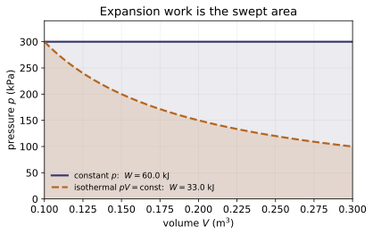
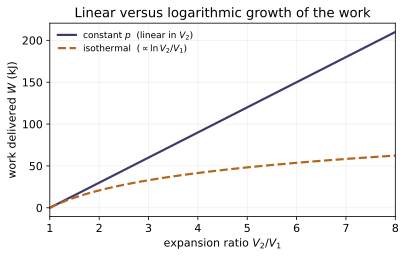
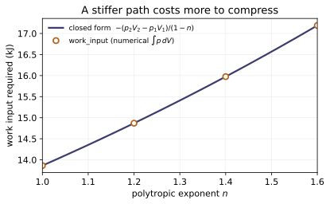
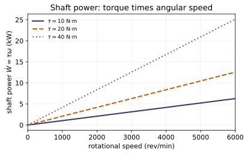
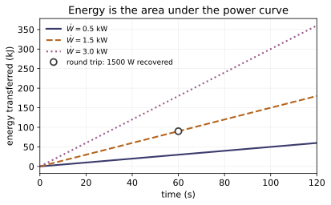
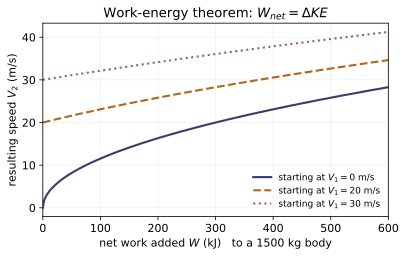
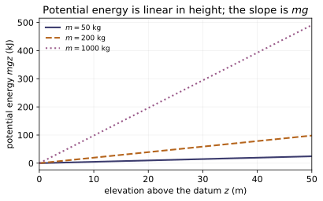

TD-1.1 — Open Systems (Control Volumes)
Thermodynamics · Topic 1: Foundations & System Concepts · Thermo/Topic_1/01.1_open_systems
An open system (control volume, CV) is a region with a fixed boundary that mass can cross. Two book-keeping laws govern it:
1. Mass rate balance — dm_cv/dt = Σ ṁ_in − Σ ṁ_out, with one-dimensional flow rate ṁ = A V / v. 2. Energy rate balance — dE_cv/dt = Q̇ − Ẇ + Σ ṁ(h + V²/2 + gz)_in − Σ ṁ(h + V²/2 + gz)_out. The flowing matter carries enthalpy (internal energy + flow work pv) plus kinetic and potential energy.
At steady state both time-derivatives vanish, giving the steady-flow energy equation that every component model in later modules specializes: nozzles & diffusers, turbines, compressors & pumps, throttles, heat exchangers, mixing chambers. Derivations with page citations are in notes.md/refs.md.
Key equations
Figures
![The flow energy carried across a control surface is $\psi=h+V^2/2+gz$ (flow_energy), but the last two terms are almost always negligible. Measured against superheated steam at 60 bar, 400 $^\circ$C ($h=3177$ kJ/kg from steam table A-4), the velocity must exceed $\sim$250 m/s before kinetic energy reaches 1% of $h$, and a 300 m elevation change contributes only 0.09%. This is the arithmetic behind the standard phrase 'kinetic and potential energy changes are negligible' — and the warning that in a nozzle, where $V$ is the whole point, it is not.](Thermo/Topic_1/01.1_open_systems/figures/fig1_flow_energy_terms.svg)

Example problems
Steam enters an adiabatic turbine at $60\,\mathrm{bar}$, $400^\circ\mathrm C$ and leaves at $0.10\,\mathrm{bar}$ with quality $x_2=0.90$. Neglecting $\Delta ke$ and $\Delta pe$, show $\dot W_{cv}/\dot m=h_1-h_2$ and evaluate it. Use $h_1$ from Table A‑4 and $h_2=h_f+x_2h_{fg}$ from Table A‑3 at $0.10$ bar. Answer: $3177.2-2345.4=831.8\ \mathrm{kJ/kg}$. Check: turbine_power(Stream(1, st.h_superheated(60,400)), Stream(1, st.h_two_phase(0.10,0.90))) ≈ 831.8; and energy_rate_residual(0, 831.8, [in], [out]) ≈ 0.
Steam enters a nozzle at $10\,\mathrm{bar}$, $200^\circ\mathrm C$ ($h_1=2827.9$ kJ/kg) with $V_1=10\,\mathrm{m/s}$ and expands adiabatically to $h_2=2700$ kJ/kg. Find the exit velocity. (Watch units: $\Delta h$ in kJ/kg → ×1000 for m²/s².) Answer: $V_2=\sqrt{10^2+2(1000)(2827.9-2700)}\approx 505.9\ \mathrm{m/s}$. Check: nozzle_exit_velocity(2827.9, 2700.0, V_in=10.0) ≈ 505.9; the inverse diffuser_exit_enthalpy(2700.0, 505.9, 10.0) ≈ 2827.9.
Saturated liquid water at $30\,\mathrm{bar}$ is throttled to $1\,\mathrm{bar}$. Using $h_2=h_1$, find the quality (fraction flashed to vapor) downstream. With $h_1=h_f(30\,\mathrm{bar})=1008.4$ kJ/kg and, at $1$ bar, $h_f=417.46$, $h_{fg}=2258.0$: $x_2=(h_1-h_f)/h_{fg}$. Answer: $x_2=(1008.4-417.46)/2258.0=0.262$ (≈26% flashes to vapor). Check: h1 = st.sat_pressure(30)['hf']; h2 = throttle_exit_enthalpy(h1); s = st.sat_pressure(1.0); x2 = (h2 - s['hf'])/s['hfg'] → ≈ 0.262.
In an open feedwater heater, superheated steam at $20\,\mathrm{bar}$, $320^\circ\mathrm C$ ($h=3069.5$ kJ/kg, $\dot m=1\,\mathrm{kg/s}$) mixes directly with subcooled liquid water ($h\approx167.6$ kJ/kg, $\dot m=4\,\mathrm{kg/s}$). For $\dot Q=\dot W=0$, find the exit enthalpy. Answer: $h_e=\dfrac{1(3069.5)+4(167.6)}{5}\approx 748.0\ \mathrm{kJ/kg}$. Check: mixing_exit_enthalpy([Stream(1.0, st.h_superheated(20,320)), Stream(4.0, 167.6)]) ≈ 748.
A closed (no-mixing) heat exchanger has a hot stream giving up enthalpy $3000\to500$ kJ/kg and a cold stream taking $100\to400$ kJ/kg. With $\dot Q_{cv}=\dot W=0$ around both streams, find $\dot m_{cold}/\dot m_{hot}$. Answer: $(3000-500)/(400-100)=2500/300=8.33$. Check: heat_exchanger_flow_ratio(3000, 500, 100, 400) ≈ 8.33.
Two inlets feed one outlet at steady state: $\dot m_1=6$, $\dot m_2=4\,\mathrm{kg/s}$. Find $\dot m_3$. If the outlet pipe has $v=0.5\,\mathrm{m^3/kg}$ and $V=20\,\mathrm{m/s}$, find its area $A$ from $\dot m=AV/v$. Answer: $\dot m_3=10\,\mathrm{kg/s}$; $A=\dot m v/V=10(0.5)/20=0.25\,\mathrm{m^2}$. Check: mass_rate_residual([Stream(6,0), Stream(4,0)], [Stream(10,0)]) = 0; mass_flow_rate(0.25, 20, 0.5) = 10.
Run the worked code: cd Thermo/Topic_1/01.1_open_systems/code && python3 open_systems.py
TD-1.2 — Closed Systems (Control Mass)
Thermodynamics · Topic 1: Foundations & System Concepts · Thermo/Topic_1/01.2_closed_systems
A closed system (control mass) is a fixed quantity of matter: no mass crosses the boundary, only heat Q and work W. Two things to compute:
1. Energy balance — ΔKE + ΔPE + ΔU = Q − W (sign: Q in +, W out +). 2. Boundary work of a quasiequilibrium volume change — W = ∫p dV, with the closed form for a polytropic process pVⁿ = const: W = (p₂V₂ − p₁V₁)/(1 − n) for n ≠ 1, and p₁V₁ ln(V₂/V₁) for n = 1.
Derivations with page citations are in notes.md/refs.md.
Key equations
Figures
![The same expansion of a gas from $V_1=0.1$ to $V_2=0.2$ m$^3$ starting at 3 bar, along three quasiequilibrium paths $pV^n=$ const (polytropic_pressure). The shaded area under each is the boundary work $W=\int p\,dV$ (polytropic_work): 30.0 kJ at constant pressure ($n=0$), 20.8 kJ isothermal ($n=1$), and 18.2 kJ for $n=1.4$. The larger $n$ is, the faster the pressure collapses as the gas expands, and the less work the same volume change delivers — the work depends on the PATH, not just on the end states.](Thermo/Topic_1/01.2_closed_systems/figures/fig1_polytropic_pv.svg)

Example problems
Air in a piston–cylinder follows pV^1.3 = const from p₁=100 kPa, V₁=1 m³ to V₂=0.5 m³. Find p₂ and the work W = (p₂V₂−p₁V₁)/(1−n). Answer: p₂ = 100(1/0.5)^1.3 = 246.2 kPa; W = −77.05 kJ (work in). Check: polytropic_pressure(100,1,0.5,1.3) ≈ 246.2; polytropic_work(100,1,0.5,1.3) ≈ −77.05; and pdv_work_trapz(lambda V:100*(1/V)**1.3, 1, 0.5) agrees.
The gas of P1 is compressed (so W = −77.05 kJ) while it also rejects Q = −50 kJ of heat. With ΔKE = ΔPE = 0, find ΔU. Answer: ΔU = Q − W = −50 − (−77.05) = +27.05 kJ. Check: work_done(Q=-50.0, dU=27.05) ≈ −77.05; heat_transfer(W=-77.05, dU=27.05) ≈ −50; energy_balance_residual(-50, -77.05, 27.05) ≈ 0.
An ideal gas expands isothermally (n=1) from 100 kPa, 1 m³ to 2 m³. Find the work, and the heat (recall ΔU=0 for an isothermal ideal gas, so Q=W). Answer: W = p₁V₁ ln(V₂/V₁) = 100(1)ln2 = 69.31 kJ, and Q = 69.31 kJ. Check: polytropic_work(100,1,2,1) ≈ 69.31; heat_transfer(W=69.31, dU=0.0) ≈ 69.31.
A gas is heated at constant p = 200 kPa, expanding from 1 m³ to 3 m³; its internal energy rises by ΔU = 300 kJ. Find W and Q. Answer: W = p(V₂−V₁) = 200(2) = 400 kJ; Q = ΔU + W = 300 + 400 = 700 kJ. Check: constant_pressure_work(200,1,3) = 400; heat_transfer(W=400, dU=300) = 700; and polytropic_work(200,1,3,0) = 400 (n=0 is constant pressure).
A 2 kg system accelerates from rest to 10 m/s and rises 10 m. Find ΔKE and ΔPE. Answer: ΔKE = ½(2)(10²) = 100 J = 0.100 kJ; ΔPE = 2(9.81)(10) = 196.2 J = 0.196 kJ. Check: delta_KE(2,0,10) = 0.1; delta_PE(2,0,10) ≈ 0.196.
Run the worked code: cd Thermo/Topic_1/01.2_closed_systems/code && python3 closed_systems.py
TD-1.3 — Extensive Properties
Thermodynamics · Topic 1: Foundations & System Concepts · Thermo/Topic_1/01.3_extensive_properties
A property is extensive if it depends on the size of the system and is additive over subsystems: split a system and the property is the sum of the parts. Mass m, volume V, energy E (and U, KE, PE), enthalpy H, entropy S are extensive. Operationally: X_total = Σ Xᵢ, and X(k·system) = k·X(system).
Key equations
Figures
![What makes a property *extensive*: double the system and you double the property. Volume, internal energy and kinetic energy carry different units and magnitudes, so each is divided by its own one-unit value (scales_with_extent) — and all three then land exactly on the line $X(k)/X(1)=k$. The collapse is the content of the definition: an extensive property has no meaning without saying how much substance there is. Contrast module 1.4, where the same rescaling leaves the intensive properties flat at 1.](Thermo/Topic_1/01.3_extensive_properties/figures/fig1_extensive_scaling.svg)

Example problems
A 3 kg system at specific volume v = 0.5 m³/kg is divided into 2 kg and 1 kg parts (same v). Show the volumes add. Answer: V = m v gives 1.0 + 0.5 = 1.5 m³ = V(3 kg). Check: volume(2,0.5) + volume(1,0.5) == volume(3,0.5) → True; is_additive([1.0,0.5],1.5) → True.
If one unit has internal energy U = 100 kJ, what is U of two identical units? Answer: extensive ⇒ 2 × 100 = 200 kJ = U(2 kg at u=100). Check: scales_with_extent(internal_energy(1,100), 2) == internal_energy(2,100) → True.
Classify: V, T, m, p, KE, ρ. Then confirm the extensive ones with the additivity test on two subsystems. Answer: extensive: V, m, KE; intensive: T, p, ρ (module 1.4). Check: kinetic_energy(2,10)+kinetic_energy(2,10) adds; density does not (it mass-averages — see 1.4).
Run the worked code: cd Thermo/Topic_1/01.3_extensive_properties/code && python3 extensive.py
TD-1.4 — Intensive Properties
Thermodynamics · Topic 1: Foundations & System Concepts · Thermo/Topic_1/01.4_intensive_properties
A property is intensive if it is independent of system size and may vary from point to point: temperature T, pressure p, density ρ, and every specific (per-unit-mass) property — specific volume v = V/m, specific internal energy u = U/m, etc. Two facts: - a specific property is an extensive one per unit mass: v = V/m = 1/ρ; - intensive properties mass-average over subsystems, they don't add: v_mix = Σ(mᵢ vᵢ)/Σmᵢ = V_total/m_total (contrast 1.3).
Key equations
Figures
![The same rescaling that sends every extensive property up the diagonal (module 1.3) leaves the intensive ones untouched. Copying a 2 kg, 1.6 m$^3$ system $k$ times multiplies mass and volume by $k$, but density $\rho=m/V$ and specific volume $v=V/m$ (density, specific_volume) stay pinned at their original value — the ratio of two extensive quantities cancels the extent. is_size_independent confirms it for an eight-fold scale-up. Temperature and pressure behave the same way, which is why they can be quoted for a substance without saying how much of it you have.](Thermo/Topic_1/01.4_intensive_properties/figures/fig1_intensive_invariance.svg)

Example problems
A tank holds m = 3 kg of gas in V = 1.5 m³. Find the specific volume v and density ρ, and verify vρ = 1. Answer: v = V/m = 0.5 m³/kg; ρ = 1/v = 2.0 kg/m³; vρ = 1. Check: specific_volume(1.5,3) = 0.5; density(3,1.5) = 2.0; product = 1.0.
Double the system (6 kg, 3 m³). Does v change? Answer: v = 3/6 = 0.5 m³/kg — unchanged; intensive properties don't scale. Check: is_size_independent(0.5, specific_volume(3,6)) → True.
Combine 3 kg at v=0.5 m³/kg with 1 kg at v=2.0 m³/kg. Find v_mix. Answer: v_mix = (3·0.5 + 1·2.0)/4 = 0.875 m³/kg (= V_total/m_total = 3.5/4). Check: mass_average([0.5,2.0],[3,1]) = 0.875 — note the extensive volume adds to 3.5 m³ (module 1.3) while the intensive v mass-averages.
Run the worked code: cd Thermo/Topic_1/01.4_intensive_properties/code && python3 intensive.py
TD-1.5 — Quasiequilibrium Processes
Thermodynamics · Topic 1: Foundations & System Concepts · Thermo/Topic_1/01.5_quasiequilibrium
A quasiequilibrium (quasistatic) process is so slow that the system stays infinitesimally close to equilibrium throughout — so a single p is defined at every step, the process is a continuous path of equilibrium states on a p–V diagram, and the boundary work is the area under that path, W = ∫p dV.
The headline result the code makes concrete: work is path-dependent. Between the same end states, different quasiequilibrium paths enclose different areas and deliver different work — so W (like Q) is a path function, not a property.
Key equations
Figures
![Work is a path function, not a property. The same compression from A $=(100$ kPa, 2 m$^3)$ to B $=(200$ kPa, 1 m$^3)$ is carried out along three quasiequilibrium paths, and the area under each differs: -138.6, -100.0 and -200.0 kJ (polytropic_work and path_work; negative because work is done ON the gas). Only because each path is quasiequilibrium — slow enough that a single pressure exists at every instant — can it be drawn as a curve at all. $\Delta U$ between A and B is the same for all three; $W$ and $Q$ are not.](Thermo/Topic_1/01.5_quasiequilibrium/figures/fig1_path_dependence.svg)
![The numerical method behind pdv_work, checked against a case with a closed-form answer. Integrating $p=p_1(V_1/V)^{1.4}$ from 0.1 to 0.2 m$^3$ by the trapezoid rule and differencing against polytropic_work gives an error that falls as $N^{-2}$ — the reference line has slope $-2$ — so each doubling of the step count cuts the error fourfold. The module's default of 20000 steps therefore sits far below any tolerance that matters here, and the routine can be trusted on paths $p(V)$ that have no closed form at all.](Thermo/Topic_1/01.5_quasiequilibrium/figures/fig2_trapezoid_convergence.svg)
Example problems
A gas expands along pV = const (isothermal, n=1) from 100 kPa, 2 m³ to 1 m³. Find the work as the area ∫p dV. Answer: W = p₁V₁ ln(V₂/V₁) = 100(2)ln(½) = −138.63 kJ. Check: polytropic_work(100,2,1,1) ≈ −138.63; numerically pdv_work(lambda V:200/V, 2, 1) agrees (here pV=200).
Connect the same end states A=(100 kPa, 2 m³) and B=(200 kPa, 1 m³) by (i) const-p then const-V, and (ii) const-V then const-p. Find each work and compare to P1. Answer: (i) W = 100(1−2) + 0 = −100 kJ; (ii) W = 0 + 200(1−2) = −200 kJ. Three paths → three works (−138.63 / −100 / −200): W is a path function. Check: path_work([("p",100,2,1),("V",1)]) = −100; path_work([("V",2),("p",200,2,1)]) = −200.
What is the boundary work of (a) a rigid tank being heated, and (b) a gas pushed out at constant 200 kPa from 1 m³ to 3 m³? Answer: (a) W = 0 (no volume change); (b) W = 200(3−1) = 400 kJ. Check: constant_volume_work(1) = 0; constant_pressure_work(200,1,3) = 400.
Run the worked code: cd Thermo/Topic_1/01.5_quasiequilibrium/code && python3 quasiequilibrium.py
TD-1.EQ — List of equations
Thermodynamics · Topic 1: Foundations & System Concepts · Thermo/Topic_1/1.EQ_list_of_equations
The key equations of Topic 1 (Foundations), in canonical Moran 8e form. Each is implemented as a function in code/equations.py; code/test_equations.py checks every value and cross-checks that the concept modules (1.1, 1.2, 1.4, 1.5) reproduce these forms — so the list is verified, not just asserted.
Citations are Moran 8e (printed pages; PDF = +17; see refs.md).
Properties & state (Ch. 1)
| # | Eq. | form | function | source |
|---|---|---|---|---|
| 1 | — | v = V/m | specific_volume(V,m) | §1.5, p.13 |
| 2 | 1.6 | ρ = m/V = 1/v | density(m,V) | §1.5, p.13 |
| 3 | 1.14 | p_abs = p_gauge + p_atm | gauge_to_absolute(pg,patm) | §1.6.3, p.17 |
| 4 | 1.16 | T(°R) = 1.8·T(K) | kelvin_to_rankine(T_K) | §1.7.2, p.18 |
| 5 | 1.17 | T(K) = T(°C) + 273.15 | celsius_to_kelvin(T_C) | §1.7.3, p.20 |
Energy & the first law — closed systems (Ch. 2)
| # | Eq. | form | function | source |
|---|---|---|---|---|
| 6 | 2.5 | ΔKE = ½m(V₂²−V₁²) | delta_KE(m,V1,V2) | §2.1.1, p.41 |
| 7 | 2.10 | ΔPE = mg(z₂−z₁) | delta_PE(m,z1,z2) | §2.1.2, p.42 |
| 8 | 2.35b | ΔKE + ΔPE + ΔU = Q − W | closed_system_heat(W,dU,…) | §2.5, p.61 |
| 9 | 2.17 | W = ∫p dV (quasiequilibrium) | boundary_work(p_of_V,V1,V2) | §2.2.3, p.48 |
| 10 | 2.1(a) | W = (p₂V₂−p₁V₁)/(1−n), n≠1 | polytropic_work(p1,V1,V2,n) | Ex 2.1, p.50 |
| 11 | 2.1(b) | W = p₁V₁ ln(V₂/V₁), n=1 | polytropic_work(…,1) | Ex 2.1, p.51 |
| — | — | p₂ = p₁(V₁/V₂)ⁿ (polytropic) | polytropic_pressure(…) | §2.2.5, p.50 |
Mass & energy — control volumes / open systems (Ch. 4)
| # | Eq. | form | function | source |
|---|---|---|---|---|
| 12 | 4.2 | dm_cv/dt = Σṁᵢ − Σṁₑ | mass_rate_residual(in,out) | §4.1, p.170 |
| 13 | 4.4b | ṁ = AV/v = ρAV | mass_flow_rate(A,V,v) | §4.2.1, p.172 |
| 14 | — | h = u + pv (enthalpy) | enthalpy(u,p,v) | §4.4.2, p.179 |
| 15 | 4.15 | dE_cv/dt = Q̇ − Ẇ + Σṁ(h+V²/2+gz)ᵢ − Σṁ(…)ₑ | flow_energy(h,V,z) (the ψ term) | §4.4.3, p.180 |
Constants used
Standard gravity g = 9.81 m/s². (Substance gas constants R and the universal R̄ = 8.314 kJ/kmol·K live in the cross-cutting Constants module / Table 3.1.)
Runpython3 code/equations.pyto print this registry, orpython3 code/test_equations.pyto verify every equation and its cross-module agreement ("All 26 tests passed.").
Run / verify the code: cd Thermo/Topic_1/1.EQ_list_of_equations/code && python3 equations.py
TD-1.EP — Worked examples
Thermodynamics · Topic 1: Foundations & System Concepts · Thermo/Topic_1/1.EP_example_problems
The worked Examples from Moran 8e Chapters 1–2, transcribed (GIVEN / FIND / ANSWER / METHOD) and regenerated by code (code/examples.py) so each book answer is reproduced and checked. Citations verified; PDF = printed + 17.
Runpython3 code/test_examples.py→"All 15 tests passed."(every answer below matches the function output within the book's rounding).
Example 1.1 — Using the Solution Methodology and System Concepts (p.25)
Conceptual (no numbers). A wind-turbine/generator atop a tower charges a storage battery in a steady wind.
- FIND: boundary interactions and time-behavior for (a) the turbine–generator, (b) the battery.
- ANSWER: (a) a control volume — air crosses the boundary (mass) and current flows in the wires (not mass); with steady wind it reaches steady state. (b) a closed system — current crosses the boundary (not mass), possibly a small thermal interaction; it is not at steady state (charge state changes).
- METHOD: control-volume vs. closed-system classification; steady-state = no property changes with time. (Ties to modules 1.1, 1.2.)
Example 2.1 — Evaluating Expansion Work (p.50)
- GIVEN: gas,
pVⁿ = const,p₁ = 3 bar,V₁ = 0.1 m³,V₂ = 0.2 m³; n = 1.5, 1.0, 0. - FIND: work
W(kJ) for each n. - ANSWER: n=1.5 →
p₂ = 1.06 bar,W = +17.6 kJ; n=1 →W = +20.79 kJ; n=0 →W = +30 kJ. - METHOD:
W = ∫p dV(Eq. 2.17); polytropic closed forms (polytropic_work). - Check:
ex_2_1()→17.6 / 20.79 / 30 kJ.
Example 2.2 — Cooling a Gas in a Piston–Cylinder (p.64)
- GIVEN:
m = 0.4 kg;pV^1.5 = const,p₁=3 bar, V₁=0.1, V₂=0.2 m³;u₂−u₁ = −55 kJ/kg;ΔKE=ΔPE=0. - FIND: net heat
Q(kJ). - ANSWER:
W = +17.6 kJ(Ex 2.1a);ΔU = 0.4(−55) = −22 kJ;Q = ΔU + W = −4.4 kJ(out). - METHOD: closed-system energy balance
ΔU = Q − W(Eq. 2.35b). - Check:
ex_2_2()["Q"]→−4.4.
Example 2.3 — Considering Alternative Systems (p.65)
- GIVEN (English units): air in vertical piston–cylinder + resistor;
p_atm=14.7 lbf/in²; piston100 lb, face1 ft²; constant-pressure expansionΔV=1.6 ft³;m_air=0.6 lb;Δu_air=+18 Btu/lb; piston insulating;g=32.0 ft/s². - FIND: heat to the air (Btu) treating (a) air alone, (b) air + piston.
- ANSWER: piston-balance
p = 15.4 lbf/in². (a)W = p·ΔV = 4.56 Btu,Q = W + m_air·Δu = 4.56 + 10.8 = 15.36 Btu. (b)W = p_atm·ΔV = 4.35 Btu,(ΔPE)_piston = 0.2 Btu,Q = 4.35 + 0.2 + 10.8 = 15.35 Btu(agree to round-off). - METHOD: energy balance (Eq. 2.35) for two system choices;
W=p ΔV; piston force balance. - Check:
ex_2_3()→p=15.4,Q_a=15.36,Q_b=15.35.
Example 2.4 — Energy Transfer Rates of a Gearbox at Steady State (p.68)
- GIVEN: input shaft
Ẇ₁ = −60 kW;Q̇ = −hA(T_b−T_f),h=0.171 kW/m²K,A=1 m²,T_b=300 K,T_f=293 K. - FIND:
Q̇and output powerẆ₂(kW). - ANSWER:
Q̇ = −1.2 kW(out);Ẇ₂ = Q̇ − Ẇ₁ = +58.8 kW. - METHOD: steady-state rate balance
0 = Q̇ − Ẇ,Ẇ = Ẇ₁ + Ẇ₂(Eq. 2.37); Newton cooling (Eq. 2.34). - Check:
ex_2_4()→Q̇=−1.2,Ẇ₂=58.8.
Example 2.5 — Surface Temperature of a Silicon Chip at Steady State (p.69)
- GIVEN:
Ẇ = −0.225 W;h=150 W/m²K;A=25×10⁻⁶ m²;T_f=293 K; conduction negligible. - FIND: chip surface temperature
T_b(°C). - ANSWER:
T_b = −Ẇ/(hA) + T_f = 60 + 293 = 353 K = 80 °C. - METHOD: steady-state
0 = Q̇ − Ẇ; Newton coolingQ̇ = −hA(T_b−T_f). - Check:
ex_2_5()→353 K (79.85 °C; book rounds to 80).
Example 2.6 — Transient Operation of a Motor (p.71)
- GIVEN:
Q̇ = −0.2[1−e^(−0.05t)] kW;ω = 100 rad/s;τ = 18 N·m;Ẇ_elec = −2.0 kW;0 ≤ t ≤ 120 s. - FIND:
Q̇,Ẇ, and energy changeΔEvs. time. - ANSWER:
Ẇ_shaft = τω = +1.8 kW;Ẇ = −2.0 + 1.8 = −0.2 kW;ΔE = 4[1−e^(−0.05t)] kJ → 4 kJast → ∞(near steady state,Q̇ → −0.2 kW). - METHOD: rate balance
dE/dt = Q̇ − Ẇ; shaft powerẆ_shaft = τω(Eq. 2.20); integrate. - Check:
ex_2_6()→Ẇ_shaft=1.8,Ẇ=−0.2,ΔE→4.
Source: modules/Thermo/thermodynamics.pdf, read page-by-page; see refs.md.
Run / verify the code: cd Thermo/Topic_1/1.EP_example_problems/code && python3 examples.py
TD-1.HP — Homework problems
Thermodynamics · Topic 1: Foundations & System Concepts · Thermo/Topic_1/1.HP_homework_problems
Selected quantitative end-of-chapter problems from Moran 8e Ch.1–2 ("Problems: Developing Engineering Skills", printed pp.30–35 and 82–90). Moran publishes no answer key, so the answers below are my worked solutions, each reproduced by code/homework.py and checked (test_homework.py, 39 checks incl. consistency). Citations in refs.md; PDF = printed + 17.
Chapter 1 — Getting Started
| # | given → find | answer | check |
|---|---|---|---|
| 1.8 | m=350 kg; find weight on Mars (g=3.73) and Earth (g=9.81) | 1305.5 N; 3433.5 N | p1_8() |
| 1.13 | m=120 lb weighs 119 lbf; find local g, then weight/mass at g=32.05 ft/s² | 31.91 ft/s²; 119.54 lbf, 120 lb | p1_13() |
| 1.20 | 0.5 kmol NH₃ in 6 m³; find weight & specific volume | 83.5 N; 12 m³/kmol, 0.7046 m³/kg | p1_20() |
| 1.21 | 2 lb liquid in 62.6 in³; find v and ρ | 0.01811 ft³/lb; 55.21 lb/ft³ | p1_21() |
| 1.23 | 5 kg vapor, v=0.2160 m³/kg; find V, gram-moles, molecules | 1.08 m³; 277.5 mol; 1.671×10²⁶ | p1_23() |
| 1.33 | gas manometer L=1.0 m Hg, p_atm=101 kPa; find gas pressure | 234.3 kPa | p1_33() |
| 1.35 | barometer, p_atm=100 kPa; find Hg column | 750.1 mm = 29.53 in | p1_35() |
| 1.36 | venturi, kerosene Δh=12 cm (v=0.00122 m³/kg); find Δp | 0.965 kPa | p1_36() |
| 1.38 | submarine at 1000 ft, water 62.4 lb/ft³; find pressure | 30.49 atm | p1_38() |
| 1.40 | inlet 5.5 psig (atm 14.5), ratio 8; find exit | 160 psia | p1_40() |
| 1.42 | 0.5-m piston, gauge 1.2→2.8 kPa; find piston & added mass | 24.0 kg; 32.0 kg | p1_42() |
| 1.50 | Toronto 19.5/−4.9 °C → °F, °R | 67.1 °F/526.8 °R; 23.2 °F/482.9 °R | p1_50() |
| 1.51 | six °F values → °C, K | e.g. 86 °F=30 °C=303.15 K; −459.67 °F=0 K | p1_51() |
Chapter 2 — Energy and the First Law
| # | given → find | answer | check |
|---|---|---|---|
| 2.5 | car 2500 lbf, ΔPE=2.25×10⁴ Btu from 5183 ft; find top elevation | 12 186 ft | p2_5() |
| 2.6 | m=1000 kg, 100→20 m/s; find ΔKE | −4800 kJ | p2_6() |
| 2.7 | 14 000 kg, 0→620 km/h, +10 000 m (g=9.78); find ΔKE, ΔPE | 207 623 kJ; 1 369 200 kJ | p2_7() |
| 2.26 | pV²=const, 1 bar/0.1 m³ → 9 bar; find V₂, W | 0.0333 m³; −20 kJ | p2_26() |
| 2.28 | pVⁿ, V 0.1→0.04 m³, p₂=2 bar; find p₁ & W for n=0,1,1.3 | p₁=2/0.8/0.61 bar; W=−12/−7.33/−6.41 kJ | p2_28() |
| 2.31 | air, 80 psi/4 ft³·lb⁻¹ → 20 psi/11; find polytropic work | n=1.370; W=+724 Btu | p2_31() |
| 2.39 | heater 6 A, 220 V, 24 h, $0.08/kWh; find power, energy, cost | 1.32 kW; 31.68 kWh; $2.53 | p2_39() |
| 2.58 | 10 kg: W=0.147 kJ/kg, Δz=−50 m, 15→30 m/s, Δu=−5 kJ/kg, g=9.7; find Q | −50.0 kJ | p2_58() |
| 2.59 | const-p 2 bar, 0.1→0.12 m³, ΔU=0.25 kJ; find W, Q | 4 kJ; 4.25 kJ | p2_59() |
| 2.62 | motor 10 A/110 V, 9.7 N·m @1000 rpm, hA=3.9 W/K, T_f=21 °C; find P_e, P_shaft, T_s | 1.1 kW; 1.016 kW; 42.6 °C | p2_62() |
| 2.71 | 25 kg piston (A=0.005 m²), 2.5 g air 2.5→1.0 L, −1 kJ; find Δu | −310.6 kJ/kg | p2_71() |
| 2.90 | refrigerator, Ẇ=0.15 kW, Q̇_out=0.6 kW; find Q̇_in, COP | 0.45 kW; COP=3.0 | p2_90() |
Run
cd code
python3 homework.py # print a sample of worked answers
python3 test_homework.py # 39 checks (answers + consistency) -> "All 39 tests passed."Skipped from extraction (no definite numeric answer): true/false items, design/ open-ended/Internet problems, and a few garbled or under-specified statements (e.g. 2.18 omits the mass; 2.29's "compression" actually expands).
Run / verify the code: cd Thermo/Topic_1/1.HP_homework_problems/code && python3 homework.py
TD-2.1 — Work
Thermodynamics · Topic 2: Energy & Work · Thermo/Topic_2/02.1_work
Work is an energy transfer that could in principle raise a weight, W = ∫F·ds (Moran §2.2). This module is the catalog of work modes under one sign convention — W > 0 when done BY the system — and the reminder that work is a path function (δW, not a property; see 1.5):
| mode | expression | code/work.py | |------|-----------|----------------| | moving boundary | ∫p dV | boundary_work | | general force | ∫F·ds | work_force_displacement | | rotating shaft | τ ω · dt | shaft_work | | electrical | V I · dt (− into system) | electric_work | | spring (linear) | ½k(x₂²−x₁²) | spring_work |
Moran's §2.2.8 gathers them as δW = p dV + σ d(Ax) + τ dA − ε dZ + … (Eq. 2.26).
Key equations
Figures

![Thermodynamics counts every mode of work in the same currency. A shaft turning at constant torque (shaft_work, $\tau\omega\Delta t$) and a resistor drawing constant current (electric_work, $\mathcal{E}I\Delta t$) both accumulate energy linearly in time, and the slope of each line is that mode's power. Over a minute the 1.8 kW shaft delivers 108 kJ against the 1.2 kW resistor's 72 kJ. Nothing in the energy balance distinguishes their origin — only the sign convention does, work OUT of the system being positive.](Thermo/Topic_2/02.1_work/figures/fig2_work_modes.svg)
Example problems
A linear spring, k=200 N/m, is stretched from its natural length to 0.1 m, then to 0.2 m. Find the work to each, and explain why the second is 4×, not 2×, the first. Answer: W = ½k x² → 1 J and 4 J; W ∝ x², so doubling x quadruples W. Check: spring_work(200,0,0.1) = 1.0; spring_work(200,0,0.2) = 4.0.
A shaft delivers τ=18 N·m at ω=100 rad/s for 1 s; separately an element draws 110 V, 10 A for 1 s. Find each work. Answer: shaft W=τω·dt = 1800 J (out); electrical |W| = VI·dt = 1100 J (in). Check: shaft_work(18,100,1) = 1800; electric_work(110,10,1) = 1100.
A force F(s) = 10 s (N, s in m) acts over 0 → 2 m. Find the work. Answer: W = ∫₀² 10s ds = 5s²|₀² = 20 J. Check: work_force_displacement(lambda s: 10*s, 0, 2) ≈ 20.
A gas at constant 200 kPa expands 1 → 1.5 m³. Find the boundary work. Answer: W = ∫p dV = 200(0.5) = 100 kJ (done by the gas). Check: boundary_work(lambda V: 200, 1, 1.5) ≈ 100.
Run the worked code: cd Thermo/Topic_2/02.1_work/code && python3 work.py
TD-2.2 — Expansion Work
Thermodynamics · Topic 2: Energy & Work · Thermo/Topic_2/02.2_expansion_work
Key equations
Figures


Example problems
A gas at constant 200 kPa expands 1 → 1.5 m³. Find the work. Answer: W = p(V₂−V₁) = 200(0.5) = 100 kJ. Check: constant_pressure_expansion(200,1,1.5) = 100.
An ideal gas expands isothermally from 100 kPa, 1 m³ to 2 m³. Find the work. Answer: W = p₁V₁ ln(V₂/V₁) = 100·ln2 = 69.31 kJ. Check: isothermal_expansion(100,1,2) ≈ 69.31.
Run the worked code: cd Thermo/Topic_2/02.2_expansion_work/code && python3 expansion_work.py
TD-2.3 — Compression Work
Thermodynamics · Topic 2: Energy & Work · Thermo/Topic_2/02.3_compression_work
Key equations
Figures
![Halving the volume of a gas from 0.2 to 0.1 m$^3$ starting at 1 bar, along three polytropic paths $pV^n=$ const. The work is negative by the sign convention (energy flows INTO the system), so the labels give its magnitude — the input required. Isothermal compression is cheapest because the gas is cooled as it is squeezed and its pressure stays low; the adiabatic path $n=1.4$ traps the heat of compression, lifting the pressure at every volume and enlarging the area. This is why real compressors are intercooled.](Thermo/Topic_2/02.3_compression_work/figures/fig1_compression_pv.svg)

Example problems
Air is compressed along pV^1.3 = const from 100 kPa, 1 m³ to 0.5 m³. Find the work and the work input. Answer: W = −77.05 kJ; work input = −W = 77.05 kJ. Check: polytropic_compression(100,1,0.5,1.3) ≈ −77.05.
A gas is compressed at constant 150 kPa from 1 m³ to 0.6 m³. Find the work input. Answer: W = 150(0.6−1) = −60 kJ; work input = 60 kJ. Check: work_input(lambda V: 150, 1, 0.6) = 60.
Run the worked code: cd Thermo/Topic_2/02.3_compression_work/code && python3 compression_work.py
TD-2.4 — Power
Thermodynamics · Topic 2: Energy & Work · Thermo/Topic_2/02.4_power
Power is the rate of energy transfer by work, Ẇ = δW/dt (Moran §2.2.2). Each work mode of 2.1 has a power:
| | expression | code/power.py | |---|-----------|-----------------| | force on a moving point | Ẇ = F·V | power_force_velocity | | rotating shaft | Ẇ = τ ω | shaft_power | | electrical | Ẇ = V I | electric_power | | from work / to energy | Ẇ = W/dt, W = Ẇ·dt | power_from_work, energy_from_power |
rpm_to_rad_s converts shaft speed. Same sign convention (Ẇ>0 out).
Key equations
Figures


Example problems
A motor output shaft delivers τ = 9.7 N·m at 1000 rpm. Find the shaft power (kW). Answer: ω = 1000·2π/60 = 104.7 rad/s; Ẇ = τω ≈ 1016 W ≈ 1.016 kW. Check: shaft_power(9.7, rpm_to_rad_s(1000)) ≈ 1015.8.
A heater draws 6 A at 220 V. Find its power and the energy used in 24 h. Answer: Ẇ = VI = 1320 W = 1.32 kW; E = 1.32·24 = 31.68 kW·h. Check: electric_power(220,6)/1000 = 1.32; energy_from_power(1320, 24*3600)/3.6e6 = 31.68.
A vehicle pushes with a steady 500 N at 4 m/s. Find the power delivered. Answer: Ẇ = F·V = 2000 W = 2 kW. Check: power_force_velocity(500, 4) = 2000.
Run the worked code: cd Thermo/Topic_2/02.4_power/code && python3 power.py
TD-2.5 — Kinetic Energy
Thermodynamics · Topic 2: Energy & Work · Thermo/Topic_2/02.5_kinetic_energy
Key equations
Figures


Example problems
A 1000 kg object slows from 100 m/s to 20 m/s. Find ΔKE. Answer: ΔKE = ½(1000)(20²−100²) = −4.8×10⁶ J = −4800 kJ. Check: delta_KE(1000,100,20) = −4.8e6.
What speed does a 2 kg body reach from rest after 100 J of net work? Answer: ½mV² = W ⇒ V = √(2W/m) = √100 = 10 m/s. Check: speed_after_work(2,0,100) = 10; work_from_KE(2,0,10) = 100.
Run the worked code: cd Thermo/Topic_2/02.5_kinetic_energy/code && python3 kinetic_energy.py
TD-2.6 — Potential Energy
Thermodynamics · Topic 2: Energy & Work · Thermo/Topic_2/02.6_potential_energy
Key equations
Figures


Example problems
Find the change in potential energy when 10 kg is raised 50 m (g=9.81). Answer: ΔPE = mg(z₂−z₁) = 10·9.81·50 = 4905 J. Check: delta_PE(10,0,50) = 4905.
The same mass now falls 50 m. How much work does gravity do? Answer: W_grav = −ΔPE = +4905 J (gravity does positive work on the falling mass). Check: work_by_gravity(10,50,0) = 4905.
Run the worked code: cd Thermo/Topic_2/02.6_potential_energy/code && python3 potential_energy.py
TD-2.7 — Buoyancy
Thermodynamics · Topic 2: Energy & Work · Thermo/Topic_2/02.7_buoyancy
Archimedes' principle: a submerged (or floating) body feels an upward buoyant force equal to the weight of the fluid it displaces, $$F_b=\rho_\text{fluid}\,g\,V_\text{displaced}.$$ Moran derives it in §1.6.2 from the pressure–depth relation. Consequences: a body floats iff its mean density is below the fluid's, and a freely floating body submerges a fraction ρ_object/ρ_fluid of its volume.
| call | meaning | |------|---------| | buoyant_force(ρ_fluid, V, g) | F_b = ρgV | | apparent_weight(W, ρ_fluid, V) | W − F_b | | floats(ρ_object, ρ_fluid) | ρ_object < ρ_fluid | | submerged_fraction(ρ_object, ρ_fluid) | ρ_object/ρ_fluid |
Key equations
Figures


Example problems
Find the buoyant force on a 1 m³ object fully submerged in water (ρ=1000 kg/m³). Answer: F_b = ρgV = 1000·9.81·1 = 9810 N. Check: buoyant_force(1000, 1) = 9810.
Ice (ρ=917) floats in seawater (ρ=1025). What fraction is submerged? Answer: V_sub/V_tot = ρ_ice/ρ_sea = 917/1025 ≈ 0.895 (≈ 89.5 %). Check: submerged_fraction(917, 1025) ≈ 0.895.
A steel block (ρ=7850) weighs 100 N in air. Find its apparent weight fully submerged in water. Answer: V = 100/(7850·9.81) = 1.30×10⁻³ m³; F_b = 1000·9.81·V ≈ 12.7 N; apparent ≈ 87.3 N. Check: apparent_weight(100, 1000, 100/(7850*9.81)) ≈ 87.3.
Run the worked code: cd Thermo/Topic_2/02.7_buoyancy/code && python3 buoyancy.py
TD-2.EQ — List of equations
Thermodynamics · Topic 2: Energy & Work · Thermo/Topic_2/2.EQ_list_of_equations
The key equations of Topic 2 (Energy & Work) in canonical Moran 8e form. Each is a function in code/equations.py; code/test_equations.py checks every value and cross-checks that the concept modules (2.1–2.6) reproduce these forms. Complements Topic_1/1.EQ (foundations); citations are Moran 8e (printed pages; PDF = +17; refs.md).
Work (Ch. 2 §2.2)
| # | Eq. | form | function | source | ||
|---|---|---|---|---|---|---|
| 1 | 2.12 | W = ∫F·ds | general_work | §2.2, p.44 | ||
| 2 | 2.17 | W = ∫p dV (boundary) | boundary_work | §2.2.3, p.48 | ||
| 3 | 2.20 | Ẇ = τω ⟹ W = τω·Δt (shaft) | shaft_work | §2.2.6, p.53 | ||
| 4 | 2.21 | Ẇ = −εi; ` | W | = VI·Δt` (electric) | electric_work | §2.2.6, p.53 |
| 5 | (2.18) | W = ½k(x₂²−x₁²) (spring) | spring_work | §2.2.6, p.52 |
Power (§2.2.2)
| # | Eq. | form | function | source |
|---|---|---|---|---|
| 6 | 2.13 | Ẇ = F·V | power_force_velocity | §2.2.2, p.46 |
| — | 2.20/2.21 | shaft τω, electric VI | shaft_power, electric_power | §2.2.6, p.53 |
Energy (§2.1, §2.3)
| # | Eq. | form | function | source |
|---|---|---|---|---|
| 7 | 2.5 | ΔKE = ½m(V₂²−V₁²) | delta_KE, kinetic_energy | §2.1.1, p.41 |
| 8 | 2.10 | ΔPE = mg(z₂−z₁) | delta_PE, potential_energy | §2.1.2, p.42 |
| 9 | 2.27 | E = U + KE + PE | total_energy | §2.3, p.55 |
The generalized work form δW = p dV + σ d(Ax) + τ dA − ε dZ + … (Eq. 2.26, §2.2.8, p.54) unifies modes 1–5.
python3 code/test_equations.py→ 13 value checks + 14 cross-module checks ="All 27 tests passed."
Run / verify the code: cd Thermo/Topic_2/2.EQ_list_of_equations/code && python3 equations.py
TD-2.EP — Worked examples
Thermodynamics · Topic 2: Energy & Work · Thermo/Topic_2/2.EP_example_problems
The worked Examples for Energy & Work are Moran Chapter 2's, already verified in Topic_1/1.EP (examples.md + code/examples.py, "All 15 tests passed"). Mapped to Topic-2 concepts:
| Moran Example | Topic-2 concept | book answer | verified in |
|---|---|---|---|
| 2.1 Evaluating Expansion Work | 2.1 work, 2.2 expansion | W = 17.6 / 20.79 / 30 kJ | Topic_1/1.EP ex_2_1 |
| 2.2 Cooling a Gas in a Piston–Cylinder | 2.3 compression, closed-system 1st law | Q = −4.4 kJ | Topic_1/1.EP ex_2_2 |
| 2.3 Considering Alternative Systems | 2.1 boundary work, 2.6 PE of piston | Q = 15.4 / 15.35 Btu | Topic_1/1.EP ex_2_3 |
| 2.4 Gearbox at Steady State | 2.4 power (shaft) | Q̇ = −1.2 kW, Ẇ₂ = 58.8 kW | Topic_1/1.EP ex_2_4 |
| 2.5 Silicon Chip at Steady State | 2.4 power | T_b = 353 K (80 °C) | Topic_1/1.EP ex_2_5 |
| 2.6 Transient Operation of a Motor | 2.4 power (shaft τω) | Ẇ = −0.2 kW, ΔE → 4 kJ | Topic_1/1.EP ex_2_6 |
To run them: cd ../../Topic_1/1.EP_example_problems/code && python3 test_examples.py.
New end-of-chapter homework for Topic 2 (a fresh, non-overlapping Ch.2 set) is in the sibling 2.HP module.
TD-2.HP — Homework problems
Thermodynamics · Topic 2: Energy & Work · Thermo/Topic_2/2.HP_homework_problems
17 quantitative work/energy problems from Moran 8e Ch.2 (printed pp.82–90), chosen to not overlap Topic_1/1.HP's 12. Moran has no answer key, so these are my worked solutions, reproduced by code/homework.py and checked (test_homework.py, 30 checks incl. consistency). Citations in refs.md.
Kinetic & potential energy
| # | given → find | answer | check |
|---|---|---|---|
| 2.10 | 300 lb, work on it 140 Btu, +100 ft, V₂=200 ft/s; find V₁ | 151.9 ft/s | p2_10() |
| 2.14 | 100 lb free-fall from 600 ft, V₁=50 ft/s down, g=31.5; find impact V | 200.7 ft/s | p2_14() |
| 2.16 | 200 kg down 10 m ramp at 40°, frictionless; find V at bottom | 11.23 m/s | p2_16() |
Work from a resultant force / power
| # | given → find | answer | check |
|---|---|---|---|
| 2.19 | 10 kg, a=4 m/s² for 20 s from rest; find work | 32 kJ | p2_19() |
| 2.22 | truck 322.5 kN at 110 km/h, f=0.0069 (Fr=fw); find power | 68.0 kW | p2_22() |
Expansion / compression (∫p dV) work
| # | given → find | answer | check |
|---|---|---|---|
| 2.27 | CO₂, p=23.75−7.5V (psi,ft³), 2.5→0.5 ft³; find W | −4.63 Btu | p2_27() |
| 2.29 | N₂, pV¹·³⁵, 20 bar/0.5 m³ → 2.75 m³; find p₂, W | 2.00 bar; +1284 kJ¹ | p2_29() |
| 2.30 | O₂, p=A/V+B (A=0.06,B=3.0), 0.01→0.03 m³; find p₁,p₂,W | 9, 5 bar; 12.59 kJ | p2_30() |
| 2.35 | air cycle: pV=c (10 psi/4 ft³→50), const-V, const-p back; find V₂, W each | 0.8 ft³; −11.91/0/+5.92 Btu | p2_35() |
Spring / shaft / electrical
| # | given → find | answer | check |
|---|---|---|---|
| 2.36 | belt sander, 1500 ft/min, μ=0.2, N=15 lbf; find power, work/min | 0.136 hp; 5.78 Btu | p2_36() |
| 2.37 | pulley r=0.075 m, τ=200 N·m, 7 kW; find belt force, rpm | 2.67 kN; 334 rpm | p2_37() |
| 2.38 | 10 V, 0.5 A, 30 min; find R, energy | 20 Ω; 9 kJ | p2_38() |
| 2.45 | spring k=10⁴, ℓ₀=3 cm, 6→10 cm; find work | 20 J | p2_45() |
Closed-system energy balance
| # | given → find | answer | check |
|---|---|---|---|
| 2.65 | piston A=40 in², 100 lbf, atm 14.7; paddle +3 Btu, rises 1 ft, adiabatic; find ΔU | +2.12 Btu | p2_65() |
| 2.66 | 0.4 lb gas, pv¹·², 160 psi/1 ft³ → 390 psi, Q=−2.1 Btu; find Δu | +54.0 Btu/lb | p2_66() |
| 2.70 | air adiabatic n=1.4, 100 psi/1000 °R → 50 psi; find T₂ | 820 °R | p2_70() |
| 2.64 | R22 rigid tank 1 kg, u 232.92→276.67, paddle 0.1 kW 20 min, Q̇=K·t; find W, Q, K | −120 kJ; −76.25 kJ; 0.00635 kW/min | p2_64() |
¹ Problem 2.29's printed text says "compression," but the data (p₂≈2 bar, V increasing 0.5→2.75 m³) describe an expansion with W>0 — flagged by the extraction. Solved as stated by the numbers.
Run
cd code
python3 homework.py # sample of worked answers
python3 test_homework.py # -> "All 30 tests passed."Run / verify the code: cd Thermo/Topic_2/2.HP_homework_problems/code && python3 homework.py
TD-3.1 — Zeroth Law & Temperature
Thermodynamics · Topic 3: The Laws Of Thermodynamics · Thermo/Topic_3/03.1_zeroth_law
The zeroth law: if two bodies are each in thermal equilibrium with a third, they are in equilibrium with each other (Moran §1.7, p.19). That transitivity is what makes temperature a consistent property — and what makes a thermometer (the reusable "third body") meaningful. This module is the temperature-scale toolkit:
| from → to | relation | code/temperature.py | |-----------|----------|------------------------| | K → °R | T_R = 1.8 T_K | rankine_from_kelvin | | K ↔ °C | T_C = T_K − 273.15 | celsius_from_kelvin / kelvin_from_celsius | | °R → °F | T_F = T_R − 459.67 | fahrenheit_from_rankine | | °C ↔ °F | T_F = 1.8 T_C + 32 | fahrenheit_from_celsius / celsius_from_fahrenheit |
Kelvin and Rankine are absolute (zero at absolute zero); Celsius and Fahrenheit are shifted. In every thermodynamic law, T must be absolute — a ratio like T_C/T_H (Carnot, 3.3) is meaningless on °C/°F.
Figures
![The four scales are one straight line re-labelled. Kelvin and Rankine pass through the origin — they are absolute, differing only by the factor 1.8 (rankine_from_kelvin) — while Celsius and Fahrenheit are the same two lines slid down by 273.15 and 459.67 (celsius_from_kelvin, fahrenheit_from_rankine). Absolute zero sits at -273.15 $^\circ$C, and the triple point of water, the single fixed point that defines the kelvin, is at 273.16 K. Only the absolute scales may be used in ratios such as the Carnot efficiency.](Thermo/Topic_3/03.1_zeroth_law/figures/fig1_temperature_scales.svg)
![The zeroth law is the licence to use a thermometer. If body A and body B each separately reach equilibrium with a third body C, then A and B are in equilibrium with each other (zeroth_law) — even though they were never brought into contact. That transitivity is what allows one number to be attached to a state and called its temperature: 'thermal equilibrium' is an equivalence relation, and temperature is the label on its classes. The law is numbered zeroth because it was recognised as a prerequisite only after the first and second laws were established.](Thermo/Topic_3/03.1_zeroth_law/figures/fig2_zeroth_law.svg)
Example problems
A furnace wall sits at 1200 K. Express it in °R, °C, and °F. Answer: °R = 1.8·1200 = 2160; °C = 1200 − 273.15 = 926.85; °F = 1.8·926.85 + 32 = 1700.33. Check: rankine_from_kelvin(1200) = 2160; celsius_from_kelvin(1200) = 926.85; fahrenheit_from_celsius(926.85) = 1700.33.
A Carnot engine runs between 27 °C and 327 °C. A student writes "efficiency" as 1 − 27/327 = 0.917. What is wrong, and what is the correct temperature ratio? Answer: ratios require absolute T. T_C = 300.15 K, T_H = 600.15 K, so 1 − 300.15/600.15 ≈ 0.500. The °C version (0.917) is meaningless. (Carnot η is developed in 3.3.) Check: kelvin_from_celsius(27) = 300.15; kelvin_from_celsius(327) = 600.15; 1 - 300.15/600.15 ≈ 0.4999.
Block A reads 350 K on a thermometer; block B reads 350 K on the same thermometer; the two blocks are never touched together. Are they in thermal equilibrium? Answer: Yes — by the zeroth law, A~C and B~C (C = thermometer) ⇒ A~B. Check: zeroth_law(350, 350, 350) → True.
Find the temperature at which the Celsius and Fahrenheit readings are numerically equal. Answer: set T = 1.8T + 32 ⇒ −0.8T = 32 ⇒ T = −40 (−40 °C = −40 °F). Check: fahrenheit_from_celsius(-40) = −40.0.
Run the worked code: cd Thermo/Topic_3/03.1_zeroth_law/code && python3 temperature.py
TD-3.2 — First Law / Energy Balance
Thermodynamics · Topic 3: The Laws Of Thermodynamics · Thermo/Topic_3/03.2_first_law
The first law: energy is conserved. For a closed system over 1→2, E₂ − E₁ = Q − W, i.e. ΔU + ΔKE + ΔPE = Q − W (Moran Eq. 2.35). Internal energy is a property (ΔU depends only on end states); Q and W are path functions (1.5, 2.1).
| quantity | relation | code/first_law.py | |----------|----------|----------------------| | energy change | E₂−E₁ = Q − W | delta_E | | internal energy | ΔU = Q − W − ΔKE − ΔPE | closed_system_dU | | heat | Q = ΔU + ΔKE + ΔPE + W | heat_transfer | | rate form | dE/dt = Q̇ − Ẇ | rate_energy_balance | | cycle | W_cycle = Q_cycle | cycle_net_work / power_cycle_work |
Signs: Q > 0 heat IN, W > 0 work OUT (by the system).
Key equations
Figures


Example problems
A closed system receives Q = +50 kJ of heat and does W = +30 kJ of work, with negligible ΔKE, ΔPE. Find ΔU. Answer: ΔU = Q − W = 50 − 30 = +20 kJ. Check: closed_system_dU(50, 30) = 20.
A gas is compressed/cooled with boundary work W = +17.6 kJ and internal-energy change ΔU = −22 kJ. Find the heat transfer and its direction. Answer: Q = ΔU + W = −22 + 17.6 = −4.4 kJ → heat is out of the gas. Check: heat_transfer(-22, 17.6) = −4.4.
A gearbox at steady state rejects heat at Q̇ = −1.2 kW. What is the net power, and why must Ẇ = Q̇? Answer: steady state ⇒ dE/dt = 0 ⇒ Ẇ = Q̇ = −1.2 kW (net power out is −1.2 kW, i.e. 1.2 kW supplied as the input shaft exceeds the output by the heat loss). Check: rate_energy_balance(-1.2, -1.2) = 0.
A power cycle absorbs Q_in = 1000 kJ and rejects Q_out = 600 kJ per cycle. Find the net work, and verify W_cycle = Q_cycle. Answer: W_cycle = Q_in − Q_out = 400 kJ; and Q_cycle = 1000 − 600 = 400 kJ, so W_cycle = Q_cycle (since ΔE_cycle = 0). Check: power_cycle_work(1000, 600) = 400; cycle_net_work(400) = 400.
Between the same two states, path A has (Q,W) = (80, 30) kJ and path B has (Q,W) = (50, 0) kJ. Show both give the same ΔU (as they must, U being a property). Answer: ΔU_A = 80 − 30 = 50 kJ; ΔU_B = 50 − 0 = 50 kJ. Equal — only Q − W is fixed; the split is path-dependent. Check: closed_system_dU(80, 30) = closed_system_dU(50, 0) = 50.
Run the worked code: cd Thermo/Topic_3/03.2_first_law/code && python3 first_law.py
TD-3.3 — Second Law
Thermodynamics · Topic 3: The Laws Of Thermodynamics · Thermo/Topic_3/03.3_second_law
The first law conserves energy; the second law gives processes a direction and forbids converting heat fully into work. Two classical statements (Moran §5.2):
- Clausius: no cycle can have, as its sole result, heat passing from a cooler to a hotter body. - Kelvin–Planck: no cycle exchanging heat with a single reservoir delivers net work — analytically W_cycle ≤ 0 (Eq. 5.1/5.3).
Consequences (code/second_law.py):
| quantity | relation | function | |----------|----------|----------| | Carnot efficiency | η_max = 1 − T_C/T_H | carnot_efficiency | | efficiency from heat | η = 1 − Q_C/Q_H | efficiency_from_heat | | Kelvin scale | (Q_C/Q_H)_rev = T_C/T_H | kelvin_ratio | | max COP (refrig.) | β_max = T_C/(T_H−T_C) | carnot_cop_refrigerator | | max COP (heat pump) | γ_max = T_H/(T_H−T_C) | carnot_cop_heat_pump |
T must be absolute (K or °R). Carnot is the ceiling: real cycles fall short.
Key equations
Figures
![The second law drawn as a boundary. Between reservoirs at $T_C=300$ K and $T_H$, no power cycle may have an efficiency above $\eta_{max}=1-T_C/T_H$ (carnot_efficiency); the shaded region is ruled out, and efficiency_is_possible returns False anywhere inside it. Even at 1500 K the ceiling is only 80%, and it reaches 1 only as $T_H\to\infty$ — the Kelvin-Planck statement, that no cycle can convert heat from a single reservoir entirely into work (kelvin_planck_allows). Real engines run well below the line.](Thermo/Topic_3/03.3_second_law/figures/fig1_carnot_ceiling.svg)
![The second law as an energy budget rather than a ratio. Of 1000 kJ drawn from a reservoir at $T_H$ and rejected to one at 300 K, the lower band is the most that can ever leave as work (max_work_from_heat) and the upper band is waste heat that MUST be discarded — not a design flaw, a requirement. At 600 K only 500 kJ is available; doubling the source to 1200 K raises it to just 750 kJ. Run the same cycle backwards and the ratios invert into the refrigerator and heat-pump COPs (carnot_cop_refrigerator, carnot_cop_heat_pump), which exceed 1 precisely because they move heat rather than make work.](Thermo/Topic_3/03.3_second_law/figures/fig2_max_work_budget.svg)
Example problems
A power cycle receives heat at T_H = 745 K and rejects to T_C = 298 K. Find the maximum possible thermal efficiency. Answer: η_max = 1 − 298/745 = 0.60 (60%). No cycle between these reservoirs can exceed this. Check: carnot_efficiency(298, 745) = 0.60.
An inventor claims a power cycle that is 65% efficient between 745 K and 298 K. Is it possible? Answer: No — it exceeds the Carnot ceiling 0.60 (corollary 1). At most a reversible cycle reaches 0.60. Check: efficiency_is_possible(0.65, 298, 745) → False.
A reversible cycle runs between T_C = 250 K and T_H = 300 K. Find the maximum COP as a refrigerator and as a heat pump, and verify γ = β + 1. Answer: β_max = 250/50 = 5, γ_max = 300/50 = 6, and 6 = 5 + 1. Check: carnot_cop_refrigerator(250,300) = 5; carnot_cop_heat_pump(250,300) = 6.
Can a cycle exchanging heat with a single reservoir produce W_cycle = +50 kJ? What about −50 kJ? Answer: +50 is forbidden (W_cycle ≤ 0 for a single reservoir); −50 (net work in, e.g. a stirring process) is allowed. Check: kelvin_planck_allows(50) → False; kelvin_planck_allows(-50) → True.
A reservoir at T_H = 745 K supplies Q_H = 1000 kJ; the environment is T_C = 298 K. What is the most work any cycle can extract? Answer: W_max = η_max · Q_H = 0.60 · 1000 = 600 kJ. Check: max_work_from_heat(1000, 298, 745) = 600.
Run the worked code: cd Thermo/Topic_3/03.3_second_law/code && python3 second_law.py
TD-3.4 — Third Law
Thermodynamics · Topic 3: The Laws Of Thermodynamics · Thermo/Topic_3/03.4_third_law
The third law (Moran §13.5.1, p.837): > the entropy of a pure crystalline substance is zero at the absolute zero of > temperature, 0 K or 0 °R.
Non-crystalline substances keep a nonzero residual entropy. With S(0)=0 as the datum, the absolute entropy follows from calorimetry, S(T) = ∫₀ᵀ c_p/T dT; the Debye limit c_p ~ aT³ makes the integrand vanish at T=0, so S(T) is finite.
| concept | relation | code/third_law.py | |---------|----------|----------------------| | third-law datum | S(0 K) = 0 (pure crystal) | standard_entropy_at_zero | | Debye heat capacity | c_p = a T³ | debye_cp | | absolute entropy | S(T) = ∫₀ᵀ c_p/T dT | absolute_entropy | | analytic check | S = a T³/3 | absolute_entropy_debye | | unattainability | β = T_C/(T_H−T_C) → 0 | carnot_cop_refrigerator |
Key equations
Figures
![The third law needs the heat capacity to die at the origin, and it does. With the low-temperature Debye form $c_p=aT^3$ (debye_cp) the entropy integrand $c_p/T=aT^2$ also vanishes, so $S(T)=\int_0^Tc_p/T'\,dT'=aT^3/3$ converges to a finite value and can be anchored at $S(0)=0$ for a pure crystalline solid (standard_entropy_at_zero). The circles are the module's numerical quadrature absolute_entropy, which lands on the closed form absolute_entropy_debye. Had $c_p$ stayed finite at $T=0$, the integral would diverge logarithmically and absolute entropies would not exist.](Thermo/Topic_3/03.4_third_law/figures/fig1_debye_entropy.svg)

Example problems
What is the entropy of a pure crystalline substance at 0 K? Of a substance that is not perfectly crystalline at 0 K? Answer: S = 0 for the pure crystal (third law); the non-crystalline substance has a nonzero residual entropy. Check: standard_entropy_at_zero(True) = 0.0; standard_entropy_at_zero(False) → None.
Using the low-T model c_p = aT³ with a = 1×10⁻³, find the absolute entropy at 10 K both analytically and from the integral ∫₀ᵀ c_p/T dT. Answer: S = ∫₀¹⁰ aT² dT = a·10³/3 = 1/3 ≈ 0.3333. The integrand aT² → 0 at the origin, so the integral is finite. Check: absolute_entropy_debye(10, 1e-3) = 1/3; absolute_entropy(10, lambda T: debye_cp(T,1e-3)) ≈ 0.3333.
A reversible refrigerator rejects heat to T_H = 300 K. Tabulate its COP for T_C = 250, 50, 1 K. What does the trend imply about reaching 0 K? Answer: β = T_C/(T_H−T_C): β(250)=5, β(50)=0.2, β(1)≈0.0033. As T_C→0, β→0, so the work per unit heat removed → ∞ — absolute zero is unattainable in finite steps. Check: carnot_cop_refrigerator(1, 300) ≈ 0.00334 < ...(250,300) = 5.
Why does CO (carbon monoxide) retain a small entropy as T → 0, contrary to the naive S→0? Answer: CO freezes into a crystal with orientational disorder (C–O vs O–C), i.e. it is not a perfect pure crystal; the third law's S=0 applies only to the ideal pure-crystalline state, so CO keeps a residual entropy. Check (concept): standard_entropy_at_zero(pure_crystalline=False) → None.
Run the worked code: cd Thermo/Topic_3/03.4_third_law/code && python3 third_law.py
TD-3.EQ — List of equations
Thermodynamics · Topic 3: The Laws Of Thermodynamics · Thermo/Topic_3/3.EQ_list_of_equations
The defining equations of Topic 3 in canonical Moran 8e form. Each is a function in code/equations.py; code/test_equations.py checks every value and cross-checks that the concept modules (3.1–3.4) reproduce them. Citations are Moran 8e (printed pages; PDF = printed + 18; refs.md).
Zeroth law — temperature (Ch. 1 §1.7)
| Eq. | form | function | source |
|---|---|---|---|
| 1.16 | T_R = 1.8 T_K | rankine_from_kelvin | §1.7.2, p.21 |
| 1.17 | T_C = T_K − 273.15 | celsius_from_kelvin | §1.7.3, p.22 |
| 1.19 | T_F = 1.8 T_C + 32 | fahrenheit_from_celsius | §1.7.3, p.22 |
First law — energy balance (Ch. 2 §2.5–2.6)
| Eq. | form | function | source |
|---|---|---|---|
| 2.35a | E₂−E₁ = Q − W | delta_E | §2.5, p.61 |
| 2.41 | W_cycle = Q_in − Q_out | power_cycle_work | §2.6, p.73 |
Second law — Carnot bounds (Ch. 5 §5.4–5.9)
| Eq. | form | function | source |
|---|---|---|---|
| 5.4 | η = 1 − Q_C/Q_H | efficiency_from_heat | §5.4, p.256 |
| 5.7 | (Q_C/Q_H)_rev = T_C/T_H | kelvin_ratio | §5.7, p.262 |
| 5.9 | η_max = 1 − T_C/T_H | carnot_efficiency | §5.9.1, p.265 |
| 5.10 | β_max = T_C/(T_H−T_C) | carnot_cop_refrigerator | §5.9.2, p.267 |
| 5.11 | γ_max = T_H/(T_H−T_C) | carnot_cop_heat_pump | §5.9.2, p.267 |
Third law — entropy datum (Ch. 13 §13.5)
| Eq. | form | function | source |
|---|---|---|---|
| — | S(0 K) = 0 (pure crystal) | standard_entropy_at_zero | §13.5.1, p.837 |
| — | S(T) = a T³/3 (Debye c_p=aT³) | absolute_entropy_debye | §13.5, p.837 |
python3 code/test_equations.py→ 13 value checks + 12 cross-module checks ="All 25 tests passed."
Run / verify the code: cd Thermo/Topic_3/3.EQ_list_of_equations/code && python3 equations.py
TD-3.EP — Worked examples
Thermodynamics · Topic 3: The Laws Of Thermodynamics · Thermo/Topic_3/3.EP_example_problems
Moran 8e's Chapter-5 worked Examples 5.1–5.3 — power cycle, refrigerator, heat pump — reproduced from their given data with the Topic-3 relations and verified in code/examples.py (test_examples.py). Each regenerates the book's published answer. Citations in refs.md. (Topic-1 already covers the Ch.1–2 examples; Topic-3 adds the second-law set.)
| Moran Ex. | concept (module) | given → find | book answer | function |
|---|---|---|---|---|
| 5.1 Power-cycle performance | Carnot ceiling, corollary 1 (3.3) | T_H=2000 K, T_C=400 K; (a) η=60%, (b) Q_H=1000/W=850 kJ, (c) Q_H=1000/Q_C=200 kJ | η_max=80%; (a) irreversible, (b) impossible, (c) W=800 kJ, reversible | ex_5_1 |
| 5.2 Evaluating a refrigerator | max COP β (3.3, Eq. 5.10) | T_C=268 K, T_H=295 K; Q̇_C=8000, Ẇ=3200 kJ/h | β=2.5, β_max=9.9 → irreversible; inventor's β=10 claim invalid | ex_5_2 |
| 5.3 Evaluating a heat pump | max COP γ (3.3, Eq. 5.11) | T_H=530 °R, T_C=492 °R; Q_H=5×10⁵ Btu/day; $0.13/kWh | γ_max=13.95; W_min=3.58×10⁴ Btu/day; cost $1.36/day | ex_5_3 |
Key lesson (corollaries of §5.5/§5.9): an actual cycle's η is below the Carnot ceiling and its COP is below β_max/γ_max; a claim that exceeds them is impossible. Temperatures in Carnot formulas must be absolute (K or °R).
Run
cd code
python3 examples.py # all three examples vs the book answers
python3 test_examples.py # -> "All 14 tests passed."Run / verify the code: cd Thermo/Topic_3/3.EP_example_problems/code && python3 examples.py
TD-3.HP — Homework problems
Thermodynamics · Topic 3: The Laws Of Thermodynamics · Thermo/Topic_3/3.HP_homework_problems
7 second-law problems from Moran 8e Ch.5 (printed pp.278–286), each solved from its given data. Moran has no answer key, so these are worked solutions, reproduced by code/homework.py and checked (test_homework.py, 22 checks incl. energy-balance consistency). Citations in refs.md. Carnot temps are absolute.
Power cycles
| # | given → find | answer | check |
|---|---|---|---|
| 5.2 | cycle takes Q_C=500 kJ from cold, gives Q_H=400 kJ to hot, W=100 kJ; possible? | balance closes (W=100), but impossible — net heat cold→hot with work violates the 2nd law | p5_2() |
| 5.21 | reversible, η=40%, Q_H=50 kJ at T_H=600 K; find T_C, Q_C, W | T_C=360 K; W=20 kJ; Q_C=30 kJ | p5_21() |
| 5.31 | Q_H=1000 Btu, T_H=1000 °F, T_C=300 °F, η = 75% of reversible; find η, W, Q_C | η_rev=0.480, η=0.360; W=359.7 Btu; Q_C=640.3 Btu | p5_31() |
| 5.34 | power cycle 500/310 K, W=0.1 MW; min theoretical Q̇ rejected | η_max=0.38; Q̇_C,min=0.163 MW | p5_34() |
| 5.76 | Carnot cycle T_H=600 K, T_C=300 K; η, and Δη if T_H +15% | η=0.50; η→0.565 (+13.0%) | p5_76() |
Refrigeration & heat pumps
| # | given → find | answer | check |
|---|---|---|---|
| 5.48 | reversible power η=20%; COP of reversible refrig. & heat pump (same reservoirs) | β=4, γ=5 (γ=β+1) | p5_48() |
| 5.50 | freezer 20 °F, kitchen 70 °F; claimed COP (a) 10, (b) 9.6, (c) 4 | β_max=9.6 → (a) impossible, (b) reversible limit, (c) possible (irreversible) | p5_50() |
Method. Power cycles use η_max = 1 − T_C/T_H (Eq. 5.9) as the ceiling, W = ηQ_H, Q_C = Q_H − W (Eq. 2.41). Refrigeration/heat-pump claims are tested against β_max = T_C/(T_H−T_C) (Eq. 5.10) / γ_max = T_H/(T_H−T_C) (Eq. 5.11). A claim that exceeds the reversible bound is impossible; equal means reversible; below means a real (irreversible) cycle.
Run
cd code
python3 homework.py # worked answers
python3 test_homework.py # -> "All 23 tests passed."Run / verify the code: cd Thermo/Topic_3/3.HP_homework_problems/code && python3 homework.py
TD-4.1 — Enthalpy
Thermodynamics · Topic 4: Properties & State Functions · Thermo/Topic_4/04.1_enthalpy
The recurring combination U + pV is named enthalpy H; per unit mass h = u + pv (Moran Eq. 3.4). Two payoffs:
| use | relation | code/enthalpy.py | |-----|----------|---------------------| | definition | h = u + pv (H = U + pV) | enthalpy / enthalpy_total | | constant-p heat | Q = m(h₂−h₁) = ΔH | const_pressure_heat | | two-phase | h = hf + x·hfg, u = uf + x·ufg | enthalpy_from_quality | | find quality | x = (h−hf)/hfg | quality_from_enthalpy |
Why h: at constant pressure Q = ΔU + pΔV = Δ(U+pV) = ΔH, so enthalpy is the "heat content" for constant-pressure heating (and the energy carried by flowing mass — Topic 6). At constant volume there is no boundary work and Q = ΔU instead.
Key equations
Figures
![Saturated water at 10 bar (Table A-3) as it evaporates. Both enthalpy (enthalpy_from_quality) and internal energy (internal_energy_from_quality) are linear in the quality $x$ — the lever rule — but $h$ lies above $u$ by the flow work $pv$, and that gap grows from 1.1 kJ/kg in the saturated liquid to 194.4 kJ/kg in the saturated vapour, because the same kilogram now occupies 172 times the volume. Enthalpy is exactly the combination that already contains the work needed to push that volume across a boundary, which is why it, not $u$, appears in every control-volume balance.](Thermo/Topic_4/04.1_enthalpy/figures/fig1_h_and_u_vs_quality.svg)

Example problems
Water at 0.10 MPa has u = 2537.3 kJ/kg and v = 1.793 m³/kg. Find h. Answer: h = u + pv = 2537.3 + (100)(1.793) = 2716.6 kJ/kg (matches Table A-4). Check: enthalpy(2537.3, 100, 1.793) ≈ 2716.6.
A liquid–vapor mixture has h = 156.67 kJ/kg with hf = 59.35, hg = 253.99. Find the quality, and the corresponding u if uf = 58.77, ug = 230.38. Answer: x = (156.67−59.35)/(253.99−59.35) = 0.5; u = 58.77 + 0.5(230.38−58.77) = 144.6 kJ/kg. Check: quality_from_enthalpy(156.67,59.35,253.99) = 0.5; internal_energy_from_quality(58.77,230.38,0.5) ≈ 144.6.
5 kg of water at 5 bar, 240 °C (h₁ = 2939.9 kJ/kg) is heated at constant pressure until h₂ = 3531.9 kJ/kg. Find the heat transfer. Answer: at constant p, Q = m(h₂−h₁) = 5(3531.9−2939.9) = 2960 kJ. Check: const_pressure_heat(2939.9, 3531.9, 5) = 2960.
A rigid (constant-volume) tank of water is stirred/heated. Should you use Δh or Δu for the heat transfer? Why? Answer: use Δu. At constant volume there is no boundary work (W=0), so Q = ΔU; enthalpy's advantage (Q=ΔH) applies only when pΔV work is present, i.e. at constant pressure. (This is exactly Moran Ex. 3.3, where W=−31.3 Btu comes from paddle work, and Q=0.)
Run the worked code: cd Thermo/Topic_4/04.1_enthalpy/code && python3 enthalpy.py
TD-4.2 — Entropy
Thermodynamics · Topic 4: Properties & State Functions · Thermo/Topic_4/04.2_entropy
The path-independence of ∮(δQ/T)_rev (Clausius inequality) makes entropy a property, dS = (δQ/T)_int,rev (Moran Eq. 6.2). The toolkit:
| use | relation | code/entropy.py | |-----|----------|--------------------| | T dS equations | T ds = du + p dv; T ds = dh − v dp | du_from_tds, dh_from_tds | | incompressible | Δs = c·ln(T₂/T₁) | entropy_change_incompressible | | ideal gas (tables) | Δs = s°(T₂)−s°(T₁) − R·ln(p₂/p₁) | entropy_change_ideal_gas_tables | | ideal gas (const cp/cv) | cp·ln(T₂/T₁) − R·ln(p₂/p₁) / cv·ln + R·ln(v₂/v₁) | ..._cp / ..._cv | | two-phase | s = sf + x·sfg | entropy_mixture | | reversible heat | Q = ∫T dS | heat_isothermal_rev | | entropy balance | S₂−S₁ = ∫δQ/T_b + σ, σ ≥ 0 | entropy_production_closed, process_allowed |
Key idea: σ (entropy produced by irreversibility) is not a property — Moran Ex 6.1 (reversible) and Ex 6.2 (irreversible) have the same Δs between the same states, yet σ = 0 vs σ = 4.9961 kJ/kg·K.
Key equations
Figures
![Entropy change of air between two states (entropy_change_ideal_gas_cp, constant $c_p$). The temperature term $c_p\ln(T_2/T_1)$ pushes entropy up, the pressure term $-R\ln(p_2/p_1)$ pulls it down, and a compression can therefore cancel a heating exactly. Each curve crosses zero at the temperature that makes the process isentropic — for a 20:1 pressure ratio that is about 706 K, which is why compressors deliver hot air. Entropy is a property here: the change depends only on the end states, not on how the gas got there.](Thermo/Topic_4/04.2_entropy/figures/fig1_ideal_gas_entropy.svg)
![Two 1 kg steel blocks whose temperatures average 400 K are placed in contact and reach a common final temperature. Summing entropy_change_incompressible over both, the hot block's entropy loss never quite matches the cold block's gain: the surplus $\sigma$ is entropy PRODUCED, and it is positive for every non-zero gap — 0.0682 kJ/K for a 300 K difference. It vanishes only in the limit of an infinitesimal gap, the reversible idealization. process_allowed enforces the sign, and heat_isothermal_rev supplies the $Q=T\Delta S$ companion for the isothermal case.](Thermo/Topic_4/04.2_entropy/figures/fig2_entropy_production.svg)
Example problems
Water goes from saturated liquid to saturated vapor at 150 °C (s₁=1.8418, s₂=6.8379). Compare (a) an internally reversible isothermal path and (b) an adiabatic paddle-wheel path. Answer: Δs = 4.9961 kJ/kg·K for both. (a) Q/m = T·Δs = 423.15(4.9961) = 2114.1 kJ/kg, σ = 0. (b) Q = 0 ⇒ σ/m = Δs = 4.9961 kJ/kg·K, W/m = −1927.82. Same Δs, different σ. Check: heat_isothermal_rev(423.15, 4.9961) ≈ 2114.1; entropy_production_closed(6.8379, 1.8418, 0) ≈ 4.9961.
Air goes from 300 K, 100 kPa to 500 K, 650 kPa. Find Δs for a reversible vs an irreversible path (s°(300)=1.70203, s°(500)=2.21952, R=0.287). Answer: Δs = 2.21952 − 1.70203 − 0.287·ln(6.5) = −0.0197 kJ/kg·K, identical both ways (Δs is a property; only σ differs). Check: entropy_change_ideal_gas_tables(1.70203, 2.21952, 0.287, 100, 650) ≈ −0.0197.
2 m³ of air at 293 K, 200 kPa (rigid, insulated) receives 710 kJ of paddle work; cv = 0.72 kJ/kg·K. Find the mass, T₂, and the entropy produced. Answer: m = pV/RT = 400/(0.287·293) = 4.757 kg; adiabatic rigid ⇒ ΔU = −W = +710 = m·cv(T₂−293) ⇒ T₂ = 500.3 K; σ = m·cv·ln(T₂/T₁) = 1.83 kJ/K. Check: 4.757·entropy_change_ideal_gas_cv(0.72,0.287,293,500.3,1,1) ≈ 1.83.
A 1 kg metal block at 1075 K (c=0.5) is quenched in 100 kg of water at 295 K (c=4.2); the pair is isolated. Find the final temperature and σ. Answer: T_f = (0.5·1075 + 420·295)/(420.5) = 295.93 K; σ = 0.5·ln(T_f/1075) + 420·ln(T_f/295) = −0.645 + 1.318 = 0.673 kJ/K > 0. Check: entropy_change_incompressible(0.5,1075,295.93) + 100·entropy_change_incompressible(4.2,295,295.93) ≈ 0.673.
Run the worked code: cd Thermo/Topic_4/04.2_entropy/code && python3 entropy.py
TD-4.3 — Exergy (availability)
Thermodynamics · Topic 4: Properties & State Functions · Thermo/Topic_4/04.3_exergy
Exergy is the maximum theoretical work available as a system relaxes to the dead state (T₀, p₀). From combined energy + entropy balances (Moran Ch.7):
| quantity | relation | code/exergy.py | |----------|----------|-------------------| | specific exergy | e = (u−u₀)+p₀(v−v₀)−T₀(s−s₀)+ke+pe | specific_exergy | | exergy change | (U₂−U₁)+p₀(V₂−V₁)−T₀(S₂−S₁)+… | exergy_change | | transfer w/ heat | E_q = (1−T₀/T_b)Q | exergy_transfer_heat | | transfer w/ work | E_w = W − p₀(V₂−V₁) | exergy_transfer_work | | destruction | E_d = T₀·σ ≥ 0 | exergy_destruction |
Balance: E₂−E₁ = E_q − E_w − E_d. Unlike energy, exergy is destroyed by irreversibilities — and E_d = T₀σ is exactly T₀ times the entropy production of module 4.2.
Key equations
Figures
![Energy is conserved; exergy is not, and it is what actually gets sold. Heat crossing a boundary at $T_b$ carries useful work potential only in the proportion $1-T_0/T_b$ (exergy_transfer_heat) — the Carnot factor. At 400 K just 25% of the heat is convertible; at 1200 K, 75%. At the dead state itself the factor is zero: a large reservoir of 300 K heat in a 300 K environment is thermodynamically worthless. Below $T_0$ the factor goes negative, which is the statement that removing heat from a cold body takes work.](Thermo/Topic_4/04.3_exergy/figures/fig1_carnot_factor.svg)
![The Gouy-Stodola relation $E_d=T_0\sigma$ (exergy_destruction) converts the abstract entropy production of module 4.2 into lost kilojoules of work potential. The relation is exactly linear and its slope is the dead-state temperature, so the SAME irreversibility costs more in a warm environment than a cold one: one kJ/K of entropy production destroys 250 kJ at 250 K but 350 kJ at 350 K. exergy_change_incompressible applies the same accounting to a heated solid, whose exergy is positive whether it is hotter OR colder than the surroundings.](Thermo/Topic_4/04.3_exergy/figures/fig2_exergy_destruction.svg)
Example problems
A metal sphere is quenched in water; the process produces σ = 0.15959 Btu/°R. With T₀ = 537 °R, find the exergy destroyed (HW 7.36). Answer: E_d = T₀σ = 537(0.15959) = 85.7 Btu. Check: exergy_destruction(537, 0.15959) ≈ 85.7.
Equal heat Q = 0.2 kW/m² enters a wall at 575 K and leaves at 310 K, with T₀ = 293 K. How much exergy is destroyed in the wall (Ex 7.3)? Answer: E_q,in = (1−293/575)(0.2) = 0.098, E_q,out = (1−293/310)(0.2) = 0.011, so E_d/A = 0.098 − 0.011 = 0.087 kW/m². Heat is "worth more" at higher T; crossing a finite ΔT destroys exergy. Check: exergy_transfer_heat(0.2,293,575) − exergy_transfer_heat(0.2,293,310) ≈ 0.087.
Water evaporates reversibly at 150 °C (from Ex 6.1: Q/m=2114.1, W/m=186.38 kJ/kg, v_g−v_f=0.3917); T₀=293.15 K, p₀=100 kPa. Find E_q/m, E_w/m, E_d/m, and Δe. Answer: E_q/m = (1−293.15/423.15)(2114.1) = 649.49; E_w/m = 186.38 − 100(0.3917) = 147.21; E_d = 0 (reversible); Δe = 649.49 − 147.21 = 502.4 kJ/kg. Check: exergy_transfer_heat(2114.1,293.15,423.15) ≈ 649.49; exergy_transfer_work(186.38,100,0.39171) ≈ 147.21.
A concrete slab (m=16560 kg, c=0.88 kJ/kg·K) is warmed from 298 K to 301 K; T₀=298 K. Find the exergy increase and the height to which it could lift a 1000-kg mass. Answer: ΔE = mc[(T₂−T₁) − T₀·ln(T₂/T₁)] = 14572.8(3 − 298·ln(301/298)) = 218.6 kJ; z = ΔE/(m_load·g) = 218600/(1000·9.81) = 22.3 m. (Only a little of the 43,700 kJ of energy added is exergy, since the warming is barely above T₀.) Check: exergy_change_incompressible(16560, 0.88, 298, 301, 298) ≈ 218.6.
Run the worked code: cd Thermo/Topic_4/04.3_exergy/code && python3 exergy.py
TD-4.4 — Phase change & quality
Thermodynamics · Topic 4: Properties & State Functions · Thermo/Topic_4/04.4_phase_change
Inside the vapor dome T and p are dependent (saturation line), so the state needs a second property: the quality x = m_vapor/m_total (Moran Eq. 3.1; 0 at sat. liquid, 1 at sat. vapor). Then every specific property is x-weighted between the saturated values — the same form for v, u, h, s:
| property | relation | source | |----------|----------|--------| | specific volume | v = vf + x·vfg | Eq. 3.2 | | internal energy | u = uf + x·ufg | Eq. 3.6 | | enthalpy | h = hf + x·hfg | Eq. 3.7 | | entropy | s = sf + x·sfg | Eq. 6.4 |
code/phase_change.py covers all four with one mixture_property(yf,yg,x) and its inverse quality_from_property (read quality off any measured property). hfg = hg−hf is the latent heat of vaporization.
Key equations
Figures
![Inside the dome the mixture is just a mass-weighted blend of saturated liquid and saturated vapour, so $y=y_f+x\,y_{fg}$ for EVERY specific property (mixture_property). Scaling each by its own $f\!-\!g$ span, the specific volume, enthalpy and entropy of water at 10 bar all land on the same diagonal. This is the lever rule, and it is what makes the tables usable: measure any one property, invert the line (quality_from_property), and every other property follows. The latent heat here is 2015 kJ/kg.](Thermo/Topic_4/04.4_phase_change/figures/fig1_lever_rule.svg)

Example problems
Water at 100 °C has vf = 1.0435×10⁻³ and vg = 1.673 m³/kg. Find v at x = 0.9. Answer: v = vf + x(vg−vf) = 1.506 m³/kg. Check: mixture_property(1.0435e-3, 1.673, 0.9) ≈ 1.506.
A mixture has v = 1.506 m³/kg between vf = 1.0435×10⁻³ and vg = 1.673. Find x. Answer: x = (v−vf)/(vg−vf) = 0.9. (Same inversion works for u, h, s.) Check: quality_from_property(1.506, 1.0435e-3, 1.673) ≈ 0.9.
A 1 m³ rigid tank holds CO₂ at x = 0.70 with vf = 0.9827×10⁻³, vg = 1.756×10⁻² m³/kg. Find the total mass, the masses of liquid and vapor, and the % of the volume the liquid occupies. Answer: v = 0.01259 m³/kg, m = 1/0.01259 = 79.4 kg; m_vap = 0.7m = 55.6 kg, m_liq = 0.3m = 23.8 kg; V_liq = m_liq·vf = 0.0234 m³ → 2.34 %. Despite being 30 % of the mass, the liquid is ~2 % of the volume (vg ≫ vf). Check: liquid_volume_fraction(0.7, 0.9827e-3, 1.756e-2) ≈ 0.0234.
Find the latent heat of vaporization of water at 100 °C given hf = 419.04, hg = 2676.1 kJ/kg. What happens to hfg as pressure approaches the critical point? Answer: hfg = hg − hf = 2257 kJ/kg; hfg → 0 at the critical point (liquid and vapor become indistinguishable). Check: latent_heat(419.04, 2676.1) ≈ 2257.
Run the worked code: cd Thermo/Topic_4/04.4_phase_change/code && python3 phase_change.py
TD-4.5 — Gibbs phase rule
Thermodynamics · Topic 4: Properties & State Functions · Thermo/Topic_4/04.5_gibbs_phase_rule
For a nonreacting equilibrium system with N components in P phases, the number of intensive properties you may independently specify is
> F = 2 + N − P (Moran Eq. 14.68; classic form F = C − P + 2).
| case | code/gibbs_phase_rule.py | |------|----------------------------| | general F = 2+N−P | gibbs_phase_rule(N, P) | | single component F = 3−P | single_component_dof(P) | | max coexisting phases P = N+2 | max_phases(N) |
Why it matters here: a pure substance in the two-phase dome has N=1, P=2 → F=1, so T and p are dependent — which is exactly why the quality x is needed as the second property (4.4). A pure substance's triple point has F=0 (fully fixed); at most 3 phases can coexist.
Key equations
Figures

![What the phase rule looks like on the $p\!-\!T$ diagram of a pure substance, where it reduces to $F=3-P$ (single_component_dof). In the single-phase AREAS $F=2$: pressure and temperature may be varied independently. On the melting, boiling and sublimation CURVES two phases coexist and $F=1$ — fix the temperature and the pressure is no longer yours to choose, which is exactly why a saturation table can be indexed by either one alone. At the triple POINT three phases coexist, $F=0$, and the state is completely pinned; that rigidity is what makes the triple point of water a usable temperature standard. (Schematic — the curves are illustrative, not to scale.)](Thermo/Topic_4/04.5_gibbs_phase_rule/figures/fig2_single_component.svg)
Example problems
Find F for: (a) water vapor, (b) a liquid solution of water + ammonia, (c) water vapor coexisting with ice. Answer: (a) N=1,P=1 → F=2; (b) N=2,P=1 → F=3; (c) N=1,P=2 → F=1. Check: gibbs_phase_rule(1,1)=2; gibbs_phase_rule(2,1)=3; gibbs_phase_rule(1,2)=1.
Use the phase rule to explain why specifying the temperature of a wet steam mixture does not fix its state. Answer: pure substance, two phases ⇒ F = 3 − P = 3 − 2 = 1. Only one intensive property is free; along the saturation line T fixes p, so a second property — the quality x — is required (module 4.4). Check: single_component_dof(2) = 1.
How many degrees of freedom has a pure substance at its triple point? What is the most phases that can coexist? Answer: F = 3 − 3 = 0 — the triple point is fully fixed (no freedom). The maximum is P = N + 2 = 3 phases for a pure substance. Check: single_component_dof(3) = 0; max_phases(1) = 3.
Find F for (a) an ammonia–water liquid solution in equilibrium with an ammonia–water vapor mixture, and (b) a liquid solution of water + lithium bromide. Answer: (a) N=2,P=2 → F=2; (b) N=2,P=1 → F=3. Check: gibbs_phase_rule(2,2)=2; gibbs_phase_rule(2,1)=3.
Run the worked code: cd Thermo/Topic_4/04.5_gibbs_phase_rule/code && python3 gibbs_phase_rule.py
TD-4.EQ — List of equations
Thermodynamics · Topic 4: Properties & State Functions · Thermo/Topic_4/4.EQ_list_of_equations
The defining equations of Topic 4 in canonical Moran 8e form. Each is a function in code/equations.py; code/test_equations.py checks every value and cross-checks that the concept modules (4.1–4.5) reproduce them. Citations are Moran 8e (printed pages; PDF = printed + 18; refs.md).
Enthalpy (Ch. 3 §3.6)
| Eq. | form | function | source |
|---|---|---|---|
| 3.4 | h = u + pv | enthalpy | §3.6.1, p.111 |
| 3.3 | H = U + pV | enthalpy_total | §3.6.1, p.111 |
Quality & mixtures (Ch. 3 §3.3–3.6, Ch. 6 §6.2)
| Eq. | form | function | source |
|---|---|---|---|
| 3.1 | x = m_vap/m_tot | quality | §3.3, p.102 |
| 3.2/3.6/3.7/6.4 | y = yf + x·yfg (v,u,h,s) | mixture_property | §3.5.2, p.108 |
Entropy (Ch. 6)
| Eq. | form | function | source |
|---|---|---|---|
| 6.13 | Δs = c·ln(T₂/T₁) | entropy_change_incompressible | §6.4, p.298 |
| 6.22 | Δs = cp·ln(T₂/T₁) − R·ln(p₂/p₁) | entropy_change_ideal_gas_cp | §6.5.2, p.301 |
| 6.24 | σ = (S₂−S₁) − ∫δQ/T_b | entropy_production_closed | §6.7, p.305 |
Exergy (Ch. 7)
| Eq. | form | function | source |
|---|---|---|---|
| 7.2 | e = (u−u₀)+p₀(v−v₀)−T₀(s−s₀) | specific_exergy | §7.3.2, p.376 |
| 7.5 | E_q = (1−T₀/T_b)Q | exergy_transfer_heat | §7.4.1, p.380 |
| 7.7 | E_d = T₀·σ | exergy_destruction | §7.4.1, p.380 |
Gibbs phase rule (Ch. 14 §14.6)
| Eq. | form | function | source |
|---|---|---|---|
| 14.68 | F = 2 + N − P | gibbs_phase_rule | §14.6.2, p.913 |
python3 code/test_equations.py→ 11 value checks + 9 cross-module checks ="All 20 tests passed."
Run / verify the code: cd Thermo/Topic_4/4.EQ_list_of_equations/code && python3 equations.py
TD-4.EP — Worked examples
Thermodynamics · Topic 4: Properties & State Functions · Thermo/Topic_4/4.EP_example_problems
Six Moran 8e worked Examples spanning Topic 4, reproduced from their given data and verified in code/examples.py (test_examples.py). Each regenerates the book's published answer. Citations in refs.md.
| Moran Ex. | concept (module) | given → find | book answer | function |
|---|---|---|---|---|
| 3.1 Heating Ammonia at Constant Pressure | enthalpy/work (4.1) | 0.1 lb NH₃, sat. vapor @20 psi → 77 °F | V₁=1.35, V₂=1.67 ft³, W=+1.18 Btu | ex_3_1 |
| 3.2 Heating Water at Constant Volume | quality (4.4) | 0.5 m³ rigid, x₁=0.5 @1 bar → 1.5 bar | T:99.63→111.4 °C, m=0.59 kg, mg1=0.295, x₂=0.731, mg2=0.431, p₃=2.11 bar | ex_3_2 |
| 6.1 Reversible evaporation @150 °C | entropy (4.2) | sat. liq → sat. vap, int. reversible | W/m=186.38, Q/m=2114.1 kJ/kg, σ=0 | ex_6_1 |
| 6.2 Adiabatic paddle, same states | entropy production (4.2) | sat. liq → sat. vap, adiabatic | W/m=−1927.82 kJ/kg, σ/m=4.9961 kJ/kg·K | ex_6_2 |
| 7.1 Exergy of exhaust gas | exergy (4.3) | air model, 1140 K, 7 bar; T₀=300 K | e=368.91 kJ/kg | ex_7_1 |
| 7.2 Exergy of the 6.1 process | exergy balance (4.3) | T₀=293.15 K, p₀=100 kPa | Eq/m=649.49, Ew/m=147.21, Ed=0, Δe=502.4 | ex_7_2 |
Key thread: Examples 6.1 → 6.2 → 7.2 follow the same water process three ways — reversible (σ=0), irreversible (σ>0, same Δs), and through the exergy lens (E_d = T₀σ). Same states, different production.
Run
cd code
python3 examples.py # all six examples vs the book answers
python3 test_examples.py # -> "All 16 tests passed."Run / verify the code: cd Thermo/Topic_4/4.EP_example_problems/code && python3 examples.py
TD-4.HP — Homework problems
Thermodynamics · Topic 4: Properties & State Functions · Thermo/Topic_4/4.HP_homework_problems
8 problems from Moran 8e spanning Properties & State Functions, each solved from its given data (steam-table values from Tables A-2..A-5). Moran has no answer key, so these are worked solutions, reproduced by code/homework.py and checked (test_homework.py, 19 checks incl. energy/entropy/exergy-balance consistency). Citations in refs.md.
Enthalpy & phase change (Ch. 3)
| # | given → find | answer | check |
|---|---|---|---|
| 3.46 | water sat. vapor @4 bar, rigid, → 400 °C; find Q/m | rigid ⇒ Q/m = u₂−u₁ = +407.6 kJ/kg | p3_46() |
| 3.63 | water 20 bar, x₁=0.8, 0.5 m³, rigid, cooled → 4 bar; find Q | m=6.26 kg, x₂=0.171, Q=−8283 kJ | p3_63() |
| 3.70 | water 5 kg, 5 bar, 240 °C, const-p, Q=2960 kJ; find T₂, W | h₂=3531.9, T₂≈522 °C, W=+667 kJ | p3_70() |
Entropy (Ch. 6)
| # | given → find | answer | check |
|---|---|---|---|
| 6.11 | air 300 K/100 kPa → 500 K/650 kPa; find Δs | Δs=−0.0197 kJ/kg·K (same rev. or irrev. — a property) | p6_11() |
| 6.37 | 2 m³ air, rigid insulated, +710 kJ paddle, 293 K/200 kPa, cv=0.72 | m=4.76 kg, T₂=500.3 K, σ=1.83 kJ/K | p6_37() |
| 6.59 | 1 kg metal @1075 K (c=0.5) + 100 kg water @295 K (c=4.2), isolated | Tf=295.93 K, σ=0.673 kJ/K | p6_59() |
Exergy (Ch. 7)
| # | given → find | answer | check |
|---|---|---|---|
| 7.21 | concrete slab (16560 kg, c=0.88) 298→301 K, T₀=298 K | ΔE=218.6 kJ; could lift 1000 kg by 22.3 m | p7_21() |
| 7.36 | 1 lb metal @2000 °R (c=0.1) + 25 lb water @500 °R, T₀=537 °R | σ=0.1596 Btu/°R, Ed=85.7 Btu | p7_36() |
Method. Rigid (W=0) ⇒ Q=ΔU (use u); constant-p ⇒ Q=ΔH (use h). Δs is a property (same for any path); σ and Ed measure the path's irreversibility, with Ed = T₀σ.
Run
cd code
python3 homework.py # worked answers
python3 test_homework.py # -> "All 18 tests passed."Run / verify the code: cd Thermo/Topic_4/4.HP_homework_problems/code && python3 homework.py
TD-5.1 — Saturation Tables (A-2 by T, A-3 by p)
Thermodynamics · Topic 5: Property Data: Tables & Diagrams · Thermo/Topic_5/05.1_saturation_tables
Inside the liquid–vapor dome, saturation temperature and pressure are paired (Moran §3.5.2): one table index suffices. The toolkit reads the project steam tables and evaluates two-phase mixtures:
| use | relation | code/sat_tables.py | |-----|----------|----------------------| | saturated property by T (Table A-2) | interpolate vs T | sat_T | | saturated property by p (Table A-3) | interpolate vs p | sat_p | | linear interpolation | y = y₁ + (x−x₁)/(x₂−x₁)·(y₂−y₁) | linear_interp | | two-phase property | y = yf + x(yg − yf) | mixture | | quality from v | x = (v − vf)/(vg − vf) | quality_from_v | | classify a (p,T) state | "Finding States" decision tree | phase_pT |
Key idea: in the dome any specific property y ∈ {v, u, h, s} is the same x-weighted blend of its f and g endpoints (Moran Eq. 3.2, 3.6, 3.7; Eq. 6.4 for s).
Key equations
Figures
![Every row of Table A-2 plotted at once (load_A2, sat_T). The left branch is the saturated liquid and the right branch the saturated vapour; between them lies the two-phase region, where pressure and temperature are no longer independent. The volume axis must be logarithmic because the two branches differ by five orders of magnitude at low temperature — at 10 $^\circ$C a kilogram of vapour occupies 106336 times the volume of a kilogram of liquid. The branches converge at the critical point, beyond which the distinction between liquid and vapour ceases to exist.](Thermo/Topic_5/05.1_saturation_tables/figures/fig1_saturation_dome.svg)
![The two saturation curves that control the dome, shown side by side because their scales have nothing in common. Saturation pressure (left, logarithmic) rises about five decades between the triple point and the critical point, crossing 1 atm at 100 $^\circ$C by definition. The latent heat (right) moves the opposite way: 2478 kJ/kg at 10 $^\circ$C, 2257 at 100 $^\circ$C, and collapsing to zero at the critical temperature — there is no longer any phase change to pay for. sat_p indexes the same data by pressure, quality_from_v inverts the lever rule, and phase_pT uses the curve to decide whether a given $(p,T)$ is liquid, vapour or saturated.](Thermo/Topic_5/05.1_saturation_tables/figures/fig2_psat_and_latent_heat.svg)
Example problems
A two-phase liquid–vapor mixture of water at 100 °C has quality x = 0.9. Find v. Answer: v = vf + x(vg − vf) = 1.0435×10⁻³ + 0.9(1.673 − 1.0435×10⁻³) = 1.506 m³/kg (Moran's in-text value, p.108). Check: mixture(sat_T(100,"vf"), sat_T(100,"vg"), 0.9) ≈ 1.506.
Water at 150 °C has v = 0.1944 m³/kg. Find the quality. Answer: vf=1.0905×10⁻³, vg=0.3928; x = (0.1944 − vf)/(vg − vf) = 0.494 (this is state 3 of Moran Ex 3.4). Check: quality_from_v(0.1944, sat_T(150,"vf"), sat_T(150,"vg")) ≈ 0.494.
Estimate the saturated-vapor specific volume vg of water at 145 °C. Answer: between A-2 entries vg(140)=0.5089 and vg(150)=0.3928, vg(145) = 0.5089 + (145−140)/10·(0.3928 − 0.5089) = 0.4509 m³/kg. Check: sat_T(145, "vg") ≈ 0.4509 (= linear_interp(145,140,150,0.5089,0.3928)).
A rigid tank holds V = 0.5 m³ of water, two-phase at p₁ = 1 bar, x₁ = 0.5. Heating raises the pressure to p₂ = 1.5 bar (constant v). Find T₁, T₂, the total mass, and the vapor mass at each state. Answer: v₁ = vf + 0.5(vg − vf) = 0.8475 m³/kg; T₁ = Tsat(1) = 99.63 °C, T₂ = Tsat(1.5) = 111.4 °C; m = V/v₁ = 0.59 kg; mg₁ = x₁m = 0.295 kg; x₂ = (v₁ − vf₂)/(vg₂ − vf₂) = 0.731, mg₂ = x₂m = 0.431 kg. Check: see code/sat_tables.py _demo() and 5.EP ex_3_2.
(p, T)Moran Problem 3.6, p.152; decision tree p.109Classify the phase of H₂O at: (a) 10 bar, 179.9 °C; (b) 10 bar, 150 °C; (c) 0.5 bar, 100 °C; (d) 50 bar, 20 °C; (e) 1 bar, −6 °C. Answer: (a) two-phase (Tsat(10)=179.9 °C); (b) compressed liquid; (c) superheated vapor (Tsat(0.5)=81.3 °C < 100); (d) compressed liquid; (e) solid (below triple point). Check: phase_pT(10,179.9) = "two-phase", phase_pT(10,150) = "compressed liquid", phase_pT(0.5,100) = "superheated vapor", phase_pT(50,20) = "compressed liquid", phase_pT(1,-6) = "solid".
Run the worked code: cd Thermo/Topic_5/05.1_saturation_tables/code && python3 sat_tables.py
TD-5.2 — Superheated Vapor Table (A-4)
Thermodynamics · Topic 5: Property Data: Tables & Diagrams · Thermo/Topic_5/05.2_vapor_tables
Above the saturated-vapor line the state needs two independent properties, so A-4 is a two-way table: one block per pressure, listing v, u, h, s versus temperature, starting at the saturated-vapor (Sat.) row [Moran §3.5.1, p.105].
| use | how | code/vapor_tables.py | |-----|-----|------------------------| | superheated property v,u,h,s | double interpolation in (p, T) | superheated | | linear interpolation | y = y₁ + (x−x₁)/(x₂−x₁)·(y₂−y₁) | linear_interp | | list pressure blocks | sorted A-4 pressures | pressures | | h = u + pv cross-check | definition of enthalpy | enthalpy |
Key idea: one off-grid variable → a single interpolation; both off-grid → double interpolation (interpolate in T inside each bracketing pressure block, then interpolate those two results in p). On a grid pressure, the double form collapses to the single one.
Key equations
Figures
![Three pressure blocks of Table A-4 (load_A4, superheated), with a marker at every tabulated entry. Each isobar begins on the saturated-vapour line and climbs almost linearly as the steam is superheated — the slope is $c_p$ — while raising the pressure at fixed temperature LOWERS the enthalpy, which is why the 40 bar curve sits beneath the 1 bar one. The markers also show the practical problem: entries are 40 $^\circ$C apart, so almost every real state falls between them and has to be interpolated. The table carries 24 pressure blocks in all.](Thermo/Topic_5/05.2_vapor_tables/figures/fig1_superheat_isobars.svg)
![How superheated() reaches a state the table does not contain. The target 12 bar / 260 $^\circ$C lies inside a rectangle of four A-4 entries (squares). Interpolating first in temperature along each bracketing isobar gives the two circled values, and interpolating between those in pressure gives 2957.0 kJ/kg (star) — matching the module's own superheated(12, 260, 'h') to 0 kJ/kg. The order does not matter; bilinear interpolation is symmetric. enthalpy() supplies the independent check $h=u+pv$ on any entry.](Thermo/Topic_5/05.2_vapor_tables/figures/fig2_double_interpolation.svg)
Example problems
Find the specific volume of superheated water vapor at 10 bar, 215 °C. Answer: between 200 °C (v=0.2060) and 240 °C (v=0.2275), v = 0.2060 + (215−200)/40·(0.2275 − 0.2060) = 0.2141 m³/kg. Check: superheated(10, 215, "v") ≈ 0.2141.
Estimate v at T = 240 °C, p = 1.25 MPa (12.5 bar). Answer: between 1.0 MPa (v=0.2275) and 1.5 MPa (v=0.1483) at 240 °C, v = 0.2275 + (12.5−10)/5·(0.1483 − 0.2275) = 0.1879 m³/kg. Check: superheated(12.5, 240, "v") ≈ 0.1879.
Find the temperature at p = 1.5 MPa, v = 0.1555 m³/kg. Answer: between 240 °C (v=0.1483) and 280 °C (v=0.1627), T = 240 + (0.1555 − 0.1483)/(0.1627 − 0.1483)·40 = 260 °C. Check: linear_interp(0.1555, 0.1483, 0.1627, 240, 280) ≈ 260.
Estimate v at T = 220 °C, p = 1.4 MPa (14 bar) — both off-grid. Answer: interpolate in T first: at 1.0 MPa, v(220)=0.2168; at 1.5 MPa, v(220)=0.1404. Then in p at 1.4 MPa: v = 0.2168 + (14−10)/5·(0.1404 − 0.2168) = 0.1557 m³/kg. Check: superheated(14, 220, "v") ≈ 0.1557.
At 0.10 MPa (1 bar), 120 °C, A-4 gives u = 2537.3 kJ/kg, v = 1.793 m³/kg. Verify the tabulated h = 2716.6 kJ/kg. Answer: h = u + pv = 2537.3 + (100 kPa)(1.793) = 2716.6 kJ/kg. Check: enthalpy(superheated(1,120,"u"), 100, superheated(1,120,"v")) ≈ 2716.6 ≈ superheated(1,120,"h").
Run the worked code: cd Thermo/Topic_5/05.2_vapor_tables/code && python3 vapor_tables.py
TD-5.3 — Compressed Liquid Table (A-5) + Saturated-Liquid Approximation
Thermodynamics · Topic 5: Property Data: Tables & Diagrams · Thermo/Topic_5/05.3_liquid_tables
For a compressed liquid the state is fixed by p and T. Table A-5 lists v, u, h, s versus (p, T), but exists only for water on a coarse grid [Moran §3.5.1, p.105]. Because liquid v and u barely change with pressure at fixed T, Moran's saturated-liquid approximations [§3.10.1, p.123] usually suffice:
| use | relation | code/liquid_tables.py | |-----|----------|-------------------------| | compressed liquid from A-5 | double interpolation in (p,T) | compressed | | saturated-liquid reference (f at T) | read A-2 | sat_liquid | | v(T,p) ≈ vf(T) (Eq. 3.11) | sat-liquid volume | v_approx | | u(T,p) ≈ uf(T) (Eq. 3.12) | sat-liquid energy | u_approx | | h(T,p) ≈ hf(T) + vf(T)[p − psat(T)] (Eq. 3.13) | pressure-corrected | h_approx | | h(T,p) ≈ hf(T) (Eq. 3.14) | drop the small term | h_approx_simple |
Key idea: evaluate liquid properties at the saturated-liquid state for the given temperature. v and u lose almost nothing; h keeps a small vf·(p − psat) pressure correction (Eq. 3.13) that can itself be dropped (Eq. 3.14) when small.
Key equations
Figures
![Specific volume of liquid water from Table A-5 (compressed) at three pressures, against the saturated-liquid value at the same temperature (sat_liquid). Squeezing water from 50 to 300 bar at 100 $^\circ$C changes its specific volume by only about 0.9%, so all four curves lie almost on top of each other. That is the licence for the standard shortcut $v(T,p)\approx v_f(T)$ (v_approx, and u_approx for internal energy): where no compressed-liquid table exists, read the saturated-liquid column at the right TEMPERATURE and ignore the pressure entirely.](Thermo/Topic_5/05.3_liquid_tables/figures/fig1_compressed_vs_saturated.svg)
![The one place the saturated-liquid shortcut fails. For liquid water at 100 $^\circ$C, simply taking $h\approx h_f(T)$ (h_approx_simple) drifts steadily off the tabulated value as pressure rises — about 23 kJ/kg low at 300 bar — because enthalpy contains $pv$ and the pressure has moved a long way from saturation. Restoring the correction term, $h\approx h_f+v_f(p-p_{sat})$ (h_approx), pulls the error back to within 8.6 kJ/kg across the whole range. Volume and internal energy need no such correction; enthalpy does.](Thermo/Topic_5/05.3_liquid_tables/figures/fig2_enthalpy_approximation_error.svg)
Example problems
Find v, u, h of water at 100 bar (10 MPa), 100 °C. Answer (A-5): v = 1.0385×10⁻³ m³/kg, u = 416.12 kJ/kg, h = 426.50 kJ/kg. Check: compressed(100,100,"v") ≈ 1.0385e-3, compressed(100,100,"u") ≈ 416.12, compressed(100,100,"h") ≈ 426.50.
v, uMoran 8e Eqs. 3.11–3.12, p.123Approximate the same state with saturated-liquid data at 100 °C. How close to P1? Answer: vf(100)=1.0435×10⁻³, uf(100)=418.94; both within ~0.5–0.7 % of the A-5 values. Check: v_approx(sat_liquid(100)["vf"]) ≈ 1.0435e-3 (≈ compressed(100,100,"v") to <1 %); u_approx(sat_liquid(100)["uf"]) ≈ 418.94.
Approximate h at 100 bar, 100 °C with Eq. 3.13, then with Eq. 3.14, and compare to the A-5 value 426.50. Answer: psat(100 °C)=1.014 bar; h ≈ hf + vf(p − psat) = 419.04 + 1.0435×10⁻³·(10000 − 101.4) = 429.4 kJ/kg (within ~3 of the table); the bare h ≈ hf = 419.0 is ~1.7 % low. Check: h_approx(419.04, 1.0435e-3, 10000, 101.4) ≈ 429.4; h_approx_simple(419.04) = 419.04.
Find v of water at (b) 40 °C, 20 MPa and (c) 40 °C, 2 MPa. Answer: (b) A-5 at 200 bar, 40 °C: v = 0.9992×10⁻³ m³/kg. (c) 20 bar is below the A-5 grid, so approximate v ≈ vf(40 °C) = 1.0078×10⁻³ m³/kg. Check: compressed(200,40,"v") ≈ 0.9992e-3; v_approx(sat_liquid(40)["vf"]) ≈ 1.0078e-3.
vMoran 8e §3.10.1, p.123At 40 °C, compare v at 25 bar and 200 bar (A-5). Answer: v(25 bar)=1.0067×10⁻³, v(200 bar)=0.9992×10⁻³; the change is < 1 % over an eightfold pressure rise — the justification for Eq. 3.11. Check: abs(compressed(200,40,"v") − compressed(25,40,"v"))/compressed(25,40,"v") < 0.01.
Run the worked code: cd Thermo/Topic_5/05.3_liquid_tables/code && python3 liquid_tables.py
TD-5.4 — The p–v Diagram (area under the path = work)
Thermodynamics · Topic 5: Property Data: Tables & Diagrams · Thermo/Topic_5/05.4_pv_diagram
Projecting the p–v–T surface onto the p–v plane shows the two-phase dome bounded by the saturated-liquid and saturated-vapor lines, meeting at the critical point [Moran §3.2.2, p.99]. For an internally reversible process of a simple compressible substance the pressure is uniform, so the boundary work is the area under the path: $$W=\int_1^2 p\,dV\quad(\text{Moran Eq. 2.17}).$$
| use | relation | code/pv_diagram.py | |-----|----------|----------------------| | area under an arbitrary path | trapezoid rule on (p,V) | work_pdV | | isobaric work | W = p(V₂ − V₁) | work_isobaric | | polytropic pV ⁿ = const (n≠1) | W = (p₂V₂ − p₁V₁)/(1 − n) | work_polytropic | | isothermal ideal gas (n=1) | W = p₁V₁ ln(V₂/V₁) | work_isothermal_ideal_gas | | pressure on a polytrope | p₂ = p₁(V₁/V₂)ⁿ | p_polytropic |
Key idea: the area — hence the work — depends on the path, so W is not a property. Two paths between the same end states enclose different areas.
Key equations
Figures

![Why engines are drawn as loops. Expanding along the upper path delivers 33.0 kJ and returning along the lower one costs 19.8 kJ, so the cycle nets 13.2 kJ — exactly the enclosed area, evaluated here by applying work_pdV to each leg and adding. The sign follows the direction of travel: clockwise produces work, anticlockwise consumes it, which is the only difference between an engine and a heat pump on this diagram. Since the cycle returns to its start, $\Delta U=0$ and the first law makes this net work equal to the net heat.](Thermo/Topic_5/05.4_pv_diagram/figures/fig2_cycle_enclosed_area.svg)
Example problems
A gas expands from p₁ = 3 bar, V₁ = 0.1 m³ to V₂ = 0.2 m³ along pVⁿ = const. Find the work for (a) n = 1.5, (b) n = 1.0, (c) n = 0. Answer: (a) p₂ = p₁(V₁/V₂)¹·⁵ = 1.06 bar, W = (p₂V₂ − p₁V₁)/(1 − n) = 17.6 kJ; (b) W = p₁V₁ ln(V₂/V₁) = 20.79 kJ; (c) W = p(V₂ − V₁) = 30 kJ. Check: work_polytropic(300, 0.1, p_polytropic(300,0.1,0.2,1.5), 0.2, 1.5) ≈ 17.6; work_isothermal_ideal_gas(300,0.1,0.2) ≈ 20.79; work_isobaric(300,0.1,0.2) = 30.
Verify the area-under-the-curve (trapezoid) integral over a finely sampled n=1.5 polytrope equals the closed-form work of P1(a). Answer: both give 17.6 kJ (the area interpretation of ∫p dV). Check: work_pdV(*_polytropic_path(300,0.1,0.2,1.5)) ≈ work_polytropic(...).
Two paths join the same end states (300 kPa, 0.1 m³) → (100 kPa, 0.2 m³): path A expands at 300 kPa then drops pressure at 0.2 m³; path B drops pressure at 0.1 m³ then expands at 100 kPa. Compare the work. Answer: W_A = 300(0.2−0.1) = 30 kJ, W_B = 100(0.2−0.1) = 10 kJ; different areas ⇒ work is not a property. Check: work_pdV([300,300,100],[0.1,0.2,0.2]) = 30; work_pdV([300,100,100],[0.1,0.1,0.2]) = 10.
Water is cooled/compressed at constant 10 bar from v₁ = 0.3066 to v₂ = 0.1944 m³/kg. Find W/m. Answer: W/m = p(v₂ − v₁) = (1000 kPa)(0.1944 − 0.3066) = −112.2 kJ/kg (work on the water). Check: work_isobaric(1000, 0.3066, 0.1944) ≈ −112.2.
Water vaporizes at constant 4.758 bar (150 °C) from vf = 1.0905×10⁻³ to vg = 0.3928 m³/kg. Find W/m. Answer: W/m = p(vg − vf) = (475.8 kPa)(0.3928 − 1.0905×10⁻³) = 186.38 kJ/kg. Check: work_isobaric(475.8, 1.0905e-3, 0.3928) ≈ 186.38.
Run the worked code: cd Thermo/Topic_5/05.4_pv_diagram/code && python3 pv_diagram.py
TD-5.5 — The T–s Diagram (area under the path = heat)
Thermodynamics · Topic 5: Property Data: Tables & Diagrams · Thermo/Topic_5/05.5_ts_diagram
For an internally reversible process dS = (δQ/T), so heat is the area under the path on a T–s diagram, with T in kelvin [Moran Eq. 6.23, §6.6.1, p.302]: $$Q_{\text{int,rev}}=\int_1^2 T\,dS .$$
| use | relation | code/ts_diagram.py | |-----|----------|----------------------| | area under a T–s path | trapezoid rule on (T,S) | heat_TdS | | isothermal heat | Q = T(S₂ − S₁) | heat_isothermal | | linear T-in-S | Q = ½(T₁ + T₂)(S₂ − S₁) | heat_linear_TS | | Carnot net work (enclosed area) | W = (T_H − T_C)ΔS | carnot_net_work | | Carnot efficiency | η = 1 − T_C/T_H | carnot_efficiency |
Key idea: the T–s area is the reversible heat, just as the p–v area is the reversible work. A Carnot cycle is a rectangle on T–s; its enclosed area is the net heat = net work, and the efficiency reduces to a ratio of temperatures (Moran §6.6.2).
Key equations
Figures
![On a temperature-entropy diagram an internally reversible heat transfer is an AREA, $Q=\int T\,dS$, and the Carnot cycle becomes a plain rectangle: two isotherms top and bottom, two isentropes (vertical lines, $dS=0$) at the sides. Heat in is the strip under the top edge, 1600 kJ (heat_isothermal); heat rejected is the strip under the bottom edge, 640 kJ; and the enclosed box is the net work, 960 kJ (carnot_net_work). The efficiency $\eta=W/Q_{in}=1-T_C/T_H=0.600$ is then just the ratio of two areas that share the same base $\Delta S$ — which is why it depends on temperatures alone.](Thermo/Topic_5/05.5_ts_diagram/figures/fig1_ts_carnot_rectangle.svg)
![For any internally reversible process the heat transferred is the area under the path on $T$-$S$. Sampling a straight ramp from 320 K to 800 K and integrating with the module's trapezoid rule heat_TdS gives 1120.0 kJ, matching the closed form heat_linear_TS ($\tfrac12(T_1+T_2)\Delta S$) to 4.5e-13 kJ. A path reaching the same end states through lower temperatures encloses less area and so transfers less heat — 960 kJ here. This is the entropy counterpart of the $p$-$V$ work diagram in module 5.4, and the two together are how every cycle in Topic 9 is read.](Thermo/Topic_5/05.5_ts_diagram/figures/fig2_heat_as_area.svg)
Example problems
Water is vaporized reversibly at constant T = 150 °C (423.15 K) from saturated liquid (sf = 1.8418) to saturated vapor (sg = 6.8379 kJ/kg·K). Find Q/m. Answer: Q/m = T(s₂ − s₁) = 423.15(6.8379 − 1.8418) = 2114.1 kJ/kg — the rectangular area under the isotherm. Check: heat_isothermal(423.15, 1.8418, 6.8379) ≈ 2114.1.
A reversible process has T linear in s from (300 K, 0) to (500 K, 2 kJ/K). Find the heat. Answer: Q = ½(T₁ + T₂)(S₂ − S₁) = ½(300 + 500)(2) = 800 kJ (trapezoid area). Check: heat_linear_TS(300,500,0,2) = 800 = heat_TdS([300,500],[0,2]).
A Carnot power cycle runs between T_H = 600 K and T_C = 300 K with ΔS = 1 kJ/K. Find Q_in, Q_out, W_net, and the efficiency. Answer: Q_in = T_H ΔS = 600 kJ, Q_out = T_C ΔS = 300 kJ, W_net = (T_H − T_C)ΔS = 300 kJ (enclosed rectangle), η = 1 − T_C/T_H = 0.5. Check: heat_isothermal(600,0,1) = 600; carnot_net_work(600,300,1) = 300; carnot_efficiency(600,300) = 0.5.
What is the heat for the adiabatic-reversible (isentropic) legs of the Carnot cycle? Answer: Q = ∫T dS = 0 because dS = 0 (constant entropy). Check: heat_TdS([600,300],[2.0,2.0]) = 0.
Water at 240 °C, 0.10 MPa (state 1) expands isentropically to 0.01 MPa (state 2). Read x₂ and h₂ (the Mollier-chart construction, cross-checked against the tables). Answer: s₂ = s₁ = s(240 °C, 1 bar) ≈ 7.99 kJ/kg·K; at 0.1 bar, x₂ = (s₂ − sf)/(sg − sf) ≈ 0.98 and h₂ = hf + x₂(hg − hf) ≈ 2537 kJ/kg (Moran's stated chart values). Check: computed from 5.1 A-3/A-4 reads, x₂ ≈ 0.979, h₂ ≈ 2535 kJ/kg (within chart-reading accuracy); see 5.EP ex_mollier.
Run the worked code: cd Thermo/Topic_5/05.5_ts_diagram/code && python3 ts_diagram.py
TD-5.EQ — List of equations
Thermodynamics · Topic 5: Property Data: Tables & Diagrams · Thermo/Topic_5/5.EQ_list_of_equations
The defining equations of Topic 5 in canonical Moran 8e form. Each is a function in code/equations.py; code/test_equations.py checks every value and cross-checks that the concept modules (5.1–5.5) reproduce them. Citations are Moran 8e (printed pages; PDF = printed + 18; refs.md) — Ch.3 "Evaluating Properties" plus the Ch.6 T–s material.
Quality & two-phase mixture rule (Moran §3.3, §3.5.2, §3.6.2, §6.2.2)
| Eq. | form | function | source |
|---|---|---|---|
| 3.1 | x = m_vap/(m_liq + m_vap) | quality | §3.3, p.102 |
| 3.2 | v = vf + x(vg − vf) | mixture | §3.5.2, p.108 |
| 3.2′ | x = (v − vf)/(vg − vf) | quality_from_v | §3.5.2, p.108 |
| 3.6 | u = uf + x(ug − uf) | mixture | §3.6.2, p.112 |
| 3.7 | h = hf + x(hg − hf) | mixture | §3.6.2, p.112 |
| 6.4 | s = sf + x(sg − sf) | mixture | §6.2.2, p.293 |
Enthalpy & interpolation (Moran §3.6.1, §3.5.1)
| Eq. | form | function | source |
|---|---|---|---|
| 3.3 | H = U + pV | enthalpy_extensive | §3.6.1, p.111 |
| 3.4 | h = u + pv | enthalpy | §3.6.1, p.111 |
| — | y = y₁ + (x−x₁)/(x₂−x₁)(y₂−y₁) | linear_interp | §3.5.1, p.105 |
Saturated-liquid approximations (Moran §3.10.1, §6.2.3)
| Eq. | form | function | source |
|---|---|---|---|
| 3.11 | v(T,p) ≈ vf(T) | v_approx | §3.10.1, p.123 |
| 3.12 | u(T,p) ≈ uf(T) | u_approx | §3.10.1, p.123 |
| 3.13 | h(T,p) ≈ hf(T) + vf(T)[p − psat(T)] | h_approx | §3.10.1, p.123 |
| 3.14 | h(T,p) ≈ hf(T) | h_approx_simple | §3.10.1, p.123 |
| 6.5 | s(T,p) ≈ sf(T) | s_approx | §6.2.3, p.293 |
Area interpretations: work on p–v, heat on T–s (Moran §2.2.5, §6.6)
| Eq. | form | function | source |
|---|---|---|---|
| 2.17 | W = ∫p dV ; isobaric W = p(V₂−V₁) | work_pdV, work_isobaric | §2.2.5, p.49 |
| 6.23 | Q = ∫T dS ; isothermal Q = T(S₂−S₁) | heat_TdS, heat_isothermal | §6.6.1, p.302 |
| 5.9 | η = 1 − T_C/T_H (Carnot, from T–S areas) | carnot_efficiency | §6.6.2, p.303 |
python3 code/test_equations.py→ 19 value checks + 17 cross-module checks ="All 36 tests passed."The cross-checks import 5.1–5.5 and assert each computes the same formula — including that 5.4 (work_pdV) and 5.5 (heat_TdS) share the identical "area under a path" trapezoid kernel (work vs heat).
Run / verify the code: cd Thermo/Topic_5/5.EQ_list_of_equations/code && python3 equations.py
TD-5.EP — Worked examples
Thermodynamics · Topic 5: Property Data: Tables & Diagrams · Thermo/Topic_5/5.EP_example_problems
Moran 8e worked Examples 3.2, 3.4, and 6.1 — all WATER — reproduced from their given data with the Topic-5 steam-table tools (concept modules 5.1–5.5) and verified in code/examples.py (test_examples.py). Each regenerates the book's published answer. Two published in-text illustrations (p.112, p.296) are added for full table coverage. Citations in refs.md.
| Moran Ex. | concept (module) | given → find | book answer | function |
|---|---|---|---|---|
| 3.2 Heating Water at Constant Volume | quality, saturation tables (5.1) | rigid V=0.5 m³, p₁=1 bar, x₁=0.5 → p₂=1.5 bar | v₁=0.8475, T₁=99.63 °C, T₂=111.4 °C, m=0.59 kg, mg₁=0.295, x₂=0.731, mg₂=0.431 kg, p₃=2.11 bar | ex_3_2 |
| 3.4 Analyzing Two Processes in Series | superheated + two-phase, work (5.1,5.2,5.4) | 10 bar, 400 °C → cool isobaric to sat. vap → cool const-v to 150 °C | v₁=0.3066, u₁=2957.3, v₂=0.1944, W/m=−112.2, x₃=0.494, u₃=1584.0, Q/m=−1485.5 kJ/kg | ex_3_4 |
| 6.1 Reversible Work & Heat for Water | p–v & T–s areas (5.4,5.5) | sat. liq → sat. vap at 150 °C (423.15 K), int. reversible, const p,T | W/m=p(v₂−v₁)=186.38, Q/m=T(s₂−s₁)=2114.1 kJ/kg | ex_6_1 |
In-text illustrations (published numbers, not numbered Examples)
| where | given → find | book value | function |
|---|---|---|---|
| p.112 | water 0.10 MPa, u=2537.3 kJ/kg → T,v,h; check h=u+pv | T=120 °C, v=1.793, h=2716.6 kJ/kg | ex_superheat_uh |
| p.296 (Mollier) | water 240 °C, 0.10 MPa, isentropic to 0.01 MPa → x₂,h₂ | x₂≈0.98, h₂≈2537 kJ/kg | ex_mollier |
Key lessons. Inside the dome p and T are not independent, so a second property (quality, v) is needed (Ex 3.2). A rigid process pins v, turning a pressure change into a quality change (Ex 3.2, 3.4). The work term is the p–v area ∫p dV and the reversible heat is the T–s area ∫T dS (Ex 6.1). Off the grid, interpolate (single, double, or inverse).
Stepwise-rounding note. Moran rounds the quality of Ex 3.4 tox₃=0.494before formingu₃ = uf₃ + x₃(ug₃ − uf₃);examples.pyreplicates that rounding, sou₃andQ/mreproduce the book exactly (the unrounded quality would giveu₃≈1583.1). The Mollier values (p.296) are chart reads the book itself calls approximate ("agree closely … x₂=0.98, h₂=2537"); the table computation givesx₂≈0.979,h₂≈2535, checked within chart accuracy.
Run
cd code
python3 examples.py # all examples vs the book answers
python3 test_examples.py # -> "All 29 tests passed."Run / verify the code: cd Thermo/Topic_5/5.EP_example_problems/code && python3 examples.py
TD-5.HP — Homework problems
Thermodynamics · Topic 5: Property Data: Tables & Diagrams · Thermo/Topic_5/5.HP_homework_problems
6 property-evaluation problems from Moran 8e Ch.3 (printed pp.152–153), each solved from its given data with the Topic-5 steam-table tools (concept modules 5.1–5.3). Moran has no answer key, so these are worked solutions, reproduced by code/homework.py and checked (test_homework.py, 26 checks incl. quality bounds and phase recovery). Citations in refs.md. All problems use water and the project SI steam tables.
Phase / state determination
| # | given → find | answer | check |
|---|---|---|---|
| 3.6 | phase of H₂O at (a)10 bar,179.9 °C (b)10 bar,150 °C (c)0.5 bar,100 °C (d)50 bar,20 °C (e)1 bar,−6 °C | (a) two-phase (b) compressed liquid (c) superheated vapor (d) compressed liquid (e) solid | p3_6() |
| 3.14 | locate H₂O at 120 °C: (a)5 bar (b)v=0.6 m³/kg (c)1 bar; p_sat(120 °C)=1.985 bar | (a) compressed liquid (b) two-phase (c) superheated vapor | p3_14() |
Table interpolation
| # | given → find | answer | check |
|---|---|---|---|
| 3.7 | superheated vapor: (a) v at 240 °C, 1.25 MPa; (b) T at 1.5 MPa, v=0.1555; (c) v at 220 °C, 1.4 MPa | (a) 0.1879 m³/kg (b) 260 °C (c) 0.1557 m³/kg | p3_7() |
| 3.13 | specific volume: (a) 400 °C, 20 MPa; (b) 40 °C, 20 MPa (A-5); (c) 40 °C, 2 MPa (approx) | (a) 9.940×10⁻³ (b) 9.992×10⁻⁴ (c) 1.0078×10⁻³ m³/kg | p3_13() |
Two-phase quality & rigid process
| # | given → find | answer | check |
|---|---|---|---|
| 3.15(a) | 4 kg water in a closed 1 m³ container at 100 °C; if two-phase, find quality | v=0.250 m³/kg → two-phase, x=0.149 | p3_15a() |
| 3.23 | rigid tank, sat. vapor at 200 °C cooled to 100 °C; find p₁, p₂ | p₁=p_sat(200 °C)=15.54 bar; v₂=v₁ → two-phase, p₂=1.014 bar, x₂=0.076 | p3_23() |
Method. Phase at (p, T) compares T against T_sat(p) (Table A-2/A-3): T < T_sat → compressed liquid, T > T_sat → superheated vapor, T = T_sat → two-phase; below the triple point → solid. Phase at (T, v) compares v against v_f(T), v_g(T). Quality x = (v − v_f)/(v_g − v_f). Superheated values come from linear interpolation in Table A-4 (in p and T); compressed-liquid v from Table A-5, or the approximation v(T,p) ≈ v_f(T) when off the A-5 grid. A rigid tank holds v constant, so cooling at fixed v slides the state down a vertical line on the T–v diagram.
Run
cd code
python3 homework.py
python3 test_homework.py # -> "All 26 tests passed."Files
problems.md, code/homework.py, code/test_homework.py, refs.md.
Run / verify the code: cd Thermo/Topic_5/5.HP_homework_problems/code && python3 homework.py
TD-6.1 — Reversible & Internally Reversible Processes
Thermodynamics · Topic 6: Processes & Idealizations · Thermo/Topic_6/06.1_reversible_processes
A reversible process restores system and surroundings; an internally reversible process has no irreversibilities within the system (a quasi-equilibrium path). For a closed system the link between heat and entropy is [M §6.6]:
| use | relation | code/reversible.py | |-----|----------|----------------------| | entropy ↔ heat (int rev) | dS = (δQ/T)_int rev | entropy_change_int_rev | | isothermal heat | Q = T(s₂−s₁) | heat_int_rev_isothermal | | heat = area under T–s | Q = ∫T dS | heat_int_rev_area | | const-pressure work | W = p(v₂−v₁) | work_const_pressure | | entropy production | σ = 0 | sigma_internally_reversible | | adiabatic int rev ⇒ isentropic | Q=0 ⇒ dS=0 | is_isentropic | | Carnot η from T–s area | 1 − T_C/T_H | carnot_eff_ts |
Key idea: in an internally reversible process the entropy production vanishes (σ = 0) and the heat transfer is the area under the path on a T–s diagram (absolute T). This is not valid for irreversible processes (module 6.2).
Key equations
Figures
![For an internally reversible process — and only then — the heat transfer is the area under the path on a $T$-$s$ diagram. Three different paths carrying the same entropy change from 1.2 to 3.0 kJ/kg$\cdot$K enclose different areas and so transfer different heat: 900, 900 and 810 kJ/kg (heat_int_rev_isothermal for the rectangle, heat_int_rev_area for the sampled paths). entropy_change_int_rev runs the same relation backwards, giving $\Delta s=q/T$ for the isothermal case. The entropy PRODUCED along any of them is zero (sigma_internally_reversible) — that is what makes them reversible.](Thermo/Topic_6/06.1_reversible_processes/figures/fig1_heat_as_area.svg)
![A process that is adiabatic AND internally reversible has no entropy transfer and no entropy production, so its entropy cannot change: is_isentropic returns True and the path is a vertical line. Building a cycle from two such legs and two isotherms gives the Carnot rectangle, and raising the top temperature from 600 K to 900 K over the same cold reservoir enlarges the enclosed area — the net work — while the heat rejected below $T_C$ is unchanged. Reading the efficiency straight off the areas (carnot_eff_ts) gives 0.500 and 0.667.](Thermo/Topic_6/06.1_reversible_processes/figures/fig2_isentropic_and_carnot.svg)
Example problems
Water (closed system) goes from saturated liquid to saturated vapor at 150 °C (423.15 K) by an internally reversible, constant-p, constant-T heating. From Table A-2: p = 4.758 bar, v₁ = 1.0905×10⁻³, v₂ = 0.3928 m³/kg, s₁ = 1.8418, s₂ = 6.8379 kJ/kg·K. Find W/m and Q/m. Answer: W/m = p(v₂−v₁) = 475.8(0.3917) = 186.38 kJ/kg; Q/m = T(s₂−s₁) = 423.15(4.9961) = 2114.1 kJ/kg (area under the T–s line). Check: work_const_pressure(475.8, 0.3928, 1.0905e-3) ≈ 186.38; heat_int_rev_isothermal(423.15, 6.8379, 1.8418) ≈ 2114.1.
Repeat P1 for saturation states at 100 °C (373.15 K): s₁ = 1.3069, s₂ = 7.3549 kJ/kg·K. Answer (book): W/m ≈ 170 kJ/kg, Q/m ≈ 2257 kJ/kg. Check: heat_int_rev_isothermal(373.15, 7.3549, 1.3069) ≈ 2257.
A gas in a piston–cylinder undergoes an internally reversible isothermal process at T = 400 K during which ΔS = −0.3 kJ/K. Ideal gas, KE/PE negligible. Find the work. Answer: Q = ∫T dS = T·ΔS = 400(−0.3) = −120 kJ; for an ideal gas ΔU = 0 (isothermal), so W = Q − ΔU = −120 kJ (work on the gas). Check: heat_int_rev_isothermal(400, -0.3, 0.0) = −120; then W = Q.
0.1 kg of gas runs a Carnot power cycle; isothermal expansion at 800 K, isothermal compression at 400 K with specific-entropy change −25 kJ/kg·K. Find (a) net work per cycle and (b) thermal efficiency. Answer: the two isothermals are equal-and-opposite on T–s, so |Δs| = 25 kJ/kg·K. Net work = enclosed rectangle = (T_H−T_C)|Δs|·m = (800−400)(25)(0.1) = 1000 kJ; η = 1 − T_C/T_H = 1 − 400/800 = 0.50. Check: heat_int_rev_isothermal(800,25,0)*0.1 = 2000 kJ in; carnot_eff_ts(800,400) = 0.50 → W = 0.50·2000·... net 1000 kJ.
Run the worked code: cd Thermo/Topic_6/06.1_reversible_processes/code && python3 reversible.py
TD-6.2 — Irreversible Processes & Entropy Production
Thermodynamics · Topic 6: Processes & Idealizations · Thermo/Topic_6/06.2_irreversible_processes
The closed-system entropy balance S₂−S₁ = ∫(δQ/T)_b + σ [M §6.7], the sign law σ ≥ 0 [Eq. 6.26], and the increase-of-entropy principle for isolated systems [Eq. 6.30]:
| use | relation | code/irreversible.py | |-----|----------|------------------------| | eight irreversibilities | (list) | IRREVERSIBILITIES | | entropy production | σ = ΔS − ∫δQ/T | entropy_production | | adiabatic σ | σ/m = s₂−s₁ | sigma_adiabatic | | steady σ̇ at one T_b | σ̇ = −Q̇/T_b | entropy_production_rate | | isolated/increase principle | σ = ΔS_sys+ΔS_surr | sigma_isolated | | incompressible Δs | mc ln(T₂/T₁) | entropy_change_incompressible | | feasibility / class | σ ≷ 0 | is_possible, classify_process |
Key idea: irreversibilities (friction, finite-ΔT heat transfer, unrestrained expansion, mixing, …) produce entropy, σ ≥ 0. σ is not a property — same end states, different paths give different σ (Ex 6.1 vs 6.2). The total entropy of an isolated system can only increase.
Key equations
Figures
![The closed-system entropy balance solved for the production term (entropy_production): whatever entropy change is not accounted for by transfer with heat must have been generated inside. Its sign is a verdict rather than a quantity to be minimised away — negative is IMPOSSIBLE (is_possible returns False, the shaded band), zero is the internally reversible idealization, and positive covers every process that actually happens. classify_process returns these three labels directly. The module lists 8 named mechanisms — friction, unrestrained expansion, heat transfer across a finite temperature difference, mixing — that push a real process off the $\sigma=0$ line.](Thermo/Topic_6/06.2_irreversible_processes/figures/fig1_sigma_verdict.svg)

Example problems
A 0.45-lb metal bar at 1900 °R is quenched in 20 lb of water at 530 °R; c_w = 1.0, c_m = 0.1 Btu/lb·°R, tank adiabatic. Find T_f and the entropy produced. Answer: energy balance m_w c_w(T_f−T_wi) + m_m c_m(T_f−T_mi) = 0 ⇒ T_f = 533 °R; σ = m_w c_w ln(T_f/T_wi) + m_m c_m ln(T_f/T_mi) = 0.1129 − 0.0572 = 0.0557 Btu/°R > 0 (book answer). Check: sigma_isolated(entropy_change_incompressible(20,1.0,533,530), entropy_change_incompressible(0.45,0.1,533,1900)) ≈ 0.0557.
2 m³ of air, initially 293 K, 200 kPa, in a rigid, insulated tank with a paddle wheel receives 710 kJ of paddle work; c_v = 0.72 kJ/kg·K. Find (a) mass, (b) T₂, (c) σ. Answer: m = p₁V₁/(RT₁) = (200)(2)/(0.287·293) = 4.76 kg. Adiabatic, rigid: ΔU = −W = 710 kJ = m c_v(T₂−T₁) ⇒ T₂ = 293 + 710/(4.76·0.72) ≈ 500 K. Rigid ⇒ v const, so σ = ΔS = m c_v ln(T₂/T₁) = 3.425·ln(500.3/293) ≈ 1.83 kJ/K > 0. Check: with m=4.757, entropy_change_incompressible(4.757, 0.72, 500.3, 293) ≈ 1.83 (same form m c ln(T₂/T₁)).
10 lb of air in a rigid tank at 1 atm, 600 °R is heated by a reservoir at 900 °R until the air reaches 800 °R; the boundary where heat crosses is at 900 °R. Air c_v = 0.171 Btu/lb·°R. Find Q and σ. Answer: Q = ΔU = m c_v(T₂−T₁) = 10(0.171)(200) = 342 Btu. Rigid ⇒ ΔS = m c_v ln(T₂/T₁) = 1.71·ln(800/600) = 0.4919 Btu/°R; entropy transfer = Q/T_b = 342/900 = 0.380; σ = ΔS − Q/T_b = 0.4919 − 0.380 = 0.112 Btu/°R > 0 (finite-ΔT heat transfer is irreversible). Check: entropy_production(entropy_change_incompressible(10, 0.171,800,600), 342/900) ≈ 0.112.
Method. Build the energy balance for Q/W, the entropy balance for σ. For a rigid (constant-volume) ideal gas ΔS = m c_v ln(T₂/T₁); the entropy transfer is ∫δQ/T_b. A positive σ confirms the process is possible and irreversible; σ < 0 would be impossible.
Run the worked code: cd Thermo/Topic_6/06.2_irreversible_processes/code && python3 irreversible.py
TD-6.3 — Adiabatic & Isentropic Processes
Thermodynamics · Topic 6: Processes & Idealizations · Thermo/Topic_6/06.3_adiabatic
Adiabatic means Q = 0; adiabatic + internally reversible ⇒ isentropic. Ideal-gas isentropic relations and the isentropic-efficiency bridge:
| use | relation | code/adiabatic.py | |-----|----------|---------------------| | adiabatic test | Q = 0 | is_adiabatic | | ideal-gas Δs (tables / const cp) | Eq. 6.20a / 6.22 | delta_s_ideal_gas_so, delta_s_ideal_gas_cp | | T–p isentropic | T₂/T₁=(p₂/p₁)^((k−1)/k) | temp_ratio_from_pressure, final_temp_isentropic | | T–v / p–v isentropic | (v₁/v₂)^(k−1), pv^k=const | temp_ratio_from_volume, pressure_ratio_from_volume | | air p_r/v_r tables | p₂/p₁=p_r2/p_r1 | p2_from_pr, v2_from_vr, pr2_isentropic | | c_p, c_v from k | Eq. 3.47 | cp_from_k, cv_from_k | | isentropic efficiency | η_t=(h₁−h₂)/(h₁−h₂s) | isentropic_turbine_eff, isentropic_nozzle_eff |
Key idea: an adiabatic, internally reversible process is isentropic. For an ideal gas with constant k, that is pv^k = const; for air, the tabulated p_r/v_r functions do the same job with variable specific heats. Real adiabatic devices have σ > 0 and so fall short of the isentropic ideal — quantified by the isentropic efficiency.
Key equations
Figures
![Compressing a gas without heat transfer or friction still heats it: $T_2/T_1=(p_2/p_1)^{(k-1)/k}$ (temp_ratio_from_pressure, final_temp_isentropic). The exponent depends only on the specific-heat ratio, so at a 10:1 pressure ratio air reaches 579 K while argon, with fewer ways to store energy internally, reaches 754 K. This is the floor no compressor can beat, which is why multistage machines intercool between stages. cp_from_k and cv_from_k recover the specific heats themselves ($c_p=1.005$ kJ/kg$\cdot$K for air), and pressure_ratio_from_volume gives the companion $pv^k=$ const form.](Thermo/Topic_6/06.3_adiabatic/figures/fig1_isentropic_temperature_rise.svg)

Example problems
Air undergoes an isentropic process from p₁ = 1 atm, T₁ = 540 °R to T₂ = 1160 °R. Find p₂. Solve (a) with p_r data and (c) with constant k = 1.39 (at the mean 850 °R). Answer: (a) p₂ = p₁·p_r2/p_r1 = 1·(21.18/1.3860) = 15.28 atm; (c) p₂ = p₁(T₂/T₁)^{k/(k−1)} = (1160/540)^{1.39/0.39} = 15.26 atm. Check: p2_from_pr(1, 1.3860, 21.18) ≈ 15.28; final_pressure_isentropic(540, 1160, 1, 1.39) ≈ 15.26.
A rigid, insulated tank holds 5 kg of air at 5 bar, 500 K. A slow leak drops the pressure to 1 bar. The air remaining undergoes an isentropic process (Δs = 0). Find the mass remaining and its temperature. Answer: p_r2 = (p₂/p₁)p_r1 = (1/5)(8.411) = 1.6822 ⇒ T₂ = 317 K (Table A-22); m₂ = (p₂/p₁)(T₁/T₂)m₁ = (1/5)(500/317)(5) = 1.58 kg. Check: pr2_isentropic(8.411, 1, 5) ≈ 1.6822; m2 = (1/5)(500/317)(5) ≈ 1.58.
Steam enters a turbine at p₁ = 5 bar, T₁ = 320 °C and leaves at 1 bar; adiabatic, ΔKE/ΔPE ≈ 0, isentropic efficiency 75%. Find the work per unit mass. Answer: h₁ = 3105.6, s₁ = 7.5308; for the isentropic exit (s₂s = s₁, 1 bar) h₂s = 2743.0 kJ/kg. W/m = η_t(h₁−h₂s) = 0.75(3105.6−2743.0) = 271.95 kJ/kg. Check: 0.75*(3105.6-2743.0) ≈ 271.95.
Air enters an adiabatic turbine at p₁ = 3.0 bar, T₁ = 390 K and exits at p₂ = 1.0 bar; the measured work is 74 kJ/kg. Find η_t. Answer: h₁ = 390.88, p_r1 = 3.481; p_r(T₂s) = (1/3)(3.481) = 1.1603 ⇒ h₂s = 285.27 kJ/kg, so (W/m)_s = 105.6 kJ/kg and η_t = 74/105.6 = 0.70. Check: isentropic_turbine_eff(390.88, 390.88-74, 285.27) ≈ 0.70.
Run the worked code: cd Thermo/Topic_6/06.3_adiabatic/code && python3 adiabatic.py
TD-6.4 — Steady-State Operation
Thermodynamics · Topic 6: Processes & Idealizations · Thermo/Topic_6/06.4_steady_state
At steady state nothing accumulates: the storage terms vanish, dm_cv/dt = 0 and dE_cv/dt = 0 [Moran §4.5.1]. The toolkit:
| use | relation | code/steady_state.py | |-----|----------|-------------------------| | steady mass | Σṁi = Σṁe | steady_mass_residual, is_steady | | spec. KE change | (V₂²−V₁²)/2 | delta_ke | | energy balance → Q̇ | Q̇=Ẇ+ṁ[(h₂−h₁)+ΔKE+ΔPE] | heat_rate_steady | | energy balance → Ẇ | Ẇ=Q̇+ṁ[(h₁−h₂)+ΔKE+ΔPE] | power_rate_steady | | adiabatic turbine | Ẇ=ṁ(h₁−h₂) | turbine_power_adiabatic |
Key idea: with dE_cv/dt = 0, the one-inlet/one-exit steady-state energy rate balance (Eq 4.20a) relates only boundary transfers Q̇, Ẇ to the inlet→exit changes in h, KE, PE — no interior detail is needed. KE/PE are usually small next to Δh.
Key equations
Figures


Example problems
Steam enters at ṁ = 4600 kg/h, h₁ = 3177.2 kJ/kg, V₁ = 10 m/s; the turbine develops Ẇcv = 1000 kW. Exit: h₂ = 2345.4 kJ/kg, V₂ = 30 m/s (ΔPE ≈ 0). Find the heat-transfer rate Q̇cv. Answer: ΔKE = (30²−10²)/2 = 0.4 kJ/kg; Q̇cv = Ẇcv + ṁ[(h₂−h₁)+ΔKE] = 1000 + (4600/3600)(−831.4) = −62.3 kW (heat from the turbine). Check: heat_rate_steady(1000, 4600/3600, 3177.2, 2345.4, V1=10, V2=30) ≈ −62.3.
Repeat P1 neglecting the kinetic-energy change. Compare. Answer: Q̇cv = 1000 + (4600/3600)(−831.8) = −62.9 kW — only 0.6 kW different; KE is negligible here. Check: heat_rate_steady(1000, 4600/3600, 3177.2, 2345.4) ≈ −62.9.
Steam enters a well-insulated turbine at h₁ = 3015.4 kJ/kg, V₁ = 10 m/s and exits at h₂ = 2431.7 kJ/kg, V₂ = 90 m/s; ṁ = 11.95 kg/s (ΔPE ≈ 0). Find the power. Answer: well-insulated ⇒ Q̇ = 0; ΔKE = (10²−90²)/2 = −4.0 kJ/kg; Ẇcv = ṁ[(h₁−h₂)+ΔKE] = 11.95(583.7−4.0) = 6927 kW. Check: power_rate_steady(0, 11.95, 3015.4, 2431.7, V1=10, V2=90) ≈ 6927.
Air (R = 0.287, cp = 1.011 kJ/kg·K) enters a horizontal nozzle at ṁ = 2.3 kg/s, 450 K, 350 kPa, V₁ = 3 m/s, and exits at 300 K, V₂ = 460 m/s. Find inlet area A₁ and the heat-transfer rate. Answer: v₁ = RT₁/p₁ = 0.369 m³/kg, A₁ = ṁv₁/V₁ = 0.283 m². ΔKE = (460²−3²)/2 = 105.8 kJ/kg; Q̇ = ṁ[cp(T₂−T₁)+ΔKE] = 2.3(−151.65+105.8) = −105.5 kW (heat from the air). Check: heat_rate_steady with h₂−h₁ → cp(T₂−T₁): heat_rate_steady(0, 2.3, 1.011450, 1.011300, V1=3, V2=460) ≈ −105.5.
Run the worked code: cd Thermo/Topic_6/06.4_steady_state/code && python3 steady_state.py
TD-6.5 — Conservation of Mass Flow
Thermodynamics · Topic 6: Processes & Idealizations · Thermo/Topic_6/06.5_mass_conservation
The mass rate balance says mass in a control volume changes only by what flows in minus what flows out [Moran Eq. 4.2]. The toolkit:
| use | relation | code/mass_conservation.py | |-----|----------|------------------------------| | mass flow rate (specific vol.) | ṁ = AV/v | mass_flow_rate | | mass flow rate (density) | ṁ = ρAV | mass_flow_rate_rho | | from volumetric flow | ṁ = (AV)/v | mdot_from_volumetric | | invert for velocity | V = ṁv/A | velocity_from_mdot | | mass rate balance | dm_cv/dt = Σṁi − Σṁe | dmcv_dt | | steady-state check | Σṁi = Σṁe | steady_mass_residual, is_steady_mass |
Key idea: ṁ = ρAV = AV/v (Eqs 4.4a/4.4b) couples geometry (A), kinematics (V), and state (v); at steady state dm_cv/dt = 0, so total mass in equals total mass out (Eq 4.6) — but steady state and one-dimensional flow are independent idealizations.
Key equations
Figures
![One-dimensional continuity $\dot m=AV/v$ (mass_flow_rate) rearranged for velocity (velocity_from_mdot). At a fixed 2 kg/s the velocity is inversely proportional to area, so halving a duct doubles the speed — and the specific volume sets the whole scale. Carrying 2 kg/s of liquid water through 10 cm$^2$ needs only 2.0 m/s, whereas the same mass flow of low-pressure steam through the same area demands 1000 m/s. This is why steam lines are enormous compared with the feedwater piping that carries the identical mass around a Rankine cycle. mass_flow_rate_rho and mdot_from_volumetric express the same relation in density and volumetric-flow terms.](Thermo/Topic_6/06.5_mass_conservation/figures/fig1_continuity_hyperbola.svg)
![What the mass rate balance says when the steady assumption is dropped. A receiver takes a constant 3 kg/s while its outlet is stepped from 1.5 to 3.0 to 4.5 kg/s: dmcv_dt returns the instantaneous imbalance (top), and the stored mass is its running integral (bottom). Only the middle stretch satisfies is_steady_mass, and only there is the inventory flat. The slope of the lower curve IS the upper curve — the whole content of $dm_{cv}/dt=\sum\dot m_i-\sum\dot m_e$, and the template every transient filling or discharging problem follows.](Thermo/Topic_6/06.5_mass_conservation/figures/fig2_unsteady_inventory.svg)
Example problems
A feedwater heater (2 inlets, 1 exit) operates at steady state. Inlet 1: water vapor, ṁ₁ = 40 kg/s. Exit 3: saturated liquid at 7 bar with (AV)₃ = 0.06 m³/s (v₃ = 1.108×10⁻³ m³/kg). Inlet 2: A₂ = 25 cm², v₂ ≈ vf(40 °C) = 1.0078×10⁻³. Find ṁ₃, ṁ₂, and V₂. Answer: ṁ₃ = (AV)₃/v₃ = 54.15 kg/s; steady ⇒ ṁ₂ = ṁ₃ − ṁ₁ = 14.15 kg/s; V₂ = ṁ₂v₂/A₂ = 5.7 m/s. Check: mdot_from_volumetric(0.06, 1.108e-3) ≈ 54.15; velocity_from_mdot(14.15, 1.0078e-3, 25e-4) ≈ 5.7.
Water enters an open barrel at ṁi = 30 lb/s; it drains at ṁe = 9L (L = liquid height, ft). Find the steady height. Answer: dm_cv/dt = ṁi − ṁe (Eq 4.2). At steady state dL/dt = 0 ⇒ 9L = 30 ⇒ L = 3.33 ft. Check: 30.0/9.0 ≈ 3.333; dmcv_dt([30.0],[9*3.333]) ≈ 0.
Liquid water at 20 °C flows steadily through a one-inlet/one-exit duct. Inlet D₁ = 0.02 m, V₁ = 40 m/s; exit D₂ = 0.04 m. v ≈ vf(20 °C) = 1.0018×10⁻³ m³/kg. Find ṁ and the exit velocity V₂. Answer: A₁ = πD₁²/4 = 3.1416×10⁻⁴ m², ṁ = A₁V₁/v = 12.54 kg/s. Incompressible + steady ⇒ A₂V₂ = A₁V₁; with A₂ = 4A₁, V₂ = V₁/4 = 10.0 m/s. Check: mass_flow_rate(3.1416e-4, 40, 1.0018e-3) ≈ 12.54.
Air (ideal gas, R = 0.287 kJ/kg·K) enters a 1-inlet/1-exit CV at 6 bar, 500 K, 30 m/s through A₁ = 28 cm². It exits at 3 bar, 456.5 K, 300 m/s. Steady state. Find ṁ and the exit area A₂. Answer: v₁ = RT₁/p₁ = 0.2392 m³/kg, ṁ = A₁V₁/v₁ = 0.351 kg/s; v₂ = RT₂/p₂ = 0.4367 m³/kg, A₂ = ṁv₂/V₂ = 5.11×10⁻⁴ m² = 5.11 cm². Check: mass_flow_rate(28e-4, 30, 0.2392) ≈ 0.351; velocity inversion gives A₂ via ṁv₂/V₂.
Run the worked code: cd Thermo/Topic_6/06.5_mass_conservation/code && python3 mass_conservation.py
TD-6.EQ — List of equations
Thermodynamics · Topic 6: Processes & Idealizations · Thermo/Topic_6/6.EQ_list_of_equations
The defining equations of Topic 6 in canonical Moran 8e form. Each is a function in code/equations.py; code/test_equations.py checks every value and cross-checks that the concept modules (6.1–6.5) reproduce them. Citations are Moran 8e (printed pages; PDF = printed + 18; refs.md).
6.1 Reversible / internally reversible (Ch. 6 §6.6)
| Eq. | form | function | source |
|---|---|---|---|
| 6.23 | Q_int rev = ∫T dS = T(s₂−s₁) | heat_int_rev_isothermal | §6.6.1, p.302 |
| 6.2b | dS = (δQ/T)_int rev | entropy_change_int_rev | §6.6, p.302 |
6.2 Irreversible / entropy production (Ch. 6 §6.7–6.8)
| Eq. | form | function | source |
|---|---|---|---|
| 6.24 | σ = (S₂−S₁) − ∫(δQ/T)_b | entropy_production | §6.7, p.305 |
| 6.30 | σ_isol = ΔS_sys + ΔS_surr ≥ 0 | sigma_isolated | §6.8.1, p.313 |
| 6.13 | ΔS = m c ln(T₂/T₁) (incompr.) | entropy_change_incompressible | §6.4, p.298 |
6.3 Adiabatic / isentropic (Ch. 6 §6.11–6.12, §3.15)
| Eq. | form | function | source |
|---|---|---|---|
| 6.43 | T₂/T₁ = (p₂/p₁)^((k−1)/k) | final_temp_isentropic | §6.11.2, p.328 |
| 6.45 | p₂/p₁ = (v₁/v₂)^k (pv^k=const) | pressure_ratio_from_volume | §6.11.2, p.328 |
| 6.46 | η_t = (h₁−h₂)/(h₁−h₂s) | isentropic_turbine_eff | §6.12.1, p.333 |
| 3.47 | c_p=kR/(k−1), c_v=R/(k−1) | cp_from_k, cv_from_k | §6.11.2, p.328 |
6.4 Steady-state control volumes (Ch. 4 §4.5)
| Eq. | form | function | source |
|---|---|---|---|
| 4.20a | 0=Q̇−Ẇ+ṁ[Δh+ΔKE+ΔPE] | heat_rate_steady | §4.5.1, p.181 |
6.5 Conservation of mass (Ch. 4 §4.1–4.2)
| Eq. | form | function | source |
|---|---|---|---|
| 4.4b | ṁ = AV/v | mass_flow_rate | §4.2.1, p.172 |
| 4.6 | Σṁi = Σṁe | steady_mass_residual | §4.2.2, p.173 |
python3 code/test_equations.py→ 13 value checks + 13 cross-module checks ="All 26 tests passed."
Run / verify the code: cd Thermo/Topic_6/6.EQ_list_of_equations/code && python3 equations.py
TD-6.EP — Worked examples
Thermodynamics · Topic 6: Processes & Idealizations · Thermo/Topic_6/6.EP_example_problems
Moran 8e's worked Examples for the Topic-6 idealizations — steady-state control volumes (Ch.4) and entropy/reversibility/isentropic processes (Ch.6) — reproduced from their given data and verified in code/examples.py (test_examples.py). Each regenerates the book's published answer. Citations in refs.md.
Control volumes at steady state (Ch.4)
| Moran Ex. | concept | given → find | book answer | function |
|---|---|---|---|---|
| 4.1 Feedwater heater | mass balance (6.5) | (AV)₃=0.06 m³/s, v₃=1.108e-3, ṁ₁=40 kg/s | ṁ₃=54.15, ṁ₂=14.15 kg/s, V₂=5.7 m/s | ex_4_1 |
| 4.2 Barrel filling | transient→steady (6.5) | ṁᵢ=30, ṁₑ=9L lb/s | L=3.33 ft | ex_4_2 |
| 4.4 Steam turbine | energy balance (6.4) | ṁ=4600 kg/h, Ẇ=1000 kW, Δh, ΔKE | Q̇cv=−62.3 kW | ex_4_4 |
Entropy, reversibility, isentropic (Ch.6)
| Moran Ex. | concept | given → find | book answer | function |
|---|---|---|---|---|
| 6.1 Int. rev. water | Q=∫T dS (6.1) | sat-liq→sat-vap, 150 °C, int. rev. | W/m=186.38, Q/m=2114.1 kJ/kg | ex_6_1 |
| 6.2 Irrev. water | entropy bal. (6.2) | same states, adiabatic paddle stir | W/m=−1927.82, σ/m=4.9961 | ex_6_2 |
| 6.3 Min. comp. work | σ≥0 (6.2/6.3) | R-134a adiabatic, u₁=94.68, u₂s=107.46 | (−W/m)_min=12.78 Btu/lb | ex_6_3 |
| 6.4 Gearbox σ̇ | rate bal. (6.2) | Q̇=−1.2 kW, T_b=300, T_f=293 K | σ̇=4.0e-3, 4.1e-3 kW/K | ex_6_4 |
| 6.5 Quench bar | increase principle (6.2) | 0.8 lb @1900°R in 20 lb water @530°R | T_f=535 °R, σ=0.0864 Btu/°R | ex_6_5 |
| 6.9 Isentropic air | T₂/T₁=(p₂/p₁)^((k−1)/k) (6.3) | 1 atm/540°R → 1160°R | p₂=15.28 atm (p_r), 15.26 (k=1.39) | ex_6_9 |
| 6.10 Air leak from tank | isentropic (6.3) | 5 kg, 5 bar/500 K → 1 bar | m₂=1.58 kg, T₂=317 K | ex_6_10 |
| 6.11 Turbine work from η | η_t (6.3) | 5 bar/320 °C → 1 bar, η_t=0.75 | W/m=271.95 kJ/kg | ex_6_11 |
| 6.12 Evaluating η_t | η_t (6.3) | air 3 bar/390 K → 1 bar, W/m=74 | η_t=0.70 | ex_6_12 |
Key lessons: in an internally reversible process σ = 0 and Q = ∫T dS (the T–s area); in any irreversible process σ > 0, and σ is not a property (Ex 6.1 vs 6.2, same end states). An adiabatic + internally reversible process is isentropic — the basis of p_r/constant-k relations (Ex 6.9, 6.10) and of isentropic efficiency (Ex 6.11, 6.12). Carnot/entropy temperatures must be absolute.
Run
cd code
python3 examples.py # all 12 examples vs the book answers
python3 test_examples.py # -> "All 22 tests passed."Run / verify the code: cd Thermo/Topic_6/6.EP_example_problems/code && python3 examples.py
TD-6.HP — Homework problems
Thermodynamics · Topic 6: Processes & Idealizations · Thermo/Topic_6/6.HP_homework_problems
8 processes & idealizations problems from Moran 8e Ch.4 (flow devices) and Ch.6 (entropy / reversibility / isentropic), each solved from its given data. Moran has no answer key, so these are worked solutions, reproduced by code/homework.py and checked (test_homework.py, 28 checks incl. energy/entropy-balance consistency). Citations in refs.md. Temperatures in ratios are absolute (K/°R).
Steady-flow control volumes (Ch.4)
| # | given → find | answer | check |
|---|---|---|---|
| 4.34 | air nozzle, ṁ=2.3 kg/s, 450 K/350 kPa/3 m/s → 300 K/460 m/s; cp=1.011 | v₁=0.369 m³/kg, A₁=0.283 m², Q̇=−105.5 kW | p4_34() |
| 4.42 | insulated turbine, h₁=3015.4, h₂=2431.7, V₁=10, V₂=90, ṁ=11.95 | ΔKE=−4.0 kJ/kg, Ẇ=6927 kW | p4_42() |
Reversible & isentropic (Ch.6)
| # | given → find | answer | check |
|---|---|---|---|
| 6.17 | argon, k=1.67, 300 K/1 m³ → 200 K, Δs=−0.27 kJ/kg·K; find V₂ | V₂≈0.50 m³ | p6_17() |
| 6.24 | ideal gas, int. rev. isothermal at 400 K, ΔS=−0.3 kJ/K; find W | Q=−120 kJ, W=−120 kJ | p6_24() |
| 6.43 | air adiabatic 1 bar/300 K → 10 bar/600 K (cold-air k=1.4); σ/m and min work | σ/m=0.0358 kJ/kg·K, T₂s=579 K, min work≈200.5 kJ/kg (< actual 215.4) | p6_43() |
Entropy production (Ch.6)
| # | given → find | answer | check |
|---|---|---|---|
| 6.37 | air, rigid insulated tank, 2 m³/293 K/200 kPa, paddle work 710 kJ, cv=0.72 | m=4.76 kg, T₂≈500 K, σ=1.83 kJ/K | p6_37() |
| 6.40 | air, rigid insulated tank, k=1.4, 4 bar/40 °C/0.2 m³ → 353 °C | p₂=8.0 bar, W=−200 kJ, σ=0.443 kJ/K | p6_40() |
| 6.53 | 10 lb air, rigid, 600 °R → 800 °R via reservoir at 900 °R (boundary 900 °R), cv=0.171 | Q=342 Btu, σ=0.112 Btu/°R | p6_53() |
Method. Flow devices use the steady-state mass/energy balances (modules 6.4/6.5). Closed-system problems pair the energy balance (for Q/W) with the entropy balance σ = ΔS − ∫δQ/T (module 6.2). Rigid (constant-volume) ideal gas: ΔS = m c_v ln(T₂/T₁), p₂/p₁ = T₂/T₁. Isentropic limits use T₂/T₁ = (p₂/p₁)^((k−1)/k) (module 6.3). A positive σ confirms the process is possible and irreversible; the min-work case (σ = 0) bounds the actual work — irreversibility always exacts a penalty.
Run
cd code
python3 homework.py
python3 test_homework.py # -> "All 28 tests passed."Files
problems.md, code/homework.py, code/test_homework.py, refs.md.
Run / verify the code: cd Thermo/Topic_6/6.HP_homework_problems/code && python3 homework.py
TD-7.1 — Efficiency
Thermodynamics · Topic 7: Performance Metrics · Thermo/Topic_7/07.1_efficiency
Three families of metric — desired output / required input in every case — plus the ceilings the second law imposes (code/efficiency.py):
| family | metric | relation | function | |--------|--------|----------|----------| | power cycle | thermal efficiency | η = W_cycle/Q_in = 1 − Q_out/Q_in | thermal_efficiency, …_from_heat | | refrigeration | COP (refrig.) | β = Q_C/W_cycle | cop_refrigerator | | heat pump | COP (heat pump) | γ = Q_H/W_cycle (γ = β + 1) | cop_heat_pump | | ceiling | Carnot efficiency | η_max = 1 − T_C/T_H | carnot_efficiency | | ceiling | max COPs | β_max = T_C/(T_H−T_C), γ_max = T_H/(T_H−T_C) | carnot_cop_* | | device | isentropic turbine | η_t = (h1−h2)/(h1−h2s) | isentropic_turbine_efficiency | | device | isentropic nozzle | η_n = (V₂²/2)/(V₂²/2)_s | isentropic_nozzle_efficiency | | device | isentropic compressor/pump | η_c = (h2s−h1)/(h2−h1) | isentropic_compressor_efficiency |
Cycle Q's and W are positive magnitudes (Moran's cycle convention, §2.6.1). Carnot T is absolute (K or °R). Each isentropic η compares the real device with the reversible-adiabatic one at the same inlet state and same exit pressure.
This module cross-references the Carnot ceilings (module 3.3) and the isentropic ideal (Topic 6) rather than re-deriving them.
Key equations
Figures
![Three ways to score the same pair of reservoirs, kept on separate axes because their ranges have nothing in common. A power cycle is graded by $\eta=W/Q_{in}$, capped by the Carnot value (carnot_efficiency) with everything above it forbidden — efficiency_is_possible enforces the line. Run the cycle backwards and the figure of merit becomes a coefficient of performance, which is NOT capped by 1 and diverges as the two reservoirs approach each other: at $T_H=310$ K the ideal heat pump delivers 31 units of heat per unit of work. $\gamma=\beta+1$ always, because the heat pump also gets to keep the work.](Thermo/Topic_7/07.1_efficiency/figures/fig1_metrics_and_ceilings.svg)
![Why component losses compound in a cycle. The isentropic efficiency multiplies a turbine's output (isentropic_turbine_efficiency, turbine_work_actual) but DIVIDES into a compressor's input (isentropic_compressor_efficiency, compressor_work_actual), so the two curves bend in opposite directions away from the ideal. At $\eta=0.8$ the turbine returns 80% of its ideal work while the compressor demands 125% of its ideal input. Since the net work of a gas-turbine cycle is the difference of two large numbers, both errors eat the same margin — the back work ratio problem that Topic 9 returns to.](Thermo/Topic_7/07.1_efficiency/figures/fig2_isentropic_component_grading.svg)
Example problems
A power cycle receives Q_in = 1000 kJ and rejects Q_out = 200 kJ. Find the net work and the thermal efficiency. Answer: W_cycle = Q_in − Q_out = 800 kJ, so η = 800/1000 = 0.80 (80%), equivalently 1 − 200/1000 = 0.80. Check: thermal_efficiency(800,1000) = thermal_efficiency_from_heat(1000,200) = 0.80.
The cycle of P1 runs between reservoirs at T_H = 2000 K and T_C = 400 K. What is the maximum possible efficiency, and is a claimed 85% achievable? Answer: η_max = 1 − 400/2000 = 0.80. The P1 cycle (η = 0.80) is at the reversible limit; a claimed 85% is impossible. Check: carnot_efficiency(400,2000) = 0.80; efficiency_is_possible(0.85,400,2000) → False.
A freezer pulls Q_C = 8000 kJ/h from a compartment at −5 °C (268 K) using W_cycle = 3200 kJ/h, rejecting to 22 °C (295 K) air. Find β and the reversible maximum β_max. Answer: β = 8000/3200 = 2.5; β_max = 268/(295−268) = 9.9. Since 2.5 < 9.9, irreversibilities are present. Check: cop_refrigerator(8000,3200) = 2.5; carnot_cop_refrigerator(268,295) ≈ 9.93.
γ = β + 1 and its ceilingMoran 8e Eqs. 2.47/5.11, p.75/267The same machine as P3 viewed as a heat pump delivers Q_H = Q_C + W = 11200 kJ/h. Find γ and verify γ = β + 1; also give γ_max between 268 K and 295 K. Answer: γ = 11200/3200 = 3.5 = 2.5 + 1; γ_max = 295/(295−268) = 10.9 = β_max + 1. Check: cop_heat_pump(11200,3200) = 3.5; carnot_cop_heat_pump(268,295) ≈ 10.93.
Steam enters a turbine at h_1 = 3105.6 kJ/kg; for the actual exit pressure the isentropic exit enthalpy is h_2s = 2743.0 kJ/kg. If η_t = 0.75, find the actual work per unit mass. Answer: w = η_t(h_1 − h_2s) = 0.75(3105.6 − 2743.0) = 271.95 kJ/kg. Check: turbine_work_actual(0.75, 3105.6, 2743.0) ≈ 271.95.
A compressor takes refrigerant from h_1 = 249.75 to an actual h_2 = 294.17 kJ/kg; the isentropic exit is h_2s = 285.58 kJ/kg. Find η_c. Answer: η_c = (285.58 − 249.75)/(294.17 − 249.75) = 35.83/44.42 = 0.81 (81%). Check: isentropic_compressor_efficiency(249.75, 294.17, 285.58) ≈ 0.81.
A steam nozzle has actual exit kinetic energy V_2²/2 = 114.8 Btu/lb versus an isentropic (V_2²/2)_s = 124.3 Btu/lb. Find the nozzle efficiency. Answer: η_n = 114.8/124.3 = 0.924 (92.4%). Check: isentropic_nozzle_efficiency(114.8, 124.3) ≈ 0.924.
Run the worked code: cd Thermo/Topic_7/07.1_efficiency/code && python3 efficiency.py
TD-7.EQ — List of equations
Thermodynamics · Topic 7: Performance Metrics · Thermo/Topic_7/7.EQ_list_of_equations
The defining equations of Topic 7 in canonical Moran 8e form. Each is a function in code/equations.py; code/test_equations.py checks every value and cross-checks that the concept module (07.1) reproduces them. Citations are Moran 8e (printed pages; PDF = printed + 18; refs.md).
Thermal efficiency — power cycle (Ch. 2 §2.6.2)
| Eq. | form | function | source |
|---|---|---|---|
| 2.42 | η = W_cycle/Q_in | thermal_efficiency | §2.6.2, p.74 |
| 2.43 | η = 1 − Q_out/Q_in | thermal_efficiency_alt | §2.6.2, p.74 |
Coefficients of performance (Ch. 2 §2.6.3)
| Eq. | form | function | source |
|---|---|---|---|
| 2.45 | β = Q_C/W_cycle | cop_refrigerator | §2.6.3, p.75 |
| 2.47 | γ = Q_H/W_cycle (γ = β + 1) | cop_heat_pump | §2.6.3, p.75 |
Carnot ceilings — two reservoirs (Ch. 5 §5.9)
| Eq. | form | function | source |
|---|---|---|---|
| 5.9 | η_max = 1 − T_C/T_H | carnot_efficiency | §5.9.1, p.265 |
| 5.10 | β_max = T_C/(T_H−T_C) | carnot_cop_refrigerator | §5.9.2, p.267 |
| 5.11 | γ_max = T_H/(T_H−T_C) | carnot_cop_heat_pump | §5.9.2, p.267 |
Isentropic (device) efficiencies (Ch. 6 §6.12)
| Eq. | form | function | source |
|---|---|---|---|
| 6.46 | η_t = (h1−h2)/(h1−h2s) | isentropic_turbine_efficiency | §6.12.1, p.333 |
| 6.47 | η_n = (V₂²/2)/(V₂²/2)_s | isentropic_nozzle_efficiency | §6.12.2, p.335 |
| 6.48 | η_c = (h2s−h1)/(h2−h1) | isentropic_compressor_efficiency | §6.12.3, p.338 |
python3 code/test_equations.py→ 10 value checks + 10 cross-module checks ="All 20 tests passed."
Run / verify the code: cd Thermo/Topic_7/7.EQ_list_of_equations/code && python3 equations.py
TD-7.EP — Worked examples
Thermodynamics · Topic 7: Performance Metrics · Thermo/Topic_7/7.EP_example_problems
Seven Moran 8e worked Examples spanning the performance metrics, reproduced from their given data and verified in code/examples.py (test_examples.py). Each regenerates the book's published answer. Citations in refs.md.
| Moran Ex. | concept (module) | given → find | book answer | function |
|---|---|---|---|---|
| 5.1 Evaluating Power Cycle Performance | thermal η + Carnot (07.1) | T_H=2000 K, T_C=400 K; (a) η=60% (b) W=850 kJ (c) Q_C=200 kJ, all Q_H=1000 kJ | η_max=80%; (a) irreversible (b) impossible (c) reversible | ex_5_1 |
| 5.2 Evaluating Refrigerator Performance | COP β (07.1) | freezer 268 K in 295 K air; Q̇_C=8000, Ẇ=3200 kJ/h | β=2.5, β_max=9.9 | ex_5_2 |
| 5.3 Evaluating Heat Pump Performance | COP γ_max (07.1) | 530 °R from 492 °R; Q_H=5×10⁵ Btu/day; 0.13 $/kWh | γ_max=13.95, W_min=3.58×10⁴ Btu/day, cost=$1.36/day | ex_5_3 |
| 6.11 Determining Turbine Work | isentropic turbine (07.1) | steam 5 bar/320 °C → 1 bar, η_t=75%; h₁=3105.6, h₂s=2743.0 | W/m=271.95 kJ/kg | ex_6_11 |
| 6.12 Evaluating Isentropic Turbine Efficiency | isentropic turbine (07.1) | air 3 bar/390 K → 1 bar, w=74 kJ/kg; h₁=390.88, p_r1=3.481 | h₂s=285.27, (W/m)_s=105.6, η_t=0.70 | ex_6_12 |
| 6.13 Evaluating Isentropic Nozzle Efficiency | isentropic nozzle (07.1) | steam 140 lbf/in², 600 °F, 100 ft/s → 40 lbf/in², 350 °F; h₂s=1202.3 | ke₂=114.8, ke₂s=124.3, η_n=0.924 | ex_6_13 |
| 6.14 Evaluating Isentropic Compressor Efficiency | isentropic compressor (07.1) | R-22, ṁ=0.07 kg/s; h₁=249.75, h₂=294.17, h₂s=285.58 | Ẇ=−3.11 kW, η_c=0.81 | ex_6_14 |
Key thread: Examples 5.1–5.3 measure whole cycles against the Carnot ceiling (η_max, β_max, γ_max); Examples 6.11–6.14 measure single devices against the isentropic ideal (state 2s with s₂s=s₁). Ex 6.11/6.12 are the two directions of the same turbine relation (Eq. 6.46): work-from-efficiency and efficiency-from-work.
Run
cd code
python3 examples.py # all seven examples vs the book answers
python3 test_examples.py # -> "All 18 tests passed."Run / verify the code: cd Thermo/Topic_7/7.EP_example_problems/code && python3 examples.py
TD-7.HP — Homework problems
Thermodynamics · Topic 7: Performance Metrics · Thermo/Topic_7/7.HP_homework_problems
8 problems on performance metrics, each solved from complete given data by code/homework.py and checked (test_homework.py, 18 checks incl. balance/consistency). Problems 2–5 are Moran 8e Checking Understanding items (p.277) whose answer is fixed by the physics; Moran has no worked key, so all are worked solutions. Citations in refs.md. Cycle Q, W are positive magnitudes; Carnot T is absolute (K/°R).
Thermal efficiency & Carnot ceilings (Ch. 2, 5)
| # | given → find | answer | check |
|---|---|---|---|
| P1 | power cycle, Q_in=1000 kJ, W=400 kJ; find η, Q_out | η=0.40, Q_out=600 kJ | p1() |
| P2 | (CU #6) cycle 2000 °F↔1000 °F claims η=45%; verdict | η_max=0.407 ⇒ impossible | p2() |
| P3 | (CU #15) max η between 1000 °C and 500 °C | η_max=0.393 (39.3%) | p3() |
| P4 | (CU #16) cycle 500 K↔300 K, Q_H=1000 kJ; min Q_C | η_max=0.40 ⇒ Q_C ≥ 600 kJ | p4() |
Coefficients of performance (Ch. 2, 5)
| # | given → find | answer | check |
|---|---|---|---|
| P5 | (CU #11) max COP heat pump 40 °F↔80 °F | γ_max=13.49 | p5() |
| P6 | refrigerator Q_C=2000 kJ, W=500 kJ, 250 K↔300 K | β=4.0, β_max=5.0 (irreversible) | p6() |
Isentropic (device) efficiencies (Ch. 6)
| # | given → find | answer | check |
|---|---|---|---|
| P7 | turbine h₁=3000, h₂=2680, h₂s=2600 kJ/kg | η_t=0.80, w=320 (ideal 400) | p7() |
| P8 | pump h₁=200, h₂=212.5, h₂s=210 kJ/kg | η_p=0.80, w_in=12.5 kJ/kg | p8() |
Method. For a power cycle η = W/Q_in = 1 − Q_out/Q_in, capped by η_max = 1 − T_C/T_H; a claim above the ceiling is impossible, equal to it is reversible, below it is irreversible. COPs β = Q_C/W and γ = Q_H/W are capped by β_max = T_C/(T_H−T_C) and γ_max = T_H/(T_H−T_C). A device's isentropic efficiency compares it to the reversible- adiabatic ideal (state 2s, s₂s=s₁) at the same inlet state and exit pressure.
Run
cd code
python3 homework.py # worked answers
python3 test_homework.py # -> "All 18 tests passed."Run / verify the code: cd Thermo/Topic_7/7.HP_homework_problems/code && python3 homework.py
TD-8.1 — Compressor
Thermodynamics · Topic 8: Components & Devices · Thermo/Topic_8/08.1_compressor
A compressor raises a gas's pressure by work input. The toolkit (code/compressor.py):
| use | relation | function | |-----|----------|----------| | mass flow rate | ṁ = A·V/v (Eq. 4.4b) | mass_flow_rate | | ideal-gas mass flow | ṁ = A·V·p/(R·T) | mass_flow_rate_ideal_gas | | CV power (signed) | Ẇcv = Q̇cv + ṁ[(h1−h2)+(V1²−V2²)/2+g(z1−z2)] | power_cv | | power input | −Ẇcv | power_input | | actual / isentropic work | h2−h1 / h2s−h1 | actual_compressor_work, isentropic_compressor_work | | isentropic efficiency | η_c = (h2s−h1)/(h2−h1) (Eq. 6.48) | isentropic_efficiency | | exit state from η_c | h2 = h1 + (h2s−h1)/η_c | exit_enthalpy_from_efficiency |
Key idea: Ẇcv < 0 for a compressor (work is done on the gas); the minimum work for a given pressure rise is the isentropic one, and η_c measures how close a real machine gets.
Units note: power_cv/power_input use strict SI (h in J/kg, V in m/s, result in W) so the enthalpy and kinetic-energy terms are consistent; the work/efficiency helpers take enthalpy differences, so kJ/kg is fine there.
Key equations
Figures
![Compressing air from 1 to 8 bar starting at 20 $^\circ$C. The isentropic work is set entirely by the end states — 239 kJ/kg (isentropic_compressor_work) — but the shaft must supply that DIVIDED by the isentropic efficiency (exit_enthalpy_from_efficiency then power_input), so the curves rise hyperbolically as the machine degrades. At 1.5 kg/s a drop from $\eta_c=0.9$ to $0.65$ adds about 153 kW to the bill for the identical duty. mass_flow_rate_ideal_gas converts a duct size and velocity into the $\dot m$ these lines are indexed by.](Thermo/Topic_8/08.1_compressor/figures/fig1_power_vs_efficiency.svg)
![An adiabatic compressor has nowhere to put its losses except into the stream it is compressing. The exit enthalpy is $h_2=h_1+(h_{2s}-h_1)/\eta_c$ (exit_enthalpy_from_efficiency), so the same 8 bar is reached at 258 $^\circ$C isentropically but at 386 $^\circ$C at $\eta_c=0.65$. The shaded gap is real, measurable superheat: it raises the duty on any intercooler downstream and, in a gas-turbine cycle, is why the compressor's irreversibility eats directly into the net work. actual_compressor_work and isentropic_efficiency close the loop between the two states.](Thermo/Topic_8/08.1_compressor/figures/fig2_exit_temperature.svg)
Example problems
Air enters a compressor inlet of area A1 = 0.1 m² at p1 = 1 bar, T1 = 290 K, V1 = 6 m/s. Find ṁ (air R = 287 J/kg·K). Answer: ṁ = A1V1p1/(RT1) = (0.1)(6)(10⁵)/(287·290) = 0.72 kg/s. Check: mass_flow_rate_ideal_gas(0.1, 6, 1.0e5, 8314/28.97, 290) ≈ 0.72.
Continue P1: exit at 7 bar, 450 K, 2 m/s; heat transfer Q̇ = −180 kJ/min. h1 = 290.16, h2 = 451.80 kJ/kg (Table A-22). Find the power input. Answer: Ẇcv = Q̇ + ṁ[(h1−h2)+(V1²−V2²)/2] = −3 + 0.72(−161.64) + 0.012 = −119.4 kW; power input = 119.4 kW. Check: with the book's ṁ=0.72, power_input(0.72, 290.16e3, 451.80e3, Qdot=-180e3/60, V1=6, V2=2, g=0)/1e3 ≈ 119.4.
R-22 is compressed adiabatically from h1 = 249.75 to h2 = 294.17 kJ/kg; the isentropic exit at the same pressure is h2s = 285.58 kJ/kg. Find η_c. Answer: η_c = (h2s−h1)/(h2−h1) = 35.83/44.42 = 0.81 (81%). Check: isentropic_efficiency(249.75, 294.17, 285.58) ≈ 0.81.
A compressor with η_c = 0.80 takes a refrigerant from h1 = 241.35 kJ/kg; the isentropic exit at the discharge pressure is h2s = 272.39 kJ/kg. Find the actual exit enthalpy and the actual specific work. Answer: h2 = h1 + (h2s−h1)/η_c = 241.35 + 31.04/0.80 = 280.15 kJ/kg; actual work h2−h1 = 38.80 kJ/kg (vs. isentropic 31.04). Check: exit_enthalpy_from_efficiency(241.35, 272.39, 0.80) ≈ 280.15. (These are the state-2 values of Moran Ex 10.3.)
Run the worked code: cd Thermo/Topic_8/08.1_compressor/code && python3 compressor.py
TD-8.2 — Condenser
Thermodynamics · Topic 8: Components & Devices · Thermo/Topic_8/08.2_condenser
A condenser rejects heat from a working fluid, condensing vapor to liquid. Toolkit (code/condenser.py):
| use | relation | function | |-----|----------|----------| | single-stream heat rate (signed) | Q̇cv = ṁ(h_out−h_in) (< 0) | heat_transfer_rate | | heat rejected (magnitude) | ṁ(h_in−h_out) | heat_rejected | | cycle condenser, per mass | Q̇out/ṁ = h2−h3 (Eq. 10.5) | condenser_heat_per_mass | | two-phase enthalpy | h = hf + x(hg−hf) | enthalpy_two_phase | | quality from enthalpy | x = (h−hf)/(hg−hf) | quality_from_h |
Key idea: with Ẇcv = 0 and negligible ΔKE/ΔPE, the working-fluid-side balance is just Q̇cv = ṁΔh, and for a condenser Q̇cv < 0 (heat out).
Key equations
Figures


Example problems
Steam enters a condenser at 0.1 bar with quality x = 0.95. With hf = 191.83, hg = 2584.7 kJ/kg (Table A-3), find h_in. Answer: h_in = 191.83 + 0.95(2584.7−191.83) = 2465.1 kJ/kg. Check: enthalpy_two_phase(191.83, 2584.7, 0.95) ≈ 2465.1.
The condensate leaves at 45 °C (h_out ≈ hf = 188.45 kJ/kg). Find the heat transfer per kg of steam and state its direction. Answer: Q̇cv/ṁ = h_out − h_in = 188.45 − 2465.1 = −2276.7 kJ/kg; the minus sign means energy is rejected from the steam to the cooling water. Check: heat_transfer_rate(1, 2465.1, 188.45) ≈ −2276.7.
R-134a enters the condenser at h2 = 280.19 and leaves at h3 = 105.29 kJ/kg, with ṁ = 0.2 kg/s. Find the heating rate delivered. Answer: Q̇out = ṁ(h2−h3) = 0.2(174.90) = 34.98 kW. Check: heat_rejected(0.2, 280.19, 105.29) ≈ 34.98.
A refrigerant leaves a condenser at h = 120 kJ/kg where hf = 100, hg = 280 kJ/kg. Is it fully condensed? Find the quality. Answer: x = (120−100)/(280−100) = 0.111 — still a two-phase mixture (11.1% vapor), so the condenser has not fully condensed the stream. Check: quality_from_h(120, 100, 280) ≈ 0.111.
Run the worked code: cd Thermo/Topic_8/08.2_condenser/code && python3 condenser.py
TD-8.3 — Heat Exchanger
Thermodynamics · Topic 8: Components & Devices · Thermo/Topic_8/08.3_heat_exchanger
A two-stream heat exchanger: energy balance over the whole device, and the mass-flow ratio it fixes. Toolkit (code/heat_exchanger.py):
| use | relation | function | |-----|----------|----------| | whole-device balance residual | Q̇cv−Ẇcv + ṁ_h(h_hi−h_ho) + ṁ_c(h_ci−h_co) | energy_balance_residual | | mass-flow ratio | ṁ_c/ṁ_h = (h_hi−h_ho)/(h_co−h_ci) | mass_flow_ratio_cold_to_hot | | solve for the other flow | ṁ₁Δh₁ = ṁ₂Δh₂ | mass_flow_other | | per-stream duty | Q̇ = ṁ(h_out−h_in) | heat_duty | | constant-cp Δh | Δh = cp(T_out−T_in) | sensible_enthalpy_change | | two-phase enthalpy | h = hf + x(hg−hf) | enthalpy_two_phase |
Key idea: enclose both streams ⇒ Ẇcv = 0 and the inter-stream transfer is internal; if also externally adiabatic, hot-stream loss = cold-stream gain.
Key equations
Figures
![An adiabatic two-stream exchanger must satisfy $\dot m_c/\dot m_h=(h_{h,in}-h_{h,out})/(h_{c,out}-h_{c,in})$ (mass_flow_ratio_cold_to_hot). Cooling water from 90 to 50 $^\circ$C, the ratio falls hyperbolically with the rise permitted on the cold side — matching that 40 K drop with only a 5 K rise takes 8.0 times the cold flow. Swapping water for air lifts every point by roughly the specific-heat ratio $c_{p,w}/c_{p,a}\approx4.2$, which is why air-cooled exchangers are so much bulkier. mass_flow_other solves the same relation for whichever flow rate is unknown.](Thermo/Topic_8/08.3_heat_exchanger/figures/fig1_flow_ratio.svg)
![The whole-exchanger energy balance used as a check rather than a formula. With the hot stream fixed at 2 kg/s giving up 334 kW, energy_balance_residual is swept over candidate cold-side flows: it crosses zero at exactly one value, 4.00 kg/s, and its sign says which way a wrong guess is out. This is the routine to reach for when a problem is over-specified — six measured states with a residual that ought to vanish is a far better test of the data than recomputing one unknown from the other five. enthalpy_two_phase supplies the endpoint enthalpies when a stream is condensing or evaporating rather than changing temperature.](Thermo/Topic_8/08.3_heat_exchanger/figures/fig2_balance_closure.svg)
Example problems
Condensing steam goes from h_hi = 2465.1 to h_ho = 188.45 kJ/kg; cooling water rises by h_co − h_ci = 62.7 kJ/kg. Find ṁ_water/ṁ_steam. Answer: ṁ_c/ṁ_h = (2465.1−188.45)/62.7 = 36.3. Check: mass_flow_ratio_cold_to_hot(2465.1, 188.45, 0, 62.7) ≈ 36.3.
If the condensing steam flows at ṁ_steam = 125 kg/s, find the cooling-water flow. Answer: ṁ_water = ṁ_steam(h_hi−h_ho)/(h_co−h_ci) = 125 × 36.3 ≈ 4538 kg/s. Check: mass_flow_other(125, 2465.1−188.45, 62.7) ≈ 4538.
Verify that, with Q̇cv = Ẇcv = 0, the whole-exchanger balance is satisfied for P1's ratio (take ṁ_h = 1, ṁ_c = 36.3). Answer: ṁ_h(h_hi−h_ho) + ṁ_c(h_ci−h_co) = 1(2276.65) + 36.3(−62.7) ≈ 0. Check: energy_balance_residual(1, 2465.1, 188.45, 36.31, 0, 62.7) ≈ 0.
Oil (c = 2 kJ/kg·K) enters at 450 K and leaves at 350 K with ṁ_oil = 10 kg/s. Cooling water (c = 4.18 kJ/kg·K) enters at 20 °C and leaves at 60 °C. Find the water flow rate (adiabatic device). Answer: hot duty = 10·2·(450−350) = 2000 kW; water Δh = 4.18·40 = 167.2 kJ/kg, so ṁ_water = 2000/167.2 = 11.96 kg/s. Check: mass_flow_other(10, 200, 167.2) ≈ 11.96.
Run the worked code: cd Thermo/Topic_8/08.3_heat_exchanger/code && python3 heat_exchanger.py
TD-8.4 — Heat Pump / Refrigerator
Thermodynamics · Topic 8: Components & Devices · Thermo/Topic_8/08.4_heat_pump
Rate a refrigerator / heat pump by its coefficient of performance. Toolkit (code/heat_pump.py):
| use | relation | function | |-----|----------|----------| | cycle first law | Q_H = Q_C + W_net (Eq. 10.8) | heat_rejected | | refrigerator COP | β = Q_C/W_net (Eq. 10.7) | cop_refrigeration | | heat-pump COP | γ = Q_H/W_net (Eq. 10.10) | cop_heat_pump | | Carnot refrigerator | β_max = T_C/(T_H−T_C) (Eq. 10.1) | carnot_cop_refrigeration | | Carnot heat pump | γ_max = T_H/(T_H−T_C) (Eq. 10.9) | carnot_cop_heat_pump | | VC refrigerator COP | β = (h1−h4)/(h2−h1) (Eq. 10.7) | cop_ref_from_enthalpies | | VC heat-pump COP | γ = (h2−h3)/(h2−h1) (Eq. 10.10) | cop_hp_from_enthalpies |
Key idea: γ = β + 1 (so a heat-pump COP is always ≥ 1), and both are capped by the Carnot value T_H/(T_H−T_C); the temperatures must be in kelvin.
Distinct from Topic 9: this module is the device/COP layer (ratios and limits); Topic 9 fixes every state, draws the T–s/p–h diagrams, and applies isentropic efficiencies.
Key equations
Figures
![An electric resistance heater turns one joule of work into exactly one joule of heat. A heat pump instead MOVES heat, so its coefficient of performance $\gamma=Q_H/W$ (cop_heat_pump) can be many times larger — bounded by $T_H/(T_H-T_C)$ (carnot_cop_heat_pump). Holding a house at 20 $^\circ$C, the ideal COP is 29.3 when it is 10 $^\circ$C outside but only 7.3 at $-20\,^\circ$C, because the heat must be lifted further. The shaded band is the margin a real unit keeps over resistance heating; it narrows in exactly the weather when heat is needed most.](Thermo/Topic_8/08.4_heat_pump/figures/fig1_heat_pump_vs_heater.svg)
![The same machine scored as a refrigerator and as a heat pump. Around a vapour-compression loop the refrigeration effect is $h_1-h_4$, the heating effect is $h_2-h_3$, and the compressor work is $h_2-h_1$, so both figures of merit (cop_ref_from_enthalpies, cop_hp_from_enthalpies) come from four table look-ups. As the compressor is asked to do more work both COPs fall, but their difference stays pinned at exactly 1 — the first law again, since the heat delivered upstairs is the heat absorbed downstairs PLUS the work (heat_rejected). Whether you call the device a fridge or a heat pump is a question about which side of it you care about.](Thermo/Topic_8/08.4_heat_pump/figures/fig2_vapour_compression_cop.svg)
Example problems
An ideal vapor-compression R-134a refrigerator has h1 = 247.23, h2 = 264.7, h3 = h4 = 85.75 kJ/kg. Find the refrigerator COP β. Answer: β = (h1−h4)/(h2−h1) = (247.23−85.75)/(264.7−247.23) = 9.24. Check: cop_ref_from_enthalpies(247.23, 264.7, 85.75) ≈ 9.24.
The cold region is at T_C = 273 K and the warm region at T_H = 299 K. Find the maximum (Carnot) refrigerator COP and compare to P1. Answer: β_max = T_C/(T_H−T_C) = 273/26 = 10.5 > 9.24. Check: carnot_cop_refrigeration(299, 273) ≈ 10.5.
An R-134a heat pump has h1 = 242.54, h2 = 280.19, h3 = h4 = 105.29 kJ/kg. Find the heat-pump COP γ. Answer: γ = (h2−h3)/(h2−h1) = (280.19−105.29)/(280.19−242.54) = 4.65. Check: cop_hp_from_enthalpies(242.54, 280.19, 105.29) ≈ 4.65.
γ = β + 1 identityMoran 8e Eq. 10.8, p.629For the Example 10.4 cycle, compute the refrigeration COP β of the same hardware and verify γ = β + 1. Answer: β = (h1−h4)/(h2−h1) = (242.54−105.29)/37.65 = 3.645, so γ = 4.645 = 3.645 + 1. Check: cop_hp_from_enthalpies(242.54,280.19,105.29) − cop_ref_from_enthalpies(242.54,280.19,105.29) ≈ 1.0.
A heat pump draws Q̇_C = 27.45 kW from outside with Ẇ_net = 7.53 kW of compressor power. Find the heating delivered Q̇_H. Answer: Q̇_H = Q̇_C + Ẇ_net = 27.45 + 7.53 = 34.98 kW. Check: heat_rejected(27.45, 7.53) ≈ 34.98.
Run the worked code: cd Thermo/Topic_8/08.4_heat_pump/code && python3 heat_pump.py
TD-8.EQ — List of equations
Thermodynamics · Topic 8: Components & Devices · Thermo/Topic_8/8.EQ_list_of_equations
The defining equations of Topic 8 in canonical Moran 8e form. Each is a function in code/equations.py; code/test_equations.py checks every value and cross-checks that all four concept modules (08.1–08.4) reproduce them. Citations are Moran 8e (printed pages; PDF = printed + 18; refs.md).
Mass flow (Ch. 4 §4.2.1)
| Eq. | form | function | source |
|---|---|---|---|
| 4.4b | ṁ = A·V/v | mass_flow_rate | §4.2.1, p.172 |
| 4.4b | ṁ = A·V·p/(R·T) (ideal gas) | mass_flow_rate_ideal_gas | Ex 4.5, p.191 |
Steady CV energy balance & device forms (Ch. 4 §4.5, §4.8, §4.9)
| Eq. | form | function | source |
|---|---|---|---|
| 4.20a | Ẇcv = Q̇cv + ṁ[(h1−h2)+(V1²−V2²)/2+g(z1−z2)] | power_cv | §4.5.1, p.181 |
| 4.20a | compressor: Ẇcv = ṁ(h1−h2) (< 0) | compressor_power | §4.8.1, p.190 |
| 4.20a | condenser / one stream: Q̇cv = ṁ(h_out−h_in) | single_stream_heat_rate | Ex 4.7(b), p.198 |
| 4.18 | exchanger: 0 = ṁ_h(h_hi−h_ho) + ṁ_c(h_ci−h_co) | two_stream_balance_residual | §4.5.1, p.181 |
| 4.18 | ṁ_c/ṁ_h = (h_hi−h_ho)/(h_co−h_ci) | mass_flow_ratio_cold_to_hot | Ex 4.7(a), p.197 |
Isentropic compressor efficiency (Ch. 6 §6.12.3)
| Eq. | form | function | source |
|---|---|---|---|
| 6.48 | η_c = (h2s−h1)/(h2−h1) | isentropic_compressor_efficiency | §6.12.3, p.338 |
Vapor-compression cycle (Ch. 10; states 1→2 compressor, 2→3 condenser, 3→4 valve, 4→1 evaporator)
| Eq. | form | function | source |
|---|---|---|---|
| 10.3 | Q̇in/ṁ = h1−h4 (refrigeration capacity) | refrigeration_capacity_per_mass | §10.2.1, p.612 |
| 10.4 | Ẇc/ṁ = h2−h1 | vc_compressor_work_per_mass | §10.2.1, p.613 |
| 10.5 | Q̇out/ṁ = h2−h3 | vc_condenser_heat_per_mass | §10.2.1, p.613 |
| 10.6 | h4 = h3 (throttling valve) | throttling_exit_enthalpy | §10.2.1, p.613 |
| 10.7 | β = (h1−h4)/(h2−h1) | cop_refrigeration_vc | §10.2.1, p.613 |
| 10.8 | Q̇out = Q̇in + Ẇnet | heat_pump_first_law | §10.6.1, p.629 |
| 10.1 | β_max = T_C/(T_H−T_C) | carnot_cop_refrigeration | §10.1.1, p.611 |
| 10.9 | γ_max = T_H/(T_H−T_C) | carnot_cop_heat_pump | §10.6.1, p.629 |
| 10.10 | γ = (h2−h3)/(h2−h1) (γ = β + 1) | cop_heat_pump_vc | §10.6.2, p.630 |
Units. power_cv is strict SI (h [J/kg], V [m/s], Q̇/Ẇ [W]); the enthalpy-difference forms take any consistent energy unit (kJ/kg is fine); the Carnot limits need absolute temperature (K).
python3 code/test_equations.py→ 18 value checks + 18 cross-module checks ="All 36 tests passed."
Run / verify the code: cd Thermo/Topic_8/8.EQ_list_of_equations/code && python3 equations.py
TD-8.EP — Worked examples
Thermodynamics · Topic 8: Components & Devices · Thermo/Topic_8/8.EP_example_problems
The worked Examples from Moran 8e for the Topic-8 devices (compressor, condenser, heat exchanger, heat pump / vapor-compression cycle), summarized (GIVEN / FIND / ANSWER / METHOD) and regenerated by code (code/examples.py, built on the 8.EQ equations) so each book answer is reproduced and checked. Citations verified; PDF = printed + 18.
Runpython3 code/test_examples.py→"All 39 tests passed."(every answer below matches the function output within the book's rounding).
Example 4.5 — Calculating Compressor Power (p.190–191)
- GIVEN: air compressor at steady state; in:
p₁ = 1 bar,T₁ = 290 K,V₁ = 6 m/s,A₁ = 0.1 m²; out:p₂ = 7 bar,T₂ = 450 K,V₂ = 2 m/s;Q̇cv = −180 kJ/min; ideal gas, ΔPE ≈ 0;h₁ = 290.16,h₂ = 451.8 kJ/kg(Table A-22). - FIND: power input (kW).
- ANSWER:
ṁ = A₁V₁p₁/((R̄/M)T₁) = 0.72 kg/s;Ẇcv = Q̇cv + ṁ[(h₁−h₂)+(V₁²−V₂²)/2] = −3 + 0.72(−161.64+0.02) = −119.4 kW→ power input 119.4 kW; the KE term is negligible (Quick Quiz: dropping it still gives −119.4 kW). - METHOD: Eq. 4.20a solved for
Ẇcv; ideal-gas mass flow (Eq. 4.4b). - Check:
ex_4_5()→ṁ=0.72,Ẇcv=−119.4 kW.
Example 4.7 — Evaluating Performance of a Power Plant Condenser (p.197–198)
- GIVEN: steady state; steam in at 0.1 bar,
x = 0.95, condensate out at 45 °C; cooling water in at 20 °C, out at 35 °C (separate stream, no mixing);Q̇cv ≈ 0to surroundings,Ẇcv = 0, ΔKE = ΔPE ≈ 0. Tables A-3/A-2: at 0.1 barhf = 191.83,hg = 2584.7;h₂ ≈ hf(45°) = 188.45;h₄−h₃ = 62.7 kJ/kg. - FIND: (a)
ṁ_cw/ṁ_steam; (b) energy transfer to the cooling water per kg of steam. - ANSWER:
h₁ = 191.83 + 0.95(2584.7−191.83) = 2465.1 kJ/kg; (a)ṁ₃/ṁ₁ = (h₁−h₂)/(h₄−h₃) = 2276.65/62.7 = 36.3; (b)Q̇cv/ṁ₁ = h₂−h₁ = −2276.7 kJ/kg(out of the steam). Quick Quiz: atṁ₁ = 125 kg/s,ṁ_cw = 4538 kg/s. - METHOD: whole-device two-stream balance (from Eq. 4.18) for (a); steam-side single-stream balance (from Eq. 4.20a) for (b); two-phase
h = hf + x(hg−hf). - Check:
ex_4_7()→36.3,−2276.7,4539(book rounds to 4538).
Example 4.8 — Cooling Computer Components (p.198–199)
- GIVEN: fan + electronics in an enclosure at steady state; air in at 20 °C, 1 atm with
V₁ ≤ 1.3 m/s; exit limitT₂ ≤ 32 °C; electric power in: 80 W (components) - 18 W (fan);
Q̇cv ≈ 0, ΔKE = ΔPE ≈ 0; ideal gas withc_p = 1.005 kJ/kg·K. - FIND: smallest fan inlet area
A₁(cm²). - ANSWER:
Ẇcv = −98 W;ṁ = (−Ẇcv)/(c_p(T₂−T₁)) = 8.13 g/s;A₁ = ṁv₁/V₁withv₁ = RT₁/p₁→A₁ ≥ 52 cm². - METHOD: Eq. 4.20a with
Q̇cv = 0gives ṁ; Eq. 4.4b rearranged for the area. - Check:
ex_4_8()["A1_cm2"]→51.9 ≈ 52.
Example 6.14 — Evaluating Isentropic Compressor Efficiency (p.338–339)
- GIVEN: R-22 compressed adiabatically at steady state (heat-pump compressor of Ex 6.8): in at −5 °C, 3.5 bar (
h₁ = 249.75,s₁ = 0.9572), out at 14 bar, 75 °C (h₂ = 294.17); isentropic exit at 14 bar:h₂ₛ = 285.58 kJ/kg(Table A-9);ṁ = 0.07 kg/s. - FIND: compressor power (kW) and
η_c. - ANSWER:
Ẇcv = ṁ(h₁−h₂) = −3.11 kW;η_c = (h₂ₛ−h₁)/(h₂−h₁) = 35.83/44.42 = 0.81 (81%). Quick Quiz: the minimum (isentropic) work in ish₂ₛ−h₁ = 35.83 kJ/kg. - METHOD: adiabatic form of Eq. 4.20a; isentropic compressor efficiency (Eq. 6.48).
- Check:
ex_6_14()→−3.11 kW,0.81,35.83.
Example 10.1 — Analyzing an Ideal Vapor-Compression Refrigeration Cycle (p.614–615)
- GIVEN: R-134a ideal vapor-compression cycle between a cold region at 0 °C (273 K) and a warm region at 26 °C (299 K); saturated vapor into the compressor at 0 °C (
h₁ = 247.23,s₁ = 0.9190), saturated liquid out of the condenser at 26 °C (h₃ = 85.75);p₂ = 6.853 bar,h₂ₛ = 264.7 kJ/kg;ṁ = 0.08 kg/s;h₄ = h₃. - FIND: (a)
Ẇc(kW); (b) capacity (ton); (c)β; (d) Carnotβ_max. - ANSWER: (a)
Ẇc = ṁ(h₂ₛ−h₁) = 1.4 kW; (b)Q̇in = ṁ(h₁−h₄) → 3.67 ton; (c)β = 161.48/17.47 = 9.24; (d)β_max = 273/(299−273) = 10.5(the ideal cycle sits below Carnot: throttling + desuperheating irreversibilities). Quick Quiz: a 10-ton capacity needsṁ = 0.218 kg/s. - METHOD: Eqs. 10.3–10.7 with
1 ton = 211 kJ/min; Eq. 10.1 ceiling. - Check:
ex_10_1()→1.4,3.67,9.24,10.5,0.218.
Example 10.2 — Considering the Effect of Irreversible Heat Transfer on Performance (p.616–617)
- GIVEN: Ex 10.1 modified so the refrigerant straddles the reservoirs: saturated vapor into the compressor at −10 °C (
h₁ = 241.35,s₁ = 0.9253); condenser at 9 bar (h₂ₛ = 272.39by interpolation,h₃ = 99.56 kJ/kg);ṁ = 0.08 kg/s. - FIND: (a)
Ẇc; (b) capacity; (c)β; compare with Ex 10.1. - ANSWER: (a)
Ẇc = 2.48 kW; (b)3.23 ton; (c)β = 141.79/31.04 = 4.57— more work, less capacity, roughly half the COP of Ex 10.1. Quick Quiz: condenser heat rejectionQ̇out = ṁ(h₂ₛ−h₃) = 13.83 kW. - METHOD: same Eqs. 10.3–10.7; irreversible external heat transfer shrinks β.
- Check:
ex_10_2()→2.48,3.23,4.57,13.83.
Example 10.3 — Analyzing an Actual Vapor-Compression Refrigeration Cycle (p.618–619)
- GIVEN: Ex 10.2 with a real compressor,
η_c = 80%, and liquid subcooled to 30 °C at the condenser exit (h₃ ≈ hf(30°) = 91.49,s₃ = 0.3396);h₁ = 241.35,s₁ = 0.9253,h₂ₛ = 272.39;ṁ = 0.08 kg/s;T₀ = 299 K; at 9 bar &h₂:s₂ = 0.9497; at −10 °C:hf = 36.97,hg−hf = 204.39,sf = 0.1486,sg = 0.9253. - FIND: (a)
Ẇc; (b) capacity; (c)β; (d) exergy destruction in compressor & valve. - ANSWER:
h₂ = h₁ + (h₂ₛ−h₁)/η_c = 280.15 kJ/kg; (a)Ẇc = 3.1 kW; (b)3.41 ton(subcooling recovers capacity); (c)β = 149.86/38.80 = 3.86; (d)Ėd = ṁT₀Δs: compressor0.58 kW, valve0.39 kW(withx₄ = 0.2667,s₄ = 0.3557 kJ/kg·K). - METHOD: Eq. 6.48 inverted for
h₂; Eqs. 10.3–10.7;Ėd = T₀σ̇cv. - Check:
ex_10_3()→280.15,3.1,3.41,3.86,0.58,0.39.
Example 10.4 — Analyzing an Actual Vapor-Compression Heat Pump Cycle (p.630–632)
- GIVEN: R-134a air-source heat pump holding a building at 22 °C with outside air at 5 °C; saturated vapor into the compressor at −8 °C (
h₁ = 242.54,s₁ = 0.9239); compressor exit 50 °C, 10 bar (h₂ = 280.19); isentropic exith₂ₛ = 274.18; saturated liquid at 10 bar out of the condenser (h₃ = 105.29);h₄ = h₃;ṁ = 0.2 kg/s; electricity at $0.15/kWh, 80 h of operation. - FIND: (a)
Ẇc; (b)η_c; (c)Q̇outto the building; (d)γ; (e) electricity cost. - ANSWER: (a)
Ẇc = ṁ(h₂−h₁) = 7.53 kW; (b)η_c = 31.64/37.65 = 0.84; (c)Q̇out = ṁ(h₂−h₃) = 34.98 kW; (d)γ = 34.98/7.53 = 4.65; (e)7.53 × 80 × 0.15 = $90.36(Quick Quiz: at $0.10/kWh, $60.24). First law closes:Q̇in = 27.45 kWand27.45 + 7.53 = 34.98 kW. - METHOD: Eqs. 10.4, 10.5, 10.8, 10.10; Eq. 6.48 for
η_c; energy-cost product. - Check:
ex_10_4()→7.53,0.84,34.98,4.65,90.36,60.24.
Source: modules/Thermo/thermodynamics.pdf, read page-by-page; see refs.md.
Run / verify the code: cd Thermo/Topic_8/8.EP_example_problems/code && python3 examples.py
TD-8.HP — Homework problems
Thermodynamics · Topic 8: Components & Devices · Thermo/Topic_8/8.HP_homework_problems
8 problems spanning the four Topic-8 devices, each solved from complete given data by code/homework.py and checked (test_homework.py, 34 checks incl. balance/consistency). Moran has no worked key, so all are worked solutions; the property values are the book-verified ones from the Topic-8 worked Examples (8.EP, refs.md). h in kJ/kg, rates in kW; Carnot T is absolute (K).
Compressor (Ch. 4 §4.8, Ch. 6 §6.12.3)
| # | given → find | answer | check |
|---|---|---|---|
| P1 | air 1 bar, 290 K, 6 m/s in A=0.1 m²; find v and ṁ two ways | v=0.832 m³/kg, ṁ=0.72 kg/s (AV/v = AVp/RT) | p1() |
| P2 | + exit h₂=451.80, h₁=290.16 kJ/kg, V₂=2 m/s, Q̇=−3 kW; find power input | Ẇcv=−119.4 kW (input 119.4; KE term 0.012 kW) | p2() |
| P3 | R-22, ṁ=0.07 kg/s, h₁=249.75, h₂=294.17, h₂ₛ=285.58 (adiabatic); find Ẇcv, η_c | Ẇcv=−3.11 kW, η_c=0.81 (w 44.42 ≥ min 35.83) | p3() |
| P4 | h₁=241.35, h₂ₛ=272.39, η_c=0.80; find actual exit state | h₂=280.15 kJ/kg, w=38.80 kJ/kg (ideal 31.04) | p4() |
Condenser & heat exchanger (Ch. 4 §4.9)
| # | given → find | answer | check |
|---|---|---|---|
| P5 | steam 0.1 bar, x=0.95 (hf=191.83, hg=2584.7) → 45 °C liquid (188.45); ṁ=125 kg/s | h_in=2465.1, q=−2276.7 kJ/kg, Q̇=−284.6 MW | p5() |
| P6 | hot 2465.1→188.45 kJ/kg vs cold Δh=62.7 kJ/kg; find ṁ_c/ṁ_h and ṁ_c at 125 kg/s | ratio=36.3, ṁ_c=4539 kg/s (balance closes) | p6() |
| P7 | air ṁ=4 kg/s, cp=1.005, 500→300 K heats water ṁ=8 kg/s, c=4.18, in 20 °C; find exit T | duty=804 kW, T_out=44.0 °C | p7() |
Heat pump (Ch. 10)
| # | given → find | answer | check |
|---|---|---|---|
| P8 | Ex 10.4 cycle (h₁=242.54, h₂=280.19, h₃=h₄=105.29, ṁ=0.2 kg/s), 295 K in / 278 K out; find γ, rates, ceiling | Ẇ=7.53, Q̇_out=34.98 kW, γ=4.65 < γ_max=17.35 (γ=β+1) | p8() |
Method. Every device is the one-inlet/one-exit steady CV balance (Eq. 4.20a) with the right terms kept: compressor → Ẇcv = ṁ(h₁−h₂) < 0 (+ KE/heat-loss terms if given); condenser / one exchanger side → Q̇cv = ṁ(h_out−h_in); whole exchanger → Eq. 4.18 with Q̇cv = Ẇcv = 0, fixing ṁ_c/ṁ_h. Real compressors are rated by η_c = (h₂ₛ−h₁)/(h₂−h₁) (Eq. 6.48), whose inverse fixes the actual exit state. The heat-pump COP γ = (h₂−h₃)/(h₂−h₁) obeys γ = β + 1 and sits below the Carnot ceiling γ_max = T_H/(T_H−T_C).
Consistency checks (in test_homework.py): the two ṁ forms agree (P1); the KE term is negligible next to Δh (P2); w_s ≤ w and 0 < η_c ≤ 1 (P3); Eq. 6.48 round-trips (P4); hf ≤ h_in ≤ hg and q < 0 (P5); the whole-exchanger residual ≈ 0 (P6, P7); the first law Q̇_C + Ẇ = Q̇_H closes, γ = β + 1, and γ < γ_max (P8).
Run
cd code
python3 homework.py # worked answers
python3 test_homework.py # -> "All 34 tests passed."Run / verify the code: cd Thermo/Topic_8/8.HP_homework_problems/code && python3 homework.py
TD-9.1 — Carnot Cycle
Thermodynamics · Topic 9: Power & Refrigeration Cycles · Thermo/Topic_9/09.1_carnot_cycle
The Carnot cycle is the reversible cycle of two adiabatic + two isothermal processes (Moran §5.10). It delivers the most work — or, reversed, the best COP — of any cycle between two reservoirs, so it caps all of Topic 9.
| quantity | relation | function | |----------|----------|----------| | Carnot efficiency | η_max = 1 − T_C/T_H (Eq. 5.9) | carnot_efficiency | | max COP (refrig.) | β_max = T_C/(T_H−T_C) (Eq. 5.10) | carnot_cop_refrigerator | | max COP (heat pump) | γ_max = T_H/(T_H−T_C) (Eq. 5.11) | carnot_cop_heat_pump | | most work from heat | W_max = η_max·Q_H | max_work_from_heat | | ceiling test | η ≤ η_max for any cycle | efficiency_is_possible |
T must be absolute (K or °R). Carnot is the ceiling: real cycles fall short.
Key equations
Figures
![The maximum efficiency of ANY cycle operating between two reservoirs (carnot_efficiency), mapped over the whole plane. The contours are straight lines through the origin because $\eta$ depends only on the ratio $T_C/T_H$, not on either temperature alone — the reason efficiency is improved far more cheaply by raising the source than by chilling the sink. A steam plant boiling at 550 $^\circ$C and condensing against a 15 $^\circ$C river is capped at 0.65, and real plants reach about three-quarters of that. efficiency_is_possible tests a claimed efficiency against this surface; carnot_efficiency_from_heat recovers the same number from measured heat quantities.](Thermo/Topic_9/09.1_carnot_cycle/figures/fig1_carnot_efficiency_map.svg)
![Run a reversible cycle forwards and it delivers the most work any engine could from $Q_H$ (max_work_from_heat); run it backwards and it consumes the least work any heat pump could to deliver the same $Q_H$ (min_work_heat_pump). Both curves are $\eta_{max}Q_H$ — they coincide, which is precisely the statement that a reversible cycle can be reversed at no cost. The gap between them is zero only for the reversible machine; any real pair of devices leaves a shortfall, and that shortfall is the exergy destroyed in module 4.3. Delivering 1000 kJ at 400 K from a 300 K source takes at least 250 kJ of work.](Thermo/Topic_9/09.1_carnot_cycle/figures/fig2_work_bounds.svg)
Example problems
A power cycle operates between reservoirs at T_H = 2000 K and T_C = 400 K. What is the maximum possible thermal efficiency? Answer: η_max = 1 − 400/2000 = 0.80 (80%). No cycle between these reservoirs can exceed this. Check: carnot_efficiency(400, 2000) = 0.80.
The cold air-standard Otto cycle at compression ratio 8 has η = 0.565 (module 09.2) and its hot/cold extremes are about 2000 K / 400 K. Is that efficiency allowed? Answer: Yes — 0.565 < 0.80, so it is below the Carnot ceiling (a real, irreversible cycle). A claimed 0.85 would be impossible. Check: efficiency_is_possible(0.565, 400, 2000) → True; efficiency_is_possible(0.85, 400, 2000) → False.
A Carnot refrigeration cycle keeps a freezer at T_C = 268 K while rejecting heat to T_H = 295 K air. Find the maximum COP. Answer: β_max = 268/(295−268) = 268/27 = 9.93 ≈ 9.9. Check: carnot_cop_refrigerator(268, 295) ≈ 9.93.
A Carnot heat pump holds a dwelling at T_H = 530 °R using T_C = 492 °R outdoor air and must deliver Q_H = 5×10⁵ Btu/day. Find γ_max and the least work input. Answer: γ_max = 530/(530−492) = 530/38 = 13.95; W_min = Q_H/γ_max = 5×10⁵/13.95 = 3.58×10⁴ Btu/day. Check: carnot_cop_heat_pump(492, 530) = 13.95; min_work_heat_pump(5e5, 492, 530) ≈ 3.58×10⁴.
A reservoir at T_H = 2000 K supplies Q_H = 1000 kJ; the surroundings are at T_C = 400 K. What is the most work any cycle can extract? Answer: W_max = η_max·Q_H = 0.80·1000 = 800 kJ. Check: max_work_from_heat(1000, 400, 2000) = 800.
Run the worked code: cd Thermo/Topic_9/09.1_carnot_cycle/code && python3 carnot_cycle.py
TD-9.2 — Air-Standard Otto Cycle
Thermodynamics · Topic 9: Power & Refrigeration Cycles · Thermo/Topic_9/09.2_otto_cycle
Four internally reversible processes of air: isentropic compression, constant-volume heat addition (spark-ignited burn), isentropic expansion, constant-volume rejection (Moran §9.2). Efficiency depends only on the compression ratio r.
| quantity | relation | function | |----------|----------|----------| | efficiency (cold air-standard) | η = 1 − 1/r^(k−1) (Eq. 9.8) | otto_efficiency | | efficiency (air-table) | η = 1 − (u₄−u₁)/(u₃−u₂) (Eq. 9.3) | otto_efficiency_air_table | | end of compression | T₂ = T₁·r^(k−1) (Eq. 9.6) | temp_after_isentropic_compression | | end of expansion | T₄ = T₃/r^(k−1) (Eq. 9.7) | temp_after_isentropic_expansion | | net work / mep | w = η·q₂₃, mep = W/(V₁−V₂) | net_work_cold, mean_effective_pressure |
r = V₁/V₂ is the compression ratio; for air k = c_p/c_v = 1.4. Efficiency rises with r. The cold-air closed form overpredicts vs the air-table method.
Key equations
Figures
![The air-standard Otto cycle at a compression ratio of 8, drawn from the module's own state relations (temp_after_isentropic_compression and temp_after_isentropic_expansion). Both heat transfers happen on VERTICAL lines — combustion is idealized as instantaneous at top dead centre, which is what distinguishes Otto from Diesel. The enclosed area is the net work, 450 kJ/kg here against 798 kJ/kg of heat in, giving $\eta=0.565$. Spreading that work over the displacement gives a mean effective pressure of 598 kPa — the constant pressure that would do the same job.](Thermo/Topic_9/09.2_otto_cycle/figures/fig1_otto_pv.svg)
![The cold air-standard Otto efficiency $\eta=1-1/r^{k-1}$ (otto_efficiency) depends on the compression ratio and the specific-heat ratio and on nothing else — not on how much fuel is burned. Returns diminish sharply: going from $r=8$ to $r=10$ buys about 3.7 percentage points, and the next two buy less again. Real spark-ignition engines stop near $r\approx11$ anyway, because a higher ratio leaves the charge hot enough to ignite before the spark — knock. The lower curve shows that using a more realistic $k$ for hot combustion gas pulls every prediction down, which is why the air-standard number always flatters the real engine.](Thermo/Topic_9/09.2_otto_cycle/figures/fig2_otto_efficiency.svg)
Example problems
Find the cold air-standard Otto efficiency at compression ratios r = 6, 8, 10. Answer: η = 1 − 1/r^0.4 = 0.512, 0.565, 0.602. Efficiency rises with r. Check: otto_efficiency(6) ≈ 0.512, otto_efficiency(8) ≈ 0.565, otto_efficiency(10) ≈ 0.602.
An Otto cycle has r = 8, T₁ = 540 °R, and a maximum temperature T₃ = 3600 °R. On a cold air-standard basis find T₂ and T₄. Answer: T₂ = 540·8^0.4 = 1241 °R, T₄ = 3600/8^0.4 = 1567 °R. Check: temp_after_isentropic_compression(540, 8) ≈ 1241; temp_after_isentropic_expansion(3600, 8) ≈ 1567.
Using air-table internal energies u₁ = 92.04, u₂ = 211.3, u₃ = 721.44, u₄ = 342.2 Btu/lb, find η. Compare with the cold-air value from P1. Answer: η = 1 − (342.2−92.04)/(721.44−211.3) = 0.51, below the cold-air 0.565 — constant c_v overpredicts. Check: otto_efficiency_air_table(92.04, 211.3, 721.44, 342.2) ≈ 0.51.
09.1, Eq. 5.9The Otto cycle of P2/P3 spans roughly T₃ = 3600 °R (2000 K) to T₁ = 540 °R (300 K). Is η = 0.565 below the Carnot ceiling? Answer: Carnot η_max = 1 − 540/3600 = 0.85; 0.565 < 0.85, so yes — the real cycle falls well short of reversible. Check (in 09.1): carnot_efficiency(540, 3600) = 0.85.
For r = 8, T₁ = 300 K, T₃ = 1500 K, c_v = 0.718 kJ/kg·K, find the net work per unit mass (cold air-standard). Answer: T₂ = 300·8^0.4 = 689.2 K; q₂₃ = 0.718(1500−689.2) = 582.2 kJ/kg; w = η·q₂₃ = 0.5647·582.2 = 328.8 kJ/kg. Check: net_work_cold(8, 300, 1500) ≈ 328.8.
Run the worked code: cd Thermo/Topic_9/09.2_otto_cycle/code && python3 otto_cycle.py
TD-9.3 — Air-Standard Diesel Cycle
Thermodynamics · Topic 9: Power & Refrigeration Cycles · Thermo/Topic_9/09.3_diesel_cycle
Isentropic compression, constant-pressure heat addition (fuel injected into hot air), isentropic expansion, constant-volume rejection (Moran §9.3). Efficiency depends on the compression ratio r and the cutoff ratio rc = V₃/V₂.
| quantity | relation | function | |----------|----------|----------| | efficiency (cold air-standard) | η = 1 − (1/r^(k−1))·(rc^k−1)/(k(rc−1)) (Eq. 9.13) | diesel_efficiency | | efficiency (air-table) | η = 1 − (u₄−u₁)/(h₃−h₂) (Eq. 9.11) | diesel_efficiency_air_table | | cutoff ratio | rc = V₃/V₂ = T₃/T₂ | cutoff_ratio | | state temperatures | T₂=T₁r^(k−1), T₃=rc·T₂, T₄=T₃(rc/r)^(k−1) | temp_after_* |
For the same r, Diesel is less efficient than Otto (the bracket > 1 for rc > 1); as rc → 1 it reduces to Otto. Diesels recover with higher r. k = 1.4 for air.
Key equations
Figures
![The air-standard Diesel cycle. Only one process differs from Otto: heat is added along the flat 2$\rightarrow$3 line at constant pressure, modelling fuel injected into already-compressed air and burning as the piston withdraws, rather than all at once at top dead centre. Because nothing is pre-mixed there is no knock limit, so compression ratios of 18 or more are ordinary — here the charge reaches 953 K on compression alone, which is what ignites the fuel. The cutoff ratio $r_c=v_3/v_2$ (cutoff_ratio) measures how far into the stroke injection continues; $\eta=0.632$.](Thermo/Topic_9/09.3_diesel_cycle/figures/fig1_diesel_pv.svg)
![Compared at the SAME compression ratio, the Diesel cycle is always less efficient than Otto (diesel_efficiency): the bracketed cutoff term is greater than one whenever $r_c>1$, and it grows as injection is prolonged. Letting $r_c\to1$ collapses the expression onto the Otto curve exactly. The reason diesel engines nevertheless win on fuel consumption is the x-axis, not the y-axis — with no premixed charge to knock they run at $r\approx18$ where gasoline must stop near 11, and 0.609 at $r=18$ beats 0.617 at $r=11$.](Thermo/Topic_9/09.3_diesel_cycle/figures/fig2_diesel_vs_otto.svg)
Example problems
A Diesel cycle has r = 18, rc = 2, T₁ = 300 K. Air-table properties: u₁ = 214.07, h₂ = 930.98, h₃ = 1999.1, u₄ = 664.3 kJ/kg. Find η. Answer: η = 1 − (664.3−214.07)/(1999.1−930.98) = 0.578 (57.8%). Check: diesel_efficiency_air_table(214.07, 664.3, 930.98, 1999.1) ≈ 0.578.
For the same r = 18, rc = 2, compute η from Eq. 9.13 and compare with P1. Answer: η = 1 − (1/18^0.4)·(2^1.4−1)/(1.4·1) = 0.632, above the air-table 0.578 — constant c_p overpredicts. Check: diesel_efficiency(18, 2) ≈ 0.632.
Compare the cold air-standard Diesel (r = 18, rc = 2) with the Otto cycle at the same r = 18. Answer: Otto η = 1 − 1/18^0.4 = 0.685; Diesel η = 0.632 < 0.685. At equal r the constant-pressure burn costs efficiency. Check: diesel_efficiency(18, 2) ≈ 0.632 < 1 − 1/18**0.4 ≈ 0.685.
Show that as the cutoff ratio rc → 1 the Diesel efficiency reduces to the Otto value. Answer: As rc → 1 the bracket (rc^k−1)/(k(rc−1)) → 1, so η → 1 − 1/r^(k−1) (Eq. 9.8). At r = 18: diesel(18, 1+ε) = 0.685 = otto(18). Check: diesel_efficiency(18, 1.000000001) ≈ 1 − 1/18**0.4 ≈ 0.685.
For r = 18, rc = 2, T₁ = 300 K (cold air-standard), find T₂, T₃, T₄. Answer: T₂ = 300·18^0.4 = 953.3 K; T₃ = rc·T₂ = 1906.6 K; T₄ = T₃·(rc/r)^0.4 = 1906.6·(2/18)^0.4 = 760.9 K. Check: temp_after_isentropic_compression(300,18) ≈ 953.3; temp_after_constant_pressure_heat(953.3,2) ≈ 1906.6; temp_after_isentropic_expansion(1906.6,18,2) ≈ 760.9. (Cold-air values differ from the book's air-table 898.3/1796.6/887.7 K.)
Run the worked code: cd Thermo/Topic_9/09.3_diesel_cycle/code && python3 diesel_cycle.py
TD-9.4 — Air-Standard Dual Cycle
Thermodynamics · Topic 9: Power & Refrigeration Cycles · Thermo/Topic_9/09.4_dual_cycle
Isentropic compression, two-stage heat addition — constant volume (pressure ratio r_p = p₃/p₂) then constant pressure (cutoff ratio r_c = V₄/V₃) — isentropic expansion, constant-volume rejection (Moran §9.4). Approximates real IC-engine p–V diagrams better than either bracketing cycle.
| quantity | relation | function | |----------|----------|----------| | efficiency (air-table) | η = 1 − (u₅−u₁)/[(u₃−u₂)+(h₄−h₃)] (Eq. 9.14) | dual_efficiency_air_table | | efficiency (cold air-standard) | η = 1 − (1/r^(k−1))·(r_p r_c^k − 1)/((r_p−1)+k r_p(r_c−1)) | dual_efficiency | | pressure ratio | r_p = p₃/p₂ = T₃/T₂ | pressure_ratio | | cutoff ratio | r_c = V₄/V₃ = T₄/T₃ | cutoff_ratio | | state temperatures | T₂=T₁r^(k−1), T₃=r_pT₂, T₄=r_cT₃, T₅=T₄(r_c/r)^(k−1) | temp_after_* | | mean effective pressure | mep = w_net/[v₁(1−1/r)] | mean_effective_pressure |
The closed form reduces to Otto (r_c → 1, Eq. 9.8) and Diesel (r_p → 1, Eq. 9.13). k = 1.4 for air.
Key equations
Figures
![The dual (or limited-pressure) cycle splits combustion in two: a constant-volume pressure jump 2$\rightarrow$3 set by the pressure ratio $r_p$ (pressure_ratio), then a constant-pressure stretch 3$\rightarrow$4 set by the cutoff ratio $r_c$ (cutoff_ratio). Real compression-ignition engines behave this way — some of the injected fuel burns almost instantly once it ignites, the rest burns as it arrives — so the dual cycle is the better model of the two idealized extremes. Here $\eta=0.640$ and the mean effective pressure is 1123 kPa.](Thermo/Topic_9/09.4_dual_cycle/figures/fig1_dual_pv.svg)
![The dual cycle is not a third alternative so much as the family that contains the other two. Fixing the compression ratio at 16 and sliding the split between the constant-volume and constant-pressure burns, dual_efficiency reduces to the Otto value 0.670 when $r_p=r_c=1$ and to the Diesel value along the $r_p=1$ curve. Every curve falls as $r_c$ grows and rises as $r_p$ grows, which is the same statement twice: heat added at high pressure and small volume is worth more than heat dribbled in while the piston is already retreating.](Thermo/Topic_9/09.4_dual_cycle/figures/fig2_dual_family.svg)
Example problems
A dual cycle has r = 18, r_p = 1.5, r_c = 1.2, T₁ = 300 K. Air-table properties: u₁ = 214.07, u₂ = 673.2, u₃ = 1065.8, h₃ = 1452.6, h₄ = 1778.3, u₅ = 475.96 kJ/kg. Find η. Answer: η = 1 − (475.96−214.07)/[(1065.8−673.2)+(1778.3−1452.6)] = 0.635 (63.5%). Check: dual_efficiency_air_table(214.07, 673.2, 1065.8, 1452.6, 1778.3, 475.96) ≈ 0.635.
For the same cycle with v₁ = 0.861 m³/kg, find the net work per unit mass and the mean effective pressure. Answer: w_net = (u₃−u₂)+(h₄−h₃)−(u₅−u₁) = 392.6 + 325.7 − 261.89 = 456.4 kJ/kg; mep = w_net/[v₁(1−1/r)] = 456.4/[0.861(1−1/18)] = 561 kPa ≈ 0.56 MPa. Check: mean_effective_pressure(456.4, 0.861, 18) ≈ 561.3 kPa.
r_c → 1Moran 8e Eq. 9.14 → 9.8, p.523Show that with no constant-pressure burn the dual cycle reduces to Otto at the same r. Answer: As r_c → 1, dual_efficiency(18, 1.5, 1+ε) → 1 − 1/18^0.4 = 0.6853 = Otto. Check: dual_efficiency(18, 1.5, 1.000000001) ≈ 1 − 1/18**0.4 ≈ 0.6853.
r_p → 1Moran 8e Eq. 9.14 → 9.13, p.523Show that with no constant-volume burn the dual cycle reduces to Diesel at the same r. Answer: As r_p → 1, dual_efficiency(18, 1+ε, 2) → 1 − (1/18^0.4)(2^1.4−1)/(1.4·1) = 0.6316 = Diesel. Check: dual_efficiency(18, 1.000000001, 2) ≈ 0.6316.
For r = 18, r_p = 1.5, r_c = 1.2, T₁ = 300 K, find T₂–T₅ on the cold air-standard. Answer: T₂ = 300·18^0.4 = 953.3 K; T₃ = r_p T₂ = 1430.0 K; T₄ = r_c T₃ = 1715.9 K; T₅ = T₄(r_c/r)^0.4 = 580.9 K. (Cold-air values run above the book's air-table 898.3/1347.5/1617 K because constant c_p overpredicts temperatures.) Check: temp_after_isentropic_compression(300,18) ≈ 953.3; temp_after_constant_volume_heat(953.3,1.5) ≈ 1430.0; temp_after_constant_pressure_heat(1430.0,1.2) ≈ 1715.9; temp_after_isentropic_expansion(1715.9,18,1.2) ≈ 580.9.
Run the worked code: cd Thermo/Topic_9/09.4_dual_cycle/code && python3 dual_cycle.py
TD-9.5 — Air-Standard Brayton Cycle
Thermodynamics · Topic 9: Power & Refrigeration Cycles · Thermo/Topic_9/09.5_brayton_cycle
Four internally reversible steady-flow processes of air: isentropic compression, constant-pressure heat addition, isentropic expansion, constant-pressure rejection (Moran §9.6). Efficiency depends only on the compressor pressure ratio r_p = p₂/p₁.
| quantity | relation | function | |----------|----------|----------| | turbine / compressor work | Ẇ_t/ṁ = h₃−h₄, Ẇ_c/ṁ = h₂−h₁ (Eqs. 9.15–9.16) | turbine_work, compressor_work | | heat added / rejected | Q̇_in/ṁ = h₃−h₂, Q̇_out/ṁ = h₄−h₁ (Eqs. 9.17–9.18) | heat_added, heat_rejected | | efficiency (air-table) | η = [(h₃−h₄)−(h₂−h₁)]/(h₃−h₂) (Eq. 9.19) | brayton_efficiency_air_table | | back work ratio | bwr = (h₂−h₁)/(h₃−h₄) — 40–80%! (Eq. 9.20) | back_work_ratio | | efficiency (cold air-standard) | η = 1 − 1/r_p^((k−1)/k) (Eq. 9.25) | brayton_efficiency | | state temperatures | T₂ = T₁r_p^((k−1)/k), T₄ = T₃(1/r_p)^((k−1)/k) (Eqs. 9.23–9.24) | temp_after_ | | max-net-work ratio | r_p = (T₃/T₁)^(k/2(k−1)) (Ex 9.5) | pressure_ratio_max_work | | irreversibilities | Ẇ_t = η_t·Ẇ_t,s, Ẇ_c = Ẇ_c,s/η_c (§9.6.3) | _work_actual | | regeneration | η_reg = (h_x−h₂)/(h₄−h₂) (Eq. 9.27), Q̇_in/ṁ = h₃−h_x (9.26) | regenerator_ |
Efficiency rises with r_p; net work per unit mass peaks near r_p ≈ 21 for 300/1700 K. k = 1.4 for air. Compressing gas costs a large slice of the turbine output.
Key equations
Figures
![The gas-turbine cycle on $T$-$s$: two vertical isentropes for the compressor and turbine, joined by two constant-pressure curves for combustion and exhaust. With $r_p=10$ from 300 K, air leaves the compressor at 579 K and the turbine exhaust is still at 725 K — HOTTER than the compressor discharge, which is the entire premise of regeneration: that exhaust can preheat the combustor feed for free (regenerator_exit_enthalpy, heat_added_regenerative). The back work ratio here is 0.41, so nearly half the turbine's output is consumed driving its own compressor — far worse than a steam plant's 1%, and why gas turbines are so sensitive to component efficiency.](Thermo/Topic_9/09.5_brayton_cycle/figures/fig1_brayton_ts.svg)
![Two different design questions, deliberately on separate axes. Efficiency $\eta=1-r_p^{(1-k)/k}$ (brayton_efficiency) increases monotonically with pressure ratio, so on that criterion alone one would compress forever. But the net work per kilogram of air peaks and then declines, because past a point the compressor absorbs more than the extra expansion returns. For $T_1=300$ K and $T_3=1400$ K the maximum sits at $r_p=14.8$ (pressure_ratio_max_work, the $\sqrt{T_3/T_1}$ result). A machine built for peak specific work is therefore SMALLER for a given output; one built for peak efficiency burns less fuel. Real engines are placed between the two.](Thermo/Topic_9/09.5_brayton_cycle/figures/fig2_brayton_optimum.svg)
Example problems
Find the cold air-standard ideal Brayton efficiency at compressor pressure ratios r_p = 6, 10, 20. Answer: η = 1 − 1/r_p^(0.4/1.4) = 0.401, 0.482, 0.575. Efficiency rises with r_p. Check: brayton_efficiency(6) ≈ 0.401, brayton_efficiency(10) ≈ 0.482, brayton_efficiency(20) ≈ 0.575.
Air enters the compressor of an ideal Brayton cycle at 100 kPa, 300 K; r_p = 10; turbine inlet T₃ = 1400 K. Table A-22 gives h₁ = 300.19, h₂ = 579.9, h₃ = 1515.4, h₄ = 808.5 kJ/kg. Find η and the back work ratio. Answer: w_t = 706.9, w_c = 279.7, q_in = 935.5 kJ/kg; η = (706.9−279.7)/935.5 = 0.457; bwr = 279.7/706.9 = 0.396 — the compressor eats ~40% of the turbine output. Check: brayton_efficiency_air_table(300.19, 579.9, 1515.4, 808.5) ≈ 0.457; back_work_ratio(...) ≈ 0.396.
For the cycle of P2 on a cold air-standard basis, find T₂ and T₄ and compare η. Answer: T₂ = 300·10^(0.4/1.4) = 579.2 K; T₄ = 1400/10^(0.4/1.4) = 725.1 K; η = 0.482 > 0.457 — constant specific heats overpredict (Ex 9.4 comparison table). Check: temp_after_isentropic_compression(300, 10) ≈ 579.2; temp_after_isentropic_expansion(1400, 10) ≈ 725.1.
Repeat P2 with η_t = η_c = 0.80. Find η and bwr. Answer: w_t = 0.8·706.9 = 565.5; w_c = 279.7/0.8 = 349.6; h₂ = 649.8; q_in = 865.6 kJ/kg; η = (565.5−349.6)/865.6 = 0.249; bwr = 0.618. Irreversibility cuts the efficiency nearly in half because the back work ratio is so large. Check: turbine_work_actual(706.9, 0.8) = 565.5; compressor_work_actual(279.7, 0.8) ≈ 349.6.
A regenerator with effectiveness 80% is added to the ideal cycle of P2. Find h_x and the new η. Answer: h_x = 579.9 + 0.8(808.5−579.9) = 762.8 kJ/kg; q_in = 1515.4 − 762.8 = 752.6 kJ/kg; net work is unchanged, so η = 427.2/752.6 = 0.568 (up from 0.457). At η_reg = 1 it would reach 0.604. Check: regenerator_exit_enthalpy(579.9, 808.5, 0.8) ≈ 762.8; heat_added_regenerative(762.8, 1515.4) ≈ 752.6.
For fixed T₁ = 300 K and T₃ = 1700 K (cold air-standard), what pressure ratio maximizes net work per unit of mass flow? Is that the best-efficiency ratio? Answer: r_p = (1700/300)^(1.4/0.8) ≈ 21 (Fig. 9.12). No — η keeps rising with r_p, so vehicle engines run near r_p for compactness, not peak efficiency. Check: pressure_ratio_max_work(300, 1700) ≈ 20.8; brayton_efficiency(30) > brayton_efficiency(21).
Run the worked code: cd Thermo/Topic_9/09.5_brayton_cycle/code && python3 brayton_cycle.py
TD-9.6 — Rankine Cycle
Thermodynamics · Topic 9: Power & Refrigeration Cycles · Thermo/Topic_9/09.6_rankine_cycle
Water circulates through four steady-flow components: turbine, condenser, pump, boiler (Moran §8.2). The pump moves liquid, so the back work ratio collapses to ~1%.
| quantity | relation | function | |----------|----------|----------| | turbine work | Ẇ_t/ṁ = h₁−h₂ (Eq. 8.1) | turbine_work | | condenser heat | Q̇_out/ṁ = h₂−h₃ (Eq. 8.2) | condenser_heat | | pump work | Ẇ_p/ṁ = h₄−h₃ (Eq. 8.3) | pump_work | | boiler heat | Q̇_in/ṁ = h₁−h₄ (Eq. 8.4) | boiler_heat | | efficiency | η = [(h₁−h₂)−(h₄−h₃)]/(h₁−h₄) (Eq. 8.5a/b) | rankine_efficiency* | | back work ratio | bwr = (h₄−h₃)/(h₁−h₂) — ~1–2% (Eq. 8.6) | back_work_ratio | | pump work approx. | (Ẇ_p/ṁ)_s ≈ v₃(p₄−p₃) (Eq. 8.7b) | pump_work_approx | | pressure effects | η_ideal = 1 − T̄_out/T̄_in (Eq. 8.8) | ideal_efficiency_avg_temps | | irreversibilities | h₂ = h₁−η_t(h₁−h₂s) (8.9), Ẇ_p = Ẇ_p,s/η_p (8.10b) | turbine_exit_actual, pump_work_actual | | reheat | two-stage expansion, x_exit ≥ 0.9 (§8.3) | reheat_efficiency |
Boiler pressure up / condenser pressure down ⇒ η up; superheat+reheat raise η and keep turbine-exit quality above ~90%. States from Tables A-2/A-3/A-4 (the module cross-checks Moran's quoted values against ../../steam_tables/*.csv).
Key equations
Figures
![The ideal Rankine cycle laid over the real saturation dome read from Table A-2. Steam leaves the boiler saturated at 80 bar and expands isentropically to the condenser pressure, which lands it at quality $x_2=0.675$ (quality_from_entropy) — deep inside the dome, where liquid droplets erode the last turbine stages. The cycle's efficiency is 0.371 (rankine_efficiency) and its back work ratio only 0.0084: pumping a LIQUID from 0.08 to 80 bar costs just 8.1 kJ/kg (pump_work_approx, $v\Delta p$), against roughly 963 kJ/kg from the turbine. That asymmetry with the gas turbine of module 9.5 is the reason steam plants tolerate poor component efficiencies far better.](Thermo/Topic_9/09.6_rankine_cycle/figures/fig1_rankine_ts.svg)
![The trade that shapes every real steam plant. Raising boiler pressure raises the average temperature of heat addition and so the efficiency (left), but it also steepens the isentropic expansion and pushes the turbine exit further into the dome (right) — from $x_2=0.75$ at 20 bar down to $0.61$ at 160 bar, well past the $x\approx0.88$ below which droplet erosion becomes serious. Both curves are computed from Table A-2 saturated-vapour states with quality_from_entropy. The standard escape is to superheat and then REHEAT between turbine stages, which reclaims the efficiency without the moisture — reheat_efficiency evaluates that six-state cycle.](Thermo/Topic_9/09.6_rankine_cycle/figures/fig2_boiler_pressure_tradeoff.svg)
Example problems
Saturated vapor enters the turbine at 8.0 MPa (h₁ = 2758.0, s₁ = 5.7432); saturated liquid leaves the condenser at 0.008 MPa (s_f = 0.5926, s_g = 8.2287, h_f = 173.88, h_fg = 2403.1). Find x₂, h₂, and η. Answer: x₂ = (5.7432−0.5926)/7.6361 = 0.6745; h₂ = 173.88 + 0.6745·2403.1 = 1794.8 kJ/kg; with h₄ = 181.94, η = (963.2−8.06)/2576.06 = 0.371 (37.1%). Check: quality_from_entropy(5.7432, 0.5926, 8.2287) ≈ 0.6745; rankine_efficiency(2758.0, 1794.8, 173.88, 181.94) ≈ 0.371.
For the cycle of P1, v₃ = 1.0084×10⁻³ m³/kg. Approximate the pump work and the bwr. Answer: w_p ≈ v₃(p₄−p₃) = 1.0084×10⁻³·(8000−8) = 8.06 kJ/kg; bwr = 8.06/963.2 = 8.37×10⁻³ — under 1%, vs ~40% for the Brayton compressor (09.5). Check: pump_work_approx(1.0084e-3, 8.0, 8000.0) ≈ 8.06; back_work_ratio(2758.0, 1794.8, 173.88, 181.94) ≈ 0.00837.
The cycle of P1 delivers 100 MW net. Find ṁ, Q̇_in, Q̇_out, and the cooling-water flow for a 15→35 °C rise (h_f = 62.99, 146.68 kJ/kg). Answer: ṁ = 100×10³·3600/955.14 = 3.77×10⁵ kg/h; Q̇_in = 269.77 MW; Q̇_out = 169.75 MW (62.9% of the input is rejected); ṁ_cw = 169.75×10³·3600/83.69 = 7.3×10⁶ kg/h. Check: boiler_heat(181.94, 2758.0)·3.77e5/3600/1e3 ≈ 269.77.
Repeat P1 with η_t = η_p = 0.85. Find h₂, w_p, and η. Answer: h₂ = 2758 − 0.85(963.2) = 1939.3 kJ/kg; w_p = 8.06/0.85 = 9.48 kJ/kg (h₄ = 183.36); η = (818.7−9.48)/2574.64 = 0.314 — the turbine loss dominates. Check: turbine_exit_actual(2758.0, 1794.8, 0.85) ≈ 1939.3; pump_work_actual(8.06, 0.85) ≈ 9.48.
Steam at 8.0 MPa, 480 °C (h₁ = 3348.4, s₁ = 6.6586) expands to 0.7 MPa (s_f = 1.9922, s_g = 6.708, h_f = 697.22, h_fg = 2066.3), is reheated to 440 °C (h₃ = 3353.3, s₃ = 7.7571), then expands to 0.008 MPa. Find the exit qualities and η. Answer: x₂ = 0.9895 (h₂ = 2741.8); x₄ = 0.9382 > 0.9 (h₄ = 2428.5) — reheat keeps the exhaust dry; η = 1523.3/3778 = 0.403, up from 0.371. Check: reheat_efficiency(3348.4, 2741.8, 3353.3, 2428.5, 173.88, 181.94) ≈ 0.403.
09.1The cycle of P1 runs between saturation temperatures 295.1 °C (8.0 MPa) and 41.51 °C (0.008 MPa). Compare η = 0.371 with the Carnot ceiling, and state the Eq. 8.8 trends. Answer: η_max = 1 − 314.66/568.25 = 0.446 > 0.371 — heat addition along the feedwater ramp lowers T̄_in below T_H. Raising boiler pressure (higher T̄_in) or lowering condenser pressure (lower T_out) raises η. Check (in 09.1): carnot_efficiency(314.66, 568.25) ≈ 0.446; ideal_efficiency_avg_temps(568.25, 314.66) ≈ 0.446.
Run the worked code: cd Thermo/Topic_9/09.6_rankine_cycle/code && python3 rankine_cycle.py
TD-9.EQ — List of equations
Thermodynamics · Topic 9: Power & Refrigeration Cycles · Thermo/Topic_9/9.EQ_list_of_equations
The defining equations of Topic 9 in canonical Moran 8e form. Each is a function in code/equations.py; code/test_equations.py checks every value and cross-checks that all six concept modules (09.1–09.6) reproduce them. Citations are Moran 8e (printed pages; PDF = printed + 18; refs.md).
Carnot ceiling & engine terminology (Ch. 5, §9.1)
| Eq. | form | function | source |
|---|---|---|---|
| 5.9 | η_max = 1 − T_C/T_H | carnot_efficiency | §5.9.1, p.265 |
| 9.1 | mep = W_cycle/(V₁−V₂) | mean_effective_pressure | §9.1, p.511 |
Otto cycle (§9.2)
| Eq. | form | function | source |
|---|---|---|---|
| 9.3 | η = 1 − (u₄−u₁)/(u₃−u₂) | otto_efficiency_air_table | §9.2, p.514 |
| 9.6 | T₂ = T₁ r^(k−1) | otto_temp_after_compression | §9.2, p.514 |
| 9.7 | T₄ = T₃/r^(k−1) | otto_temp_after_expansion | §9.2, p.514 |
| 9.8 | η = 1 − 1/r^(k−1) | otto_efficiency | §9.2, p.515 |
Diesel cycle (§9.3)
| Eq. | form | function | source |
|---|---|---|---|
| 9.11 | η = 1 − (u₄−u₁)/(h₃−h₂) | diesel_efficiency_air_table | §9.3, p.519 |
| 9.13 | η = 1 − (1/r^(k−1))·(r_c^k−1)/(k(r_c−1)) | diesel_efficiency | §9.3, p.519 |
Dual cycle (§9.4)
| Eq. | form | function | source |
|---|---|---|---|
| 9.14 | η = 1 − (u₅−u₁)/[(u₃−u₂)+(h₄−h₃)] | dual_efficiency_air_table | §9.4, p.523 |
| — | η = 1 − (1/r^(k−1))·(r_p r_c^k−1)/[(r_p−1)+k r_p(r_c−1)] (→ Otto as r_c→1, Diesel as r_p→1) | dual_efficiency | §9.4, p.523 |
Brayton cycle (§9.6–9.7)
| Eq. | form | function | source |
|---|---|---|---|
| 9.15 | Ẇ_t/ṁ = h₃−h₄ | brayton_turbine_work | §9.6.1, p.527 |
| 9.16 | Ẇ_c/ṁ = h₂−h₁ | brayton_compressor_work | §9.6.1, p.527 |
| 9.17 | Q̇_in/ṁ = h₃−h₂ | brayton_heat_added | §9.6.1, p.527 |
| 9.18 | Q̇_out/ṁ = h₄−h₁ | brayton_heat_rejected | §9.6.1, p.528 |
| 9.19 | η = [(h₃−h₄)−(h₂−h₁)]/(h₃−h₂) | brayton_efficiency_air_table | §9.6.1, p.528 |
| 9.20 | bwr = (h₂−h₁)/(h₃−h₄) (40–80%) | brayton_back_work_ratio | §9.6.1, p.528 |
| 9.23 | T₂ = T₁ r_p^((k−1)/k) | brayton_temp_after_compression | §9.6.2, p.529 |
| 9.24 | T₄ = T₃ (1/r_p)^((k−1)/k) | brayton_temp_after_expansion | §9.6.2, p.529 |
| 9.25 | η = 1 − 1/r_p^((k−1)/k) | brayton_efficiency | §9.6.2, p.532 |
| 9.27 | η_reg = (h_x−h₂)/(h₄−h₂) | regenerator_effectiveness | §9.7, p.539 |
Rankine cycle (§8.2)
| Eq. | form | function | source |
|---|---|---|---|
| 8.1 | Ẇ_t/ṁ = h₁−h₂ | rankine_turbine_work | §8.2.1, p.446 |
| 8.2 | Q̇_out/ṁ = h₂−h₃ | rankine_condenser_heat | §8.2.1, p.447 |
| 8.3 | Ẇ_p/ṁ = h₄−h₃ | rankine_pump_work | §8.2.1, p.447 |
| 8.4 | Q̇_in/ṁ = h₁−h₄ | rankine_boiler_heat | §8.2.1, p.447 |
| 8.5a | η = [(h₁−h₂)−(h₄−h₃)]/(h₁−h₄) | rankine_efficiency | §8.2.1, p.447 |
| 8.6 | bwr = (h₄−h₃)/(h₁−h₂) (~1–2%) | rankine_back_work_ratio | §8.2.1, p.447 |
| 8.7b | (Ẇ_p/ṁ)_s ≈ v₃(p₄−p₃) | rankine_pump_work_approx | §8.2.2, p.449 |
python3 code/test_equations.py→ 27 value checks + 33 cross-module checks ="All 60 tests passed."(The cross-checks import 09.1–09.6 and assert each computes the same formula, including that the dual closed form reduces to the Otto and Diesel modules' forms and that every cycle sits below the 09.1 Carnot ceiling.)
Run / verify the code: cd Thermo/Topic_9/9.EQ_list_of_equations/code && python3 equations.py
TD-9.EP — Worked examples
Thermodynamics · Topic 9: Power & Refrigeration Cycles · Thermo/Topic_9/9.EP_example_problems
The worked cycle Examples from Moran 8e Chapters 8–9, transcribed (GIVEN / FIND / ANSWER / METHOD) and regenerated by code (code/examples.py) so each book answer is reproduced and checked. Citations verified; PDF = printed + 18.
Runpython3 code/test_examples.py→"All 91 tests passed."(every answer below matches the function output within the book's rounding).
Example 9.1 — Analyzing the Otto Cycle (p.515–517)
- GIVEN (English units): air-standard Otto cycle,
r = 8,T₁ = 540 °R,p₁ = 1 atm,V₁ = 0.02 ft³,T₃ = 3600 °R. Table A-22E:u₁ = 92.04,v_r1 = 144.32;u₃ = 721.44,v_r3 = 0.6449(Btu/lb). - FIND: T, p at each state;
η; mep (atm). - ANSWER:
v_r2 = 18.04 → T₂ = 1212 °R, u₂ = 211.3;p₂ = 17.96 atm;p₃ = 53.3 atm;v_r4 = 5.16 → T₄ = 1878 °R, u₄ = 342.2;p₄ = 3.48 atm;η = 1 − (342.2−92.04)/(721.44−211.3) = 0.51;m = 1.47×10⁻³ lb,W = 0.382 Btu,mep = 118 lbf/in² = 8.03 atm. (Quiz: Q₂₃ = 0.750, Q₄₁ = 0.368 Btu.) Cold air-standard column:T₂ = 1241 °R,T₄ = 1567 °R,η = 0.565, mep = 7.05 atm. - METHOD:
v_risentropic relations (Eqs. 9.4–9.5);ηper Eq. 9.3; ideal-gaspV = m(R/M)T; mep per Eq. 9.1. - Check:
ex_9_1()→η=0.51, mep=8.03 atm, W=0.382 Btu.
Example 9.2 — Analyzing the Diesel Cycle (p.520–521)
- GIVEN:
r = 18,r_c = 2,T₁ = 300 K,p₁ = 0.1 MPa. Table A-22:u₁ = 214.07,v_r1 = 621.2; thenh₂ = 930.98,h₃ = 1999.1,v_r3 = 3.97,u₄ = 664.3(kJ/kg). - FIND: T, p at each state;
η; mep. - ANSWER:
v_r2 = 34.51 → T₂ = 898.3 K;p₂ = 5.39 MPa;T₃ = 1796.6 K;v_r4 = 35.73 → T₄ = 887.7 K;p₄ = 0.3 MPa;η = 1 − 450.23/1068.12 = 0.578;w = 617.9 kJ/kg,v₁ = 0.861 m³/kg,mep = 0.76 MPa. (Quiz: m = 0.0123 kg → displacement = 10 L.) - METHOD:
v_r2 = v_r1/r,T₃ = r_c T₂,v_r4 = (r/r_c)v_r3(Eq. 9.12);ηper Eq. 9.11; mep per Eq. 9.1. - Check:
ex_9_2()→η=0.578, mep=0.76 MPa.
Example 9.3 — Analyzing the Dual Cycle (p.523–524)
- GIVEN:
r = 18,r_p = 1.5,r_c = 1.2,T₁ = 300 K,p₁ = 0.1 MPa; states 1–2 from Ex 9.2 (u₁ = 214.07,T₂ = 898.3,u₂ = 673.2). Table A-22:h₃ = 1452.6,u₃ = 1065.8;h₄ = 1778.3,v_r4 = 5.609;u₅ = 475.96(kJ/kg). - FIND:
η; mep. - ANSWER:
T₃ = 1347.5 K;T₄ = 1617 K;V₅/V₄ = 15 → v_r5 = 84.135;η = 1 − 261.89/718.3 = 0.635;mep = 0.56 MPa. (Quiz: Q_in = 718, W_cycle = 456 kJ/kg.) - METHOD:
T₃ = r_p T₂,T₄ = r_c T₃;ηper Eq. 9.14; mep per Eq. 9.1 withv₁ = 0.861 m³/kgfrom Ex 9.2. - Check:
ex_9_3()→η=0.635, w=456 kJ/kg, mep=0.56 MPa.
Example 9.4 — Analyzing the Ideal Brayton Cycle (p.529–531)
- GIVEN: air at 100 kPa, 300 K,
(AV)₁ = 5 m³/s;r_p = 10;T₃ = 1400 K. Table A-22:h₁ = 300.19,p_r1 = 1.386;h₃ = 1515.4,p_r3 = 450.5(kJ/kg). - FIND:
η; bwr; net power (kW). - ANSWER:
p_r2 = 13.86 → h₂ = 579.9;p_r4 = 45.05 → h₄ = 808.5;η = (706.9−279.7)/935.5 = 0.457;bwr = 0.396;ṁ = 5.807 kg/s,Ẇ_cycle = 2481 kW. (Quiz: Q̇_in = 5432 kW.) Cold air-standard column:T₂ = 579.2 K,T₄ = 725.1 K,η = 0.482,bwr = 0.414,Ẇ = 2308 kW. - METHOD: Eqs. 9.21–9.22 (
p_r), 9.15–9.20 (works/heats/η/bwr);ṁ = (AV)p/(R/M)T. - Check:
ex_9_4()→η=0.457, bwr=0.396, Ẇ=2481 kW.
Example 9.5 — Determining Compressor Pressure Ratio for Maximum Net Work (p.533–534)
- GIVEN: cold air-standard ideal Brayton cycle; compressor inlet state and turbine inlet temperature fixed.
- FIND:
r_pmaximizing net work per unit of mass flow. - ANSWER: setting
∂(Ẇ_cycle/ṁ)/∂(p₂/p₁) = 0givesp₂/p₁ = (T₃/T₁)^(k/[2(k−1)])(Eq. (a)). (Quiz: T₁ = 300 K, T₃ = 1700 K, k = 1.4 → r_p ≈ 21, matching Fig. 9.12.) - METHOD: express
Ẇ_cycle/ṁ = c_p T₁[T₃/T₁ − (T₃/T₁)r_p^−((k−1)/k) − r_p^((k−1)/k) + 1]via Eqs. 9.23–9.24; differentiate. - Check:
ex_9_5()→r_p* = 20.8 ≈ 21.
Example 9.6 — Evaluating Performance of a Brayton Cycle with Irreversibilities (p.535–537)
- GIVEN: the Ex 9.4 cycle with
η_t = η_c = 80%. - FIND:
η; bwr; net power. - ANSWER:
Ẇ_t/ṁ = 0.8(706.9) = 565.5;Ẇ_c/ṁ = 279.7/0.8 = 349.6;h₂ = 649.8;Q̇_in/ṁ = 865.6 kJ/kg;η = 0.249;bwr = 0.618;Ẇ_cycle = 1254 kW. (Quiz: η_t = 70% → η = 16.8%, bwr = 70.65%.) - METHOD: isentropic efficiencies applied to the Ex 9.4 isentropic works (§9.6.3).
- Check:
ex_9_6()→η=0.249, bwr=0.618, Ẇ=1254 kW.
Example 9.7 — Evaluating Thermal Efficiency of a Brayton Cycle with Regeneration (p.539–541)
- GIVEN: regenerator (
η_reg = 80%) added to the Ex 9.4 cycle;h's from Ex 9.4. - FIND:
η. - ANSWER:
h_x = 579.9 + 0.8(808.5−579.9) = 762.8 kJ/kg;η = 427.2/(1515.4−762.8) = 0.568(net work unchanged; heat added drops). (Quiz: η_reg = 100% → η = 60.4%.) - METHOD: Eq. 9.27 solved for
h_x;Q̇_in/ṁ = h₃−h_x(Eq. 9.26). - Check:
ex_9_7()→h_x=762.8, η=0.568.
Example 8.1 — Analyzing an Ideal Rankine Cycle (p.450–452)
- GIVEN: sat. vapor at 8.0 MPa enters the turbine; sat. liquid exits the condenser at 0.008 MPa;
Ẇ_cycle = 100 MW; cooling water 15 → 35 °C. Table A-3:h₁ = 2758.0,s₁ = 5.7432; at 0.008 MPas_f = 0.5926,s_g = 8.2287,h_f = 173.88,h_fg = 2403.1,v_f = 1.0084×10⁻³. - FIND:
η; bwr;ṁ;Q̇_in;Q̇_out;ṁ_cw. - ANSWER:
x₂ = 0.6745,h₂ = 1794.8;w_p = 8.06(Eq. 8.7b),h₄ = 181.94 kJ/kg;η = 0.371;bwr = 8.37×10⁻³;ṁ = 3.77×10⁵ kg/h;Q̇_in = 269.77 MW;Q̇_out = 169.75 MW;ṁ_cw = 7.3×10⁶ kg/h(h_fat 35/15 °C = 146.68/62.99). (Quiz: ṁ = 150 kg/s → 143.2 MW, 37.1%.) - METHOD: Eqs. 8.1–8.6 with
s₂ = s₁; pump work per Eq. 8.7b. - Check:
ex_8_1()→η=0.371, Q̇_in=269.77 MW, ṁ_cw=7.3×10⁶ kg/h.
Example 8.2 — Analyzing a Rankine Cycle with Irreversibilities (p.456–458)
- GIVEN: the Ex 8.1 cycle with
η_t = η_p = 85%. - FIND:
η;ṁ;Q̇_in;Q̇_out;ṁ_cw. - ANSWER:
h₂ = 2758 − 0.85(963.2) = 1939.3;w_p = 8.06/0.85 = 9.48;h₄ = 183.36 kJ/kg;η = 0.314;ṁ = 4.449×10⁵ kg/h;Q̇_in = 318.2 MW;Q̇_out = 218.2 MW;ṁ_cw = 9.39×10⁶ kg/h. (Quiz: ṁ = 150 kg/s → pump power 1422 kW, bwr = 0.0116.) - METHOD: Eq. 8.9 for the turbine exit; Eq. 8.10b for the pump.
- Check:
ex_8_2()→η=0.314, Q̇_in=318.2 MW.
Example 8.3 — Evaluating Performance of an Ideal Reheat Cycle (p.461–463)
- GIVEN: steam at 8.0 MPa, 480 °C (
h₁ = 3348.4,s₁ = 6.6586) expands to 0.7 MPa, is reheated to 440 °C (h₃ = 3353.3,s₃ = 7.7571), expands to 0.008 MPa; 100 MW. Table A-3 at 0.7 MPa:s_f = 1.9922,s_g = 6.708,h_f = 697.22,h_fg = 2066.3;h₆ = 181.94from Ex 8.1. - FIND:
η;ṁ;Q̇_out. - ANSWER:
x₂ = 0.9895,h₂ = 2741.8;x₄ = 0.9382,h₄ = 2428.5 kJ/kg;η = 1523.3/3778 = 0.403;ṁ = 2.363×10⁵ kg/h;Q̇_out = 148 MW. (Quiz: reheat adds 40.1 MW = 16.2% of total heat input.) - METHOD: two turbine stages (
s₂ = s₁,s₄ = s₃);Q̇_in/ṁ = (h₁−h₆)+(h₃−h₂). - Check:
ex_8_3()→η=0.403, x₄=0.9382, Q̇_out=148 MW.
Example 8.4 — Evaluating Performance of a Reheat Cycle with Turbine Irreversibility (p.463–464)
- GIVEN: the Ex 8.3 cycle with
η_t = 85%in each turbine stage. - FIND:
η. - ANSWER:
h₂ = 3348.4 − 0.85(606.6) = 2832.8;h₄ = 3353.3 − 0.85(924.8) = 2567.2 kJ/kg;η = 1293.6/3687.0 = 0.351. - METHOD: Eq. 8.9 per stage on the Ex 8.3 isentropic drops.
- Check:
ex_8_4()→η=0.351.
Source: modules/Thermo/thermodynamics.pdf, read page-by-page; see refs.md.
Run / verify the code: cd Thermo/Topic_9/9.EP_example_problems/code && python3 examples.py
TD-9.HP — Homework problems
Thermodynamics · Topic 9: Power & Refrigeration Cycles · Thermo/Topic_9/9.HP_homework_problems
12 problems across the six Topic-9 cycles, each solved from complete given data by code/homework.py and checked (test_homework.py, 66 checks incl. balance/consistency). Moran has no worked key for its end-of-chapter sets, so all are worked solutions in the style of the Ch.8–9 problems. Citations in refs.md. Cold air-standard k = 1.4, c_v = 0.718, c_p = k·c_v; Rankine states read at runtime from ../../steam_tables/ (Table A-3).
Carnot ceiling (Ch. 5)
| # | given → find | answer | check |
|---|---|---|---|
| P1 | cycle 1400 K↔300 K claims η=0.75 / 0.80; verdicts | η_max=0.786 ⇒ 0.75 irreversible, 0.80 impossible | p1() |
Otto cycle (§9.2)
| # | given → find | answer | check |
|---|---|---|---|
| P2 | r=9.5, T₁=300 K, p₁=100 kPa, T₃=2000 K; T₂, T₄, η, w, mep | T₂=738.3 K, T₄=812.7 K, η=0.594, w=537.8 kJ/kg, mep=698 kPa | p2() |
| P3 | required r for η=0.60 | r=9.88 ((1−η)^(−1/(k−1))) | p3() |
Diesel cycle (§9.3)
| # | given → find | answer | check |
|---|---|---|---|
| P4 | r=16, r_c=2.5, T₁=310 K; T₂–T₄, η | T₂=939.7, T₃=2349.4, T₄=1118.1 K, η=0.590 | p4() |
| P5 | r=18, r_c=1.5/2/3; η trend vs Otto | η=0.657/0.632/0.589, all < Otto 0.685 — longer burn costs efficiency | p5() |
Dual cycle (§9.4)
| # | given → find | answer | check |
|---|---|---|---|
| P6 | r=16, r_p=1.3, r_c=1.5, T₁=300 K; T₂–T₅, η | T₅=688.0 K, η=0.647, bracketed: Diesel 0.640 < dual < Otto 0.670 | p6() |
Brayton cycle (§9.6–9.7)
| # | given → find | answer | check |
|---|---|---|---|
| P7 | ideal, r_p=12, T₁=300 K, T₃=1400 K; T₂, T₄, η, w, bwr | T₂=610.2, T₄=688.3 K, η=0.508, w=403.5 kJ/kg, bwr=0.436 | p7() |
| P8 | P7 with η_t=η_c=0.85; η, bwr | η=0.327 (halved), bwr=0.603 | p8() |
| P9 | P7 + regenerator η_reg=0.75; T_x, η | T_x=668.8 K, η=0.549 (w unchanged) | p9() |
Rankine cycle (§8.2)
| # | given → find | answer | check |
|---|---|---|---|
| P10 | ideal, sat vapor 60 bar → 0.10 bar; x₂, η, bwr | x₂=0.699, η=0.354, bwr=0.0066 | p10() |
| P11 | boiler 80 bar; condenser 0.08 vs 1.0 bar | η=0.371 > 0.290 — lower p_cond wins (but exits wetter) | p11() |
| P12 | condenser 0.08 bar; boiler 40 vs 80 bar; Carnot | η=0.343 < 0.371, both below Carnot 0.399/0.446 at T_sat extremes | p12() |
Method. Piston cycles: cold air-standard closed forms (Eqs. 9.8, 9.13, dual §9.4) with T chains T₁→r^(k−1)→r_p/r_c and mep = w/(v₁(1−1/r)) (Eq. 9.1). Brayton: Eqs. 9.23–9.25 with w = c_p[(T₃−T₄)−(T₂−T₁)], η_t/η_c per §9.6.3, T_x per Eq. 9.27. Rankine: Eqs. 8.1–8.7b with s₂ = s₁ and Table A-3 saturation rows. Every cycle's energy balance closes (q_in − q_out = w_net) and sits below its Carnot ceiling.
Run
cd code
python3 homework.py # worked answers
python3 test_homework.py # -> "All 66 tests passed."Run / verify the code: cd Thermo/Topic_9/9.HP_homework_problems/code && python3 homework.py
TD-10.1 — Carnot Engine
Thermodynamics · Topic 10: Engines (Cycle Realizations) · Thermo/Topic_10/10.1_carnot_engine
The Carnot cycle is the reversible power cycle between two reservoirs: four internally reversible processes — two isothermals alternated with two isentropics (adiabatics) (Moran §5.10). Its thermal efficiency is the ceiling for any cycle between the same reservoirs:
- Power cycle (1→2→3→4): isentropic compression T_C→T_H, isothermal expansion at T_H (in: Q_H), isentropic expansion T_H→T_C, isothermal compression at T_C (out: Q_C). On a T–s diagram the cycle is a rectangle. - Run in reverse it is the Carnot refrigerator / heat pump (§5.10.2).
Numerics (code/carnot_engine.py):
| quantity | relation | function | |----------|----------|----------| | Carnot efficiency | η_max = 1 − T_C/T_H (Eq. 5.9) | carnot_efficiency | | efficiency from work | η = W_cycle/Q_H (Eq. 2.42) | thermal_efficiency | | efficiency from heat | η = 1 − Q_C/Q_H (Eq. 5.4) | efficiency_from_heats | | reversible heat ratio | (Q_C/Q_H)_rev = T_C/T_H (Eq. 5.7) | kelvin_heat_ratio | | Carnot heat rejected | Q_C = Q_H·T_C/T_H | carnot_heat_rejected | | Carnot net work | W = η_max·Q_H | carnot_work | | corollary test | reversible / irreversible / impossible | cycle_status | | max COP (refrig.) | β_max = T_C/(T_H−T_C) (Eq. 5.10) | carnot_cop_refrigerator | | max COP (heat pump) | γ_max = T_H/(T_H−T_C) (Eq. 5.11) | carnot_cop_heat_pump |
T absolute (K or °R). Carnot is the limit; real cycles fall short.
Key equations
Figures
![The two Carnot corollaries, applied. Between reservoirs at 300 K and 900 K no cycle whatever — Otto, Diesel, Rankine, or something not yet invented — may exceed $\eta_{max}=0.667$ (carnot_efficiency), and any cycle that equals it must be reversible. cycle_status takes a claimed efficiency (from thermal_efficiency or efficiency_from_heats) and returns which of the three verdicts applies, so an advertised 0.78 is rejected on thermodynamic grounds alone, without knowing anything about the machine's construction. That is unusual power for a single inequality.](Thermo/Topic_10/10.1_carnot_engine/figures/fig1_cycle_status.svg)
![Why the Kelvin scale is not just another thermometer. Because every reversible cycle between the same two reservoirs has the same efficiency, the ratio of the heats it exchanges depends on the reservoirs alone: $(Q_C/Q_H)_{rev}=T_C/T_H$ (kelvin_heat_ratio). That relation DEFINES thermodynamic temperature — measure two heats and you have a temperature ratio, with no reference to mercury, ideal gases, or any working substance at all. Fixing one point (the triple point of water) then fixes the whole scale. carnot_heat_rejected and carnot_work split a given $Q_H$ into the parts this ratio dictates: from 1000 kJ at 900 K rejecting to 300 K, 667 kJ of work and 333 kJ discarded.](Thermo/Topic_10/10.1_carnot_engine/figures/fig2_kelvin_scale.svg)
Example problems
A Carnot engine receives heat at T_H = 2000 K and rejects to T_C = 400 K. Find the thermal efficiency. Answer: η_max = 1 − 400/2000 = 0.80 (80%). Check: carnot_efficiency(400, 2000) = 0.80.
The engine of P1 receives Q_H = 1000 kJ. How much heat does it reject, and what net work does it deliver? Answer: reversible ⇒ Q_C = Q_H·T_C/T_H = 1000·(400/2000) = 200 kJ, so W = Q_H − Q_C = 800 kJ ( = η_max·Q_H). Check: carnot_heat_rejected(1000,400,2000) = 200; carnot_work(1000,400,2000) = 800.
For the reservoirs of P1 (η_max = 0.80), classify three claimed power cycles: (a) η = 60%; (b) W_cycle = 850 kJ from Q_H = 1000 kJ; (c) Q_C = 200 kJ from Q_H = 1000 kJ. Answer: (a) 0.60 < 0.80 → irreversible; (b) η = 0.85 > 0.80 → impossible; (c) η = 0.80 = η_max → reversible. Check: cycle_status(0.60,400,2000) → "irreversible"; cycle_status(0.85,400,2000) → "impossible"; cycle_status(0.80,400,2000) → "reversible".
A cycle between 2000 K and 400 K is claimed to reject Q_C = 300 kJ while producing W_cycle = 2700 kJ. Possible? Answer: Q_H = W + Q_C = 3000 kJ, so η = 2700/3000 = 0.90 > 0.80 → impossible. Check: cycle_status(0.90, 400, 2000) → "impossible".
The Carnot cycle of P1 is run in reverse between T_C = 268 K and T_H = 295 K. Find the COP as a refrigerator and as a heat pump, and verify γ = β + 1. Answer: β_max = 268/(295−268) = 9.93, γ_max = 295/27 = 10.93, and 10.93 = 9.93 + 1. Check: carnot_cop_refrigerator(268,295) ≈ 9.93; carnot_cop_heat_pump(268,295) ≈ 10.93.
Run the worked code: cd Thermo/Topic_10/10.1_carnot_engine/code && python3 carnot_engine.py
TD-10.2 — Stirling Engine
Thermodynamics · Topic 10: Engines (Cycle Realizations) · Thermo/Topic_10/10.2_stirling_engine
Four internally-reversible processes — two isothermals (at T_H, T_C) alternating with two constant-volume regenerative processes (Moran §9.8.4):
| process | type | external heat | |---|---|---| | 1–2 | isothermal compression at T_C | rejects Q_12 = R T_C ln r | | 2–3 | constant-V heating T_C→T_H | from the regenerator | | 3–4 | isothermal expansion at T_H | adds Q_34 = R T_H ln r | | 4–1 | constant-V cooling T_H→T_C | to the regenerator |
With 100 % regeneration the two constant-volume transfers c_v(T_H−T_C) cancel, so all external heat exchange is isothermal and η = 1 − T_C/T_H (Carnot). Remove the regenerator and that heat becomes external, collapsing η far below Carnot.
| quantity | relation | function | |---|---|---| | ideal efficiency | η = 1 − T_C/T_H | stirling_efficiency | | isothermal heat | Q = R T ln r | isothermal_heat, stirling_heat_added/_rejected | | net work | W = R(T_H−T_C) ln r | stirling_net_work | | regenerator duty | Q = c_v(T_H−T_C) | regenerator_heat | | efficiency, no regenerator | W/(Q_34 + c_v(T_H−T_C)) | stirling_efficiency_no_regen | | regenerator effectiveness | (h_x−h_2)/(h_4−h_2) (Eq. 9.27) | regenerator_effectiveness |
T absolute (K or °R).
Key equations
Figures
![The Stirling cycle: two isotherms joined by two constant-volume legs. External heat enters only along the hot isotherm, 237 kJ/kg (stirling_heat_added), and leaves only along the cold one, 79 kJ/kg, giving a net work of 158 kJ/kg — the shaded area. The two vertical legs each move 431 kJ/kg (regenerator_heat), equal in size and opposite in sign, which is the cycle's defining trick: a regenerator can store the heat given up on one leg and hand it back on the other, so neither has to be paid for externally.](Thermo/Topic_10/10.2_stirling_engine/figures/fig1_stirling_pv.svg)
![With perfect regeneration the Stirling engine attains the Carnot efficiency $1-T_C/T_H=0.667$ (stirling_efficiency) — and does so at EVERY volume ratio, because the internally shuttled heat never appears in the numerator or the denominator. Strip the regenerator out and the constant-volume heating must be supplied externally (stirling_efficiency_no_regen): at $r=2.5$ the efficiency falls to 0.236, less than half. The shaded gap narrows as $r$ grows, since more of the heat then flows through the isothermal legs. Real machines land between the curves according to regenerator_effectiveness, and building a regenerator that is both effective and low-dead-volume is the central engineering difficulty of the Stirling engine.](Thermo/Topic_10/10.2_stirling_engine/figures/fig2_regenerator_value.svg)
Example problems
A Stirling engine with 100 % regeneration runs between T_H = 1000 K and T_C = 300 K. Find the thermal efficiency. Answer: η = 1 − T_C/T_H = 1 − 300/1000 = 0.70 — the Carnot ceiling. Check: stirling_efficiency(300, 1000) ≈ 0.70.
For air with r = 2, find the external heat added (3–4 at T_H), the heat rejected (1–2 at T_C), and the net work, per unit mass. Answer: Q_34 = R T_H ln r = 0.287·1000·ln2 = 198.9 kJ/kg; Q_12 = R T_C ln r = 59.7 kJ/kg; W = R(T_H−T_C) ln r = 139.3 kJ/kg, and W/Q_34 = 0.70 recovers P1. Check: stirling_heat_added(0.287,1000,2) ≈ 198.9; stirling_heat_rejected(0.287,300,2) ≈ 59.7; stirling_net_work(0.287,1000,300,2) ≈ 139.3.
How much heat does the ideal regenerator shuttle between processes 4–1 and 2–3? Answer: Q_regen = c_v(T_H−T_C) = 0.718·700 = 502.6 kJ/kg (stored in 4–1, returned in 2–3). Check: regenerator_heat(0.718, 1000, 300) ≈ 502.6.
If the regenerator is removed, the constant-volume heating 2–3 must be supplied externally. Find the efficiency (air, r = 2). Answer: η = W/(Q_34 + c_v(T_H−T_C)) = 139.3/(198.9 + 502.6) = 0.198 — far below the 0.70 Carnot value; the regenerator is what makes the Stirling engine competitive. Check: stirling_efficiency_no_regen(0.287, 0.718, 1000, 300, 2) ≈ 0.198.
A regenerator raises the cold-stream enthalpy from h_2 = 300 toward the hot-stream h_4 = 800 kJ/kg. Find the effectiveness if the actual exit enthalpy is h_x = 700, and for ideal regeneration (h_x = h_4). Answer: η_reg = (h_x−h_2)/(h_4−h_2) = (700−300)/(800−300) = 0.80; ideal → 1.00. Check: regenerator_effectiveness(700,300,800) ≈ 0.80; regenerator_effectiveness(800,300,800) ≈ 1.0.
Run the worked code: cd Thermo/Topic_10/10.2_stirling_engine/code && python3 stirling_engine.py
TD-10.EQ — List of equations
Thermodynamics · Topic 10: Engines (Cycle Realizations) · Thermo/Topic_10/10.EQ_list_of_equations
The defining equations of Topic 10 in canonical Moran 8e form. Each is a function in code/equations.py; code/test_equations.py checks every value and cross-checks that BOTH concept modules (10.1 Carnot, 10.2 Stirling) reproduce them. Citations are Moran 8e (printed pages; PDF = printed + 18; refs.md).
Carnot ceilings — two reservoirs (Ch. 5 §5.9)
| Eq. | form | function | source |
|---|---|---|---|
| 5.9 | η_max = 1 − T_C/T_H | carnot_efficiency | §5.9.1, p.265 |
| 5.10 | β_max = T_C/(T_H−T_C) | carnot_cop_refrigerator | §5.9.2, p.267 |
| 5.11 | γ_max = T_H/(T_H−T_C) (γ_max = β_max + 1) | carnot_cop_heat_pump | §5.9.2, p.267 |
Kelvin-scale ratio (Ch. 5 §5.7)
| Eq. | form | function | source |
|---|---|---|---|
| 5.7 | (Q_C/Q_H)_rev = T_C/T_H | kelvin_heat_ratio | §5.7, p.262 |
Isothermal ideal-gas heat/work (Ch. 2 §2.2)
| Eq. | form | function | source |
|---|---|---|---|
| 2.17 | Q = W = R T ln(V₂/V₁) per unit mass (from W = ∫p dV with pV = mRT, du = 0) | isothermal_heat | §2.2.3, p.48–49 |
Stirling cycle & regeneration (Ch. 9 §9.8.4, §9.7)
| Eq. | form | function | source |
|---|---|---|---|
| — | η = 1 − T_C/T_H (ideal Stirling = Carnot ceiling) | stirling_efficiency | §9.8.4, p.552–553 |
| (3.50) | Q_regen = c_v (T_H − T_C) (constant-volume legs) | regenerator_heat | §9.8.4, p.552 / §3.14.2, p.140 |
| 9.27 | η_reg = (h_x−h_2)/(h_4−h_2) | regenerator_effectiveness | §9.7, p.539 |
Coexistence. Eqs. 5.9–5.11 are also registered in 3.EQ (second law) and 7.EQ (performance metrics) with the same citations — each topic carries its own canonical copy and cross-checks its own concept modules; here they cross-check the engines (10.1, 10.2). The Stirling row makes the shared ceiling explicit: the ideal Stirling efficiency is the Eq. 5.9 expression (Moran §9.8.4, p.553). T absolute (K/°R).
python3 code/test_equations.py→ 14 value checks + 14 cross-module checks ="All 28 tests passed."
Run / verify the code: cd Thermo/Topic_10/10.EQ_list_of_equations/code && python3 equations.py
TD-10.EP — Worked examples
Thermodynamics · Topic 10: Engines (Cycle Realizations) · Thermo/Topic_10/10.EP_example_problems
The worked Examples from Moran 8e Ch.5 that exercise Topic 10 (Engines), summarized (GIVEN / FIND / ANSWER / METHOD) and regenerated by code (code/examples.py, driving the concept modules 10.1/10.2) so each book answer is reproduced and checked. Citations verified; PDF = printed + 18.
Runpython3 code/test_examples.py→"All 28 tests passed."(every answer below matches the function output within the book's rounding).
Example 5.1 — Evaluating Power Cycle Performance (p.266–267)
- GIVEN: power cycle between reservoirs at
T_H = 2000 KandT_C = 400 K;Q_H = 1000 kJ. Three cases: (a)η = 60%; (b)W_cycle = 850 kJ; (c)Q_C = 200 kJ. - FIND: for each case — reversible, irreversible, or impossible?
- ANSWER:
η_max = 1 − 400/2000 = 0.80(80%). (a)0.60 < η_max→ irreversible; (b)η = 850/1000 = 0.85 > η_max→ impossible; (c)W = 1000 − 200 = 800 kJ,η = 0.80 = η_max→ reversible. - Quick Quiz:
Q_C = 300 kJwithW_cycle = 2700 kJ⇒Q_H = 3000 kJ,η = 0.90 > 0.80→ impossible. - METHOD: Carnot corollaries with Eqs. 5.4 and 5.9;
Tabsolute. - Check:
ex_5_1()→0.80; irreversible / impossible / reversible; QQ impossible.
Example 5.2 — Evaluating Refrigerator Performance (p.268–269)
- GIVEN: refrigerator holds a freezer at
−5 °C (268 K)with surroundings at22 °C (295 K); heat removedQ̇_C = 8000 kJ/h; power inputẆ_cycle = 3200 kJ/h. - FIND: the COP
β; compare with a reversible cycle between the same reservoirs. - ANSWER:
β = 8000/3200 = 2.5;β_max = 268/(295−268) = 9.9. Sinceβ < β_max, irreversibilities are present within the system. - Quick Quiz: inventor claims the same duty with only
800 kJ/h⇒β = 10 > β_max→ claim invalid (second law). - METHOD: Eq. 5.5 on a time-rate basis; ceiling from Eq. 5.10;
Tabsolute. - Check:
ex_5_2()→β = 2.5, β_max ≈ 9.93 (book 9.9), claim invalid.
Example 5.3 — Evaluating Heat Pump Performance (p.269–270)
- GIVEN (English units): building held at
70 °F (530 °R)needsQ_H = 5×10⁵ Btu/day; outside air at32 °F (492 °R); electricity at13 ¢/kW·h. - FIND: (a) minimum theoretical work input (Btu/day); (b) minimum theoretical cost ($/day).
- ANSWER: (a)
γ_max = 530/38 = 13.95, soW_cycle ≥ Q_H/γ_max = 3.58×10⁴ Btu/day. (b) with1 kW·h = 3413 Btu:3.58×10⁴/3413 × $0.13 = $1.36/day. - Quick Quiz: actual heat pump with
γ = 3.0→$6.35/day; electric-resistance heating (W = Q_H) →$19.04/day. - METHOD:
W_cycle ≥ Q_H/γ_maxfrom Eq. 5.6 with the Eq. 5.11 ceiling; the book roundsWto3.58×10⁴before pricing it (stepwise rounding replicated). - Check:
ex_5_3()→13.95, 3.58e4 Btu/day, $1.36/day; QQ $6.35 / $19.04.
No worked Stirling Example in Moran
Verified by reading §9.8.4 (p.552–553): the Ericsson/Stirling section is descriptive only — it defines the two cycles, states that ideal regeneration makes their thermal efficiency equal to the Carnot expression, and introduces the Stirling engine as an external combustion engine. No numbered Example appears in §9.8.4, and no worked Stirling Example exists elsewhere in Ch.9 (Stirling appears again only in the end-of-chapter exercises: e.g., Problems 9.102–9.103, p.601 — worked in 10.HP). The analysis below fills that gap.
Example S.1 — Ideal Stirling Engine with Regeneration (module-authored, worked in the style of the book)
- GIVEN: ideal Stirling engine (100 % regeneration), air as the working fluid (
R = 0.287,c_v = 0.718 kJ/kg·K),T_H = 1000 K,T_C = 300 K, volume ratior = V_max/V_min = 2. Per unit mass. - FIND: each process heat, the net work, the regenerator duty, and
η; showηequals the Carnot value. - ANSWER: isothermal expansion 3–4:
Q_34 = RT_H ln r = 198.9 kJ/kg(in); isothermal compression 1–2:Q_12 = RT_C ln r = 59.7 kJ/kg(out); constant-volume legs 2–3/4–1:Q_regen = c_v(T_H−T_C) = 502.6 kJ/kgshuttled internally (cancels);W_net = Q_34 − Q_12 = 139.3 kJ/kg;η = W_net/Q_34 = 0.70 = 1 − T_C/T_H— the Carnot ceiling (10.1). Without the regenerator the 502.6 kJ/kg becomes an external input andηcollapses to0.198. - METHOD: §9.8.4 process structure; isothermal ideal-gas heat/work (Eq. 2.17 form); regenerator duty (Eq. 3.50 form). Driven by
10.2's functions; Carnot cross-check by10.1. - Check:
ex_s_1()→198.9 / 59.7 / 139.3 / 502.6 kJ/kg, η = 0.70 = Carnot.
Source: modules/Thermo/thermodynamics.pdf, read page-by-page; see refs.md.
Run / verify the code: cd Thermo/Topic_10/10.EP_example_problems/code && python3 examples.py
TD-10.HP — Homework problems
Thermodynamics · Topic 10: Engines (Cycle Realizations) · Thermo/Topic_10/10.HP_homework_problems
8 problems on the Carnot and Stirling engines, each solved from complete given data by code/homework.py and checked (test_homework.py, 45 checks incl. balance/consistency and cross-checks vs 10.1/10.2). Problems 1–3 are Moran 8e Ch.5 Checking Understanding items (p.277); 6–8 build on the Ch.9 end-of-chapter Stirling problems 9.102–9.103 (p.601). Moran has no worked key, so all are worked solutions. Citations in refs.md. Cycle Q, W are positive magnitudes (P8 signed per process); T is absolute (K/°R).
Carnot ceilings, claims, and extrema (Ch. 5)
| # | given → find | answer | check |
|---|---|---|---|
| P1 | (CU #24 + claim) cycle 1000 K↔400 K, Q_H=1000, Q_C=500 kJ; verdict. Inventor: Q_C=300 kJ | η=0.50<0.60 ⇒ irreversible; claim η=0.70 ⇒ impossible | p1() |
| P2 | (CU #23) Carnot η at T_H=1225 °C, T_C=298 K (Fig. 5.12 pt. b) | η_max=0.801 (~80 %) | p2() |
| P3 | (CU #17) Carnot gas cycle: p₁=3 atm, v₁=4.2 ft³/lb, p₄=1 atm; find v₄ | isotherm 4–1 ⇒ v₄=p₁v₁/p₄=12.6 ft³/lb | p3() |
| P4 | reversible cycle 745 K↔298 K, Q_H=1000 kJ; max W, min Q_C | η_max=0.60 ⇒ W_max=600 kJ, Q_C,min=400 kJ | p4() |
| P5 | freezer 268 K↔295 K removes 8000 kJ/h; min power; judge 800 kJ/h claim (Ex 5.2 QQ) | β_max=9.93 ⇒ Ẇ_min=806 kJ/h (0.224 kW); claim β=10 ⇒ invalid | p5() |
Stirling engine (Ch. 9 §9.8.4; Problems 9.102–9.103, p.601)
| # | given → find | answer | check |
|---|---|---|---|
| P6 | (9.102) 36 g air, r=6, p₁=1 bar, V₁=0.03 m³, T_H=1000 K; W_net, η, mep | T_C=290.4 K; W=13.14 kJ, η=0.710, mep=5.25 bar | p6() |
| P7 | (9.102 cont.) regenerator duty; η with no / 80 %-effective regenerator | Q_regen=18.34 kJ; η=0.356 (none) / 0.592 (80 %) vs 0.710 ideal | p7() |
| P8 | (9.103) helium Stirling: 15→150 lbf/in² at 100 °F; expansion at 1500 °F; per-process W, Q; η vs Carnot | W₁₂=Q₁₂=−639.4, W₃₄=Q₃₄=+2238.7, Q₂₃=−Q₄₁=1041.9 Btu/lb; η=0.714 = Carnot | p8() |
Method. A claimed cycle is judged against η_max = 1 − T_C/T_H (Eq. 5.9): above the ceiling is impossible, equal is reversible, below is irreversible; the same corollaries give W_max = η_max·Q_H, Q_C,min = Q_H·T_C/T_H (Eq. 5.7) and Ẇ_min = Q̇_C/β_max (Eq. 5.10). The Stirling isothermals carry Q = W = mRT ln r (Eq. 2.17 form) and the constant-volume legs c_v(T_H−T_C) (Eq. 3.50 form): with ideal regeneration those legs cancel and η = W/Q₃₄ = 1 − T_C/T_H — the Carnot value (§9.8.4) — while without a regenerator that heat becomes an external input and η collapses (P7); mep = W_net per displacement volume (Eq. 9.1).
Run
cd code
python3 homework.py # worked answers
python3 test_homework.py # -> "All 45 tests passed."Run / verify the code: cd Thermo/Topic_10/10.HP_homework_problems/code && python3 homework.py
TD-11.1 — Dry-Bulb Temperature & the Moist-Air Model
Thermodynamics · Topic 11: Psychrometrics (Moist Air) · Thermo/Topic_11/11.1_dry_bulb_temperature
The dry-bulb temperature $T$ is the ordinary thermometer reading; it is the abscissa of the psychrometric chart and the temperature at which $p_g$, $h_g$ are read. With one more property it fixes the moist-air state. The toolkit (code/dry_bulb.py):
| use | relation | function | |-----|----------|----------| | humidity ratio (definition) | $\omega = m_v/m_a$ (12.42) | humidity_ratio | | humidity ratio from pressures | $\omega = 0.622\,p_v/(p-p_v)$ (12.43) | humidity_ratio_from_pressures | | relative humidity | $\phi = p_v/p_g(T)$ (12.44) | relative_humidity | | invert for $p_v$ | $p_v=\phi\,p_g$ ; $p_v=\omega p/(0.622+\omega)$ | vapor_pressure_from_phi, vapor_pressure_from_ratio | | mixture enthalpy (total / per dry air) | $H=m_a h_a+m_v h_v$ ; $h=h_a+\omega h_v$ (12.45/12.46) | mixture_enthalpy_total, mixture_enthalpy_per_dry_air | | low-pressure vapor enthalpy | $h_v\approx h_g(T)$ (12.47) | vapor_enthalpy_approx | | mass split of a sample | $m_a=m/(1+\omega)$, $m_v=\omega m/(1+\omega)$ | dry_air_mass, vapor_mass |
Key idea: at fixed mixture pressure there is a one-to-one map $p_v \leftrightarrow \omega$ (12.43), so the chart can carry either on its ordinate. The dew point is $T_{sat}(p_v)$: cool at constant $p$ (constant $\omega$) until $\phi=100\%$.
Key equations
Figures
![Relative humidity and humidity ratio are not interchangeable. $\phi=p_v/p_g(T)$ measures how close the air is to saturating (relative_humidity), while $\omega=0.622\,p_v/(p-p_v)$ is the actual mass of water carried per kilogram of dry air (humidity_ratio_from_pressures). Because $p_g$ rises steeply with temperature, air at 40 $^\circ$C and 50% RH holds 23.5 g/kg — more than saturated air at 10 $^\circ$C, which manages only 7.6 g/kg. This is why cooling humid air condenses water out of it, and why the constant $\epsilon=0.622$ (the molecular-weight ratio of water to air) appears in every psychrometric formula.](Thermo/Topic_11/11.1_dry_bulb_temperature/figures/fig1_humidity_ratio.svg)
![Moist-air enthalpy is booked per kilogram of DRY air, $h=h_a+\omega h_v$ (mixture_enthalpy_per_dry_air), because the dry air is the only component whose mass is conserved through a humidifier or a cooling coil. With $h_v\approx h_g(T)$ (vapor_enthalpy_approx, the low-pressure approximation) the vapour term dwarfs the dry-air term as soon as the air is warm and damp: at 35 $^\circ$C and 90% RH the total is 119 kJ/kg against only 35 kJ/kg for the air itself. Nearly all of an air conditioner's duty is therefore spent condensing water, not lowering temperature. vapor_pressure_from_ratio inverts $\omega$ back to a partial pressure when the dew point is wanted.](Thermo/Topic_11/11.1_dry_bulb_temperature/figures/fig2_moist_air_enthalpy.svg)
Example problems
Moist air at $70\,^\circ$F, $14.7\;\text{lbf/in.}^2$, relative humidity $\phi=70\%$. With $p_g(70^\circ\text{F})=0.3632\;\text{lbf/in.}^2$ find $p_{v1}$ and $\omega_1$. Answer: $p_{v1}=\phi p_g=0.70(0.3632)=0.2542\;\text{lbf/in.}^2$; then $\omega_1=0.622(0.2542)/(14.7-0.2542)=0.011$. Check: vapor_pressure_from_phi(0.70, 0.3632) ≈ 0.2542; humidity_ratio_from_pressures(0.2542, 14.7) ≈ 0.011.
For the P1 sample (1 lb total), find the masses of dry air and vapor, and the dew point. Answer: $m_a=1/(1+\omega_1)=0.9891$ lb, $m_v=\omega_1 m_a=0.0109$ lb. Cooling at constant $p$, the vapor saturates when $p_g=p_{v1}=0.2542$, i.e. at $T_{sat}=60\,^\circ$F (Table A-2E). Check: dry_air_mass(1.0, 0.011) ≈ 0.9891; vapor_mass(1.0, 0.011) ≈ 0.0109.
Cooling the P1 air to $40\,^\circ$F ($p_g(40^\circ\text{F})=0.1217$) leaves it saturated ($p_v=p_g$). Find $\omega_2$ and the vapor condensed per lb sample. Answer: $\omega_2=0.622(0.1217)/(14.7-0.1217)=0.0052$; condensate $m_w=m_a(\omega_1-\omega_2)=0.9891(0.011-0.0052)\approx 0.0058$ lb. Check: humidity_ratio_from_pressures(0.1217, 14.7) ≈ 0.0052.
A chart point has dry-bulb $22\,^\circ$C, $\omega=0.002$. Using $h_a=c_{pa}T=1.005(22)$ and $h_v\approx h_g(22^\circ\text{C})=2541.7$ kJ/kg, find the mixture enthalpy per kg dry air. Answer: $h=h_a+\omega h_v=22.11+0.002(2541.7)=27.2$ kJ/kg(dry air) — the chart value at the Example 12.12 inlet. Check: mixture_enthalpy_per_dry_air(1.005*22, 0.002, 2541.7) ≈ 27.2.
Run the worked code: cd Thermo/Topic_11/11.1_dry_bulb_temperature/code && python3 dry_bulb.py
TD-11.2 — Wet-Bulb Temperature & Adiabatic Saturation
Thermodynamics · Topic 11: Psychrometrics (Moist Air) · Thermo/Topic_11/11.2_wet_bulb_temperature
The wet-bulb temperature $T_{wb}$ is an evaporative-cooling reading below the dry-bulb temperature; with the dry-bulb temperature it fixes the moist-air state. Its theory is the adiabatic-saturation temperature $T_{as}$ ($\approx T_{wb}$), which yields the humidity ratio from $p$, $T$, $T_{as}$. Toolkit (code/wet_bulb.py):
| use | relation | function | |-----|----------|----------| | saturated exit humidity ratio | $\omega' = 0.622\,p_g(T_{as})/(p-p_g(T_{as}))$ (12.49) | humidity_ratio_at_saturation | | humidity ratio from $T_{as}\!\approx\!T_{wb}$ | $\omega = [h_a(T_{as})-h_a(T)+\omega'(h_g(T_{as})-h_f(T_{as}))]/(h_g(T)-h_f(T_{as}))$ (12.48) | humidity_ratio_from_wet_bulb | | adiabatic-saturator energy balance | residual of Eq. 12.50 (zero at solution) | adiabatic_saturator_residual | | chart dry-air enthalpy datum | $h_a = c_{pa}\,T(^\circ\text{C})$ (12.51) | dry_air_enthalpy | | mixture enthalpy at a chart point | $h_a + \omega h_g$ ($\approx$ const along $T_{wb}$) | state_enthalpy | | dew-point vapor pressure | $p_v = \omega p/(0.622+\omega)$ | dew_point_pressure | | add moisture to a stream | $\omega_{out}=\omega_{in}+\dot m_w/\dot m_a$ (12.52) | exit_humidity_ratio |
Key idea: the wet-bulb depression $T-T_{wb}$ measures dryness; substituting $T_{wb}$ for $T_{as}$ in Eqs. 12.48–12.49 turns two thermometer readings into $\omega$.
Key equations
Figures
![Why a sling psychrometer works. Water evaporating from the wet wick draws its latent heat out of the passing air, so the wet-bulb thermometer settles below the dry-bulb one by an amount that depends on how much more water the air can absorb. Reading the depression backwards through the adiabatic-saturation balance (humidity_ratio_from_wet_bulb, with humidity_ratio_at_saturation supplying $\omega'$) recovers the humidity ratio: at 30 $^\circ$C, a zero depression means saturated air at 27.2 g/kg, while a 10 K depression means only 10.5 g/kg. Warmer air gives a steeper curve because it has more capacity to begin with.](Thermo/Topic_11/11.2_wet_bulb_temperature/figures/fig1_wet_bulb_depression.svg)
![The wet-bulb reading is defined by an energy balance, and this is that balance made visible. An adiabatic saturator takes air in at $(T_{db},\omega)$ and returns it saturated at $T_{wb}$, with make-up water supplied as liquid at $T_{wb}$; adiabatic_saturator_residual measures how badly a trial $\omega$ fails to close it. The function is linear in $\omega$ and crosses zero exactly once, at 10.5 g/kg — which is why the closed-form humidity_ratio_from_wet_bulb can simply be solved rather than iterated. dew_point_pressure then converts that $\omega$ to the partial pressure whose saturation temperature is the dew point, and exit_humidity_ratio handles the water mass balance when moisture is deliberately added.](Thermo/Topic_11/11.2_wet_bulb_temperature/figures/fig2_adiabatic_saturator_root.svg)
Example problems
An adiabatic saturator with $T_{as}=25\,^\circ$C, $p=101.325$ kPa, $p_g(25^\circ\text{C})=3.169$ kPa. Find the saturated exit humidity ratio. Answer: $\omega'=0.622(3.169)/(101.325-3.169)=0.0201$. At saturation $p_v=p_g$, so this is exactly Eq. 12.43 with $p_v=p_g$. Check: humidity_ratio_at_saturation(3.169, 101.325) ≈ 0.02008.
Moist air at dry-bulb $T=40\,^\circ$C with adiabatic-saturation temperature $T_{as}=25\,^\circ$C, $p=101.325$ kPa. Using $\omega'$ from P1, $h_a=c_{pa}T$, and $h_f(25)=104.89$, $h_g(25)=2547.2$, $h_g(40)=2574.3$, find $\omega$. Answer: $\omega=\dfrac{c_{pa}(25-40)+\omega'(2547.2-104.89)}{2574.3-104.89} =\dfrac{-15.075+49.05}{2469.41}=0.0138$. Check: humidity_ratio_from_wet_bulb(0.020082, dry_air_enthalpy(40), dry_air_enthalpy(25), 104.89, 2547.2, 2574.3) ≈ 0.01376.
Verify that the $\omega$ of P2 makes the adiabatic-saturator energy balance (Eq. 12.50) balance, i.e. its residual is zero. Answer: $(h_a+\omega h_g)_T + (\omega'-\omega)h_f(T_{as}) - (h_a+\omega' h_g)_{T_{as}} = 0$. Check: adiabatic_saturator_residual(0.013759, 0.020082, dry_air_enthalpy(40), dry_air_enthalpy(25), 2574.3, 2547.2, 104.89) ≈ 0.
(a) For air with $\omega=0.0138$ at $p=101.325$ kPa, find the dew-point vapor pressure $p_v$. (b) If steam is sprayed in at $\dot m_w/\dot m_a = 0.004$, find the exit $\omega$. Answer: (a) $p_v=\omega p/(0.622+\omega)=0.0138(101.325)/(0.6358)=2.20$ kPa, dew point $=T_{sat}(2.20\text{ kPa})\approx19\,^\circ$C. (b) $\omega_2=0.0138+0.004=0.0178$. Check: dew_point_pressure(0.0138, 101.325) ≈ 2.20; exit_humidity_ratio(0.0138, 0.004, 1.0) ≈ 0.0178.
Run the worked code: cd Thermo/Topic_11/11.2_wet_bulb_temperature/code && python3 wet_bulb.py
TD-11.EQ — List of equations
Thermodynamics · Topic 11: Psychrometrics (Moist Air) · Thermo/Topic_11/11.EQ_list_of_equations
The defining equations of Topic 11 in canonical Moran 8e form. Each is a function in code/equations.py; code/test_equations.py checks every value and cross-checks that the concept modules (11.1 dry-bulb, 11.2 wet-bulb) reproduce them. Citations are Moran 8e Ch.12 (printed pages; PDF = printed + 18; refs.md).
Composition (Moran §12.5.2)
| Eq. | form | function | source |
|---|---|---|---|
| 12.42 | ω = mv/ma | humidity_ratio | §12.5.2, p.754 |
| 12.43 | ω = 0.622 pv/(p−pv) | humidity_ratio_from_pressures | §12.5.2, p.755 |
| 12.44 | φ = pv/pg(T) | relative_humidity | §12.5.2, p.755 |
| 12.43i | pv = ωp/(0.622+ω) (dew-point pv) | vapor_pressure_from_ratio | §12.5.2/12.5.4, p.755/757 |
| 12.44i | pv = φ pg | vapor_pressure_from_phi | §12.5.2, p.755 |
Energy of moist air (Moran §12.5.2)
| Eq. | form | function | source |
|---|---|---|---|
| 12.45 | H = ma ha + mv hv | mixture_enthalpy_total | §12.5.2, p.755 |
| 12.46 | h = ha + ω hv (per unit dry air) | mixture_enthalpy_per_dry_air | §12.5.2, p.755 |
| 12.47 | hv ≈ hg(T) | vapor_enthalpy_approx | §12.5.2, p.755 |
Wet-bulb / adiabatic saturation (Moran §12.5.5, §12.7)
| Eq. | form | function | source |
|---|---|---|---|
| 12.48 | ω = [ha(Tas)−ha(T)+ω′(hg(Tas)−hf(Tas))]/(hg(T)−hf(Tas)) | humidity_ratio_from_wet_bulb | §12.5.5, p.763 |
| 12.49 | ω′ = 0.622 pg(Tas)/(p−pg(Tas)) | humidity_ratio_at_saturation | §12.5.5, p.763 |
| 12.50 | (ha+ωhg)_T+(ω′−ω)hf(Tas)−(ha+ω′hg)_Tas = 0 | adiabatic_saturator_residual | §12.5.5, p.764 |
| 12.51 | ha = cpa T(°C) (chart datum) | dry_air_enthalpy | §12.7, p.767 |
Air-conditioning balance (Moran §12.8.1)
| Eq. | form | function | source |
|---|---|---|---|
| 12.52 | ṁw = ṁa(ω2 − ω1) (water added/removed) | water_mass_balance | §12.8.1, p.768 |
python3 code/test_equations.py→ 15 value checks + 16 cross-module checks ="All 31 tests passed."The cross-checks import 11.1 and 11.2 and assert each computes the same formula, including that the two modules agree on the sharedpv↔ωinversion (12.43i) and that 11.2'sexit_humidity_ratioinverts the 12.52 mass balance.
Run / verify the code: cd Thermo/Topic_11/11.EQ_list_of_equations/code && python3 equations.py
TD-11.EP — Worked examples
Thermodynamics · Topic 11: Psychrometrics (Moist Air) · Thermo/Topic_11/11.EP_example_problems
Four Moran 8e Chapter-12 worked Examples reproduced from their given data with the Topic-11 moist-air relations and verified in code/examples.py (test_examples.py, 21 checks). Each regenerates the book's published answer. Citations in refs.md.
| Moran Ex. | concept (module) | given → find | function |
|---|---|---|---|
| 12.7 Cooling moist air at constant pressure | $\omega$, dew point, condensate (11.1) | 1 lb at $70\,^\circ$F, $14.7\;\text{lbf/in.}^2$, $\phi=70\%$ → $40\,^\circ$F | ex_12_7 |
| 12.8 Cooling moist air at constant volume | dew point, onset $T'$, condensate (11.1) | $35\,\text{m}^3$ rigid, $1.5$ bar, $120\,^\circ$C, $\phi=10\%$ → $22\,^\circ$C | ex_12_8 |
| 12.11 Assessing dehumidifier performance | $\dot m_a$, condensate, tons (11.1,11.2) | $30\,^\circ$C, $50\%$, $280\,\text{m}^3$/min; sat. exit $10\,^\circ$C, $1.013$ bar | ex_12_11 |
| 12.12 Steam-spray humidifier | $\omega_2$, $T_2$ (chart) (11.2) | $22\,^\circ$C, $T_{wb}=9\,^\circ$C, $\dot m_a=90$ kg/min; sat. vapor $110\,^\circ$C @ 52 kg/h | ex_12_12 |
Book answers (all reproduced)
| Ex. | published results |
|---|---|
| 12.7 | $p_{v1}=0.2542\;\text{lbf/in.}^2$, $\omega_1=0.011$, dew point $=60\,^\circ$F, $\omega_2=0.0052$, $m_a=0.9891$, $m_{v1}=0.0109$, condensate $m_w=0.0058$ lb |
| 12.8 | $p_{v1}=0.1985$ bar, dew point $=60\,^\circ$C, $v_{v1}=9.145\;\text{m}^3$/kg, $m_{v1}=3.827$ kg, onset $T'=56\,^\circ$C, $x_2=0.178$, $m_{v2}=0.681$, condensate $m_{w2}=3.146$ kg, $m_a=40.389$ kg |
| 12.11 | $\dot m_a=319.35$ kg/min, $\omega_1=0.0133$, $\omega_2=0.0076$, $\dot m_w/\dot m_a=0.0057$, $\dot Q_{cv}\approx-11{,}084$ kJ/min $\Rightarrow$ 52.5 tons |
| 12.12 | $\omega_1=0.002$ (chart), $\omega_2=0.0116$, $(h_a+\omega h_g)_1=27.2$, $(\omega_2-\omega_1)h_{g3}=25.8$, $(h_a+\omega h_g)_2=53$ kJ/kg(a), $T_2=23.5\,^\circ$C |
Key lessons. 12.7 vs 12.8 — cooling at constant pressure condenses at the dew point ($60\,^\circ$F / $60\,^\circ$C), but at constant volume condensation begins lower (here $56\,^\circ$C) because $p_v$ falls as $T$ drops along the rigid-vessel process. 12.11 — a dehumidifier cools below the dew point so $\omega$ drops ($0.0133\!\to\!0.0076$); the refrigeration load converts via $1\,\text{ton}=211$ kJ/min. 12.12 — steam injection raises both $\omega$ and $T$; the exit state is fixed on the chart by $\omega_2$ and the mixture enthalpy $(h_a+\omega h_g)_2=53$ kJ/kg(a).
Stepwise-rounding note. Saturation pressures, $h_f$, $h_g$ are the values Moran reads from Tables A-2 / A-2E (and $h_a$ from A-22), so the published answers reproduce to book significant figures. $\omega_1=0.002$ in Ex. 12.12 is the chart read at the $(22\,^\circ$C, $T_{wb}=9\,^\circ$C) point, as the book uses.
Run
cd code
python3 examples.py # all four examples vs the book answers
python3 test_examples.py # -> "All 21 tests passed."Files
examples.md, code/examples.py, code/test_examples.py, refs.md.
Run / verify the code: cd Thermo/Topic_11/11.EP_example_problems/code && python3 examples.py
TD-11.HP — Homework problems
Thermodynamics · Topic 11: Psychrometrics (Moist Air) · Thermo/Topic_11/11.HP_homework_problems
7 psychrometric problems from Moran 8e Ch.12 (printed pp.793–799), each solved from its given data (printed pp.795–799). Moran has no answer key for end-of-chapter problems, so these are worked solutions, reproduced by code/homework.py and checked (test_homework.py, 48 checks = worked values + physical-consistency). Citations in refs.md.
Humidity ratio, dew point, condensation
| # | given → find | worked answer | check |
|---|---|---|---|
| 12.51 | moist air 30 °C, 2 bar, 50% RH, 600 kg/h cooled at const p to 20 °C → Q̇ | ω₁=0.00667; dew pt 18.4 °C (< 20 → no condensate); ṁₐ=596 kg/h; Q̇=−6062 kJ/h | p12_51() |
| 12.52 | 2 lb moist air 100 °F, 1 atm, 40% RH compressed isothermally to 4 atm → condensate | ωₐ would-be pv=1.52 > pg=0.95 ⇒ condenses; ω₂=0.01022; mₓ=0.0124 lb | p12_52() |
| 12.56 | N₂/H₂O mixture 200 °F, 1 atm, 20% (molar) water vapor cooled at const p → onset T | pv=yᵥp=2.94 lbf/in²; dew point ≈140.6 °F | p12_56() |
Dehumidification (cooling below the dew point)
| # | given → find | worked answer | check |
|---|---|---|---|
| 12.60 | 30 °C, 1.05 bar, 80% RH in; exit 15 °C, 1 bar, 95% RH; refrigerant Δh=100 kJ/kg → ṁᵣ/ṁₐ | ω₁=0.0208, ω₂=0.0102; ṁ_w/ṁₐ=0.0106; ṁᵣ/ṁₐ=0.417 | p12_60() |
| 12.78 | 35 °C, 1 atm, 50% RH in; saturated air + condensate exit at 15 °C → Q/ṁₐ, mₓ/ṁₐ | ω₁=0.0178, ω₂=0.0106; condensate 0.00712 kg/kg(a); Q/ṁₐ=−38.3 kJ/kg(a) | p12_78() |
Wet-bulb / dry-bulb and evaporative cooling
| # | given → find | worked answer | check |
|---|---|---|---|
| 12.77 | 1 atm, T_db=82 °F, T_wb=68 °F, 10 lb/min, cooled at const p to 62 °F → φ₁, Q̇ | ω′=0.0147 (Eq. 12.49), ω₁=0.0114 (Eq. 12.48), φ₁≈49%; dew 61 °F (< 62 → no condensate); Q̇=−48.4 Btu/min | p12_77() |
| 12.92 | 35 °C, 1 bar, 10% RH, 50 m³/min; liquid 20 °C fully evaporates; exit 25 °C (adiabatic) → liquid rate, φ₂ | ω₁=0.00352→ω₂=0.00763; ṁₐ=56.2 kg/min; liquid 0.231 kg/min; φ₂≈38% | p12_92() |
Method. Get the vapor pressure from φ (pv=φ·pg) or from the wet-bulb temperature (Eqs. 12.48–12.49 with T_wb≈T_as), then ω=0.622 pv/(p−pv). The dew point is T_sat(pv): cool at constant p (constant ω) and condensation begins there; for constant-T compression it begins when pv would exceed pg. Dehumidification cools below the dew point so ω₂<ω₁ and condensate mₓ=ṁₐ(ω₁−ω₂); apply the Eq.-12.55 energy balance for Q (or the refrigerant balance for ṁᵣ). Evaporative cooling is an adiabatic humidification: ω rises, T falls, φ rises, with the injected-water rate = ṁₐ(ω₂−ω₁) (Eq. 12.52).
No book key. These are worked solutions; table values (pg, hf, hg) used are stated in eachhomework.pyfunction and inrefs.md. Dry-air enthalpy uses ha=cpa·T (cpa=1.005 kJ/kg·K or 0.24 Btu/lb·°R) and T(K)=T(°C)+273, matching Moran's examples.
Run
cd code
python3 homework.py # worked answers
python3 test_homework.py # -> "All 48 tests passed."Run / verify the code: cd Thermo/Topic_11/11.HP_homework_problems/code && python3 homework.py
TD-12.1 — Fuels & Combustion of Reacting Mixtures
Thermodynamics · Topic 12: Combustion & Reacting Mixtures · Thermo/Topic_12/12.1_fuels
Complete combustion of hydrocarbon fuels with air, and the first-law accounting that goes with it:
| use | relation | code/fuels.py | |-----|----------|-----------------| | theoretical O₂ / air | a_O₂ = C + H/4 + S − O/2, AF̄ = 4.76 a_O₂ | theoretical_O2, theoretical_air_molar | | air–fuel ratio (mass↔molar) | AF = AF̄ (M_air/M_fuel) | afr_molar_to_mass, afr_mass_to_molar | | % theoretical / excess air, φ | AF/AF_theo, AF_theo/AF | percent_theoretical_air, percent_excess_air, equivalence_ratio | | products & dew point | p_v = y_v p; n = p_sat n_dry/(p − p_sat) | dew_point_partial_pressure, vapor_remaining_on_cooling | | enthalpy / heating value | h = h°_f + Δh; h_RP = ΣP nh − ΣR nh; HHV/LHV = |h_RP| | enthalpy, enthalpy_of_combustion, heating_value_mass | | energy balance | (Q̇−Ẇ)/ṅ_F = h̄_P − h̄_R | energy_balance_per_mole_fuel |
Key idea: balance the reaction by conservation of each element (air = 4.76 mol per mol O₂, N₂ inert), then the AFR, products, dew point, and the first-law energy balance all follow. Enthalpies for reacting systems use the enthalpy of formation datum so that species which appear/disappear are handled consistently.
Key equations
Figures
![The stoichiometric oxygen requirement follows from the fuel formula alone (theoretical_O2: $a=n_C+n_H/4-n_O/2$), and multiplying by 4.76 mol of air per mol of O$_2$ then by $M_{air}/M_{fuel}$ gives the mass-basis air-fuel ratio (theoretical_air_molar, afr_molar_to_mass). Methane needs 17.2 kg of air per kg of fuel, octane 15.1, but ethanol only 9.0 — its molecule already carries an oxygen atom, so less has to be hauled in with the air. Supplying 150% theoretical air means 50% excess (percent_excess_air) and an equivalence ratio $\phi=0.67$ (equivalence_ratio), i.e. lean.](Thermo/Topic_12/12.1_fuels/figures/fig1_air_fuel_ratio.svg)
![Burning methane makes two moles of water for every mole of fuel, and that water condenses if the flue gas cools below its dew point — corroding stacks and heat exchangers. The dew point is the saturation temperature at the vapour's PARTIAL pressure (water_vapor_mole_fraction then dew_point_partial_pressure, inverted through Table A-2), so adding excess air dilutes the products and pushes it down: from 59 $^\circ$C at stoichiometric to 46 $^\circ$C at 200% theoretical air. That is one reason burners run lean — though the same excess air also carries sensible heat up the stack, which is the competing cost. Condensing boilers deliberately go the other way and recover the latent heat.](Thermo/Topic_12/12.1_fuels/figures/fig2_product_dew_point.svg)
Example problems
Balance CH₄ + a(O₂ + 3.76N₂) → CO₂ + 2H₂O + dN₂ and give the molar and mass air–fuel ratios. Answer: a = a_O₂ = 1 + 4/4 = 2, AF̄ = 2·4.76 = 9.52; AF = 9.52(28.97/16.04) = 17.2 kg air/kg fuel. Check: theoretical_air_molar(1,4) = 9.52; afr_molar_to_mass(9.52,16.04) ≈ 17.2.
Octane C₈H₁₈ burns with (a) theoretical air, (b) 150% theoretical air. Find AF̄, AF, and the equivalence ratio in (b). Answer: (a) a_O₂ = 12.5, AF̄ = 59.5, AF = 15.1. (b) AF̄ = 89.25, AF = 22.6, φ = 59.5/89.25 = 0.67 (lean). Check: theoretical_air_molar(8,18) = 59.5; equivalence_ratio(89.25, 59.5) ≈ 0.67.
Methane products contain 20.4 lbmol H₂O per 100 lbmol dry products at 1 atm. Find the water-vapor mole fraction and its partial pressure (the dew point is T_sat(p_v)). Answer: y_v = 20.4/120.4 = 0.169, p_v = 0.169 atm = 2.48 lbf/in² ⇒ dew point ≈ 134 °F (Table A-2E). Check: water_vapor_mole_fraction(20.4,100) ≈ 0.169; dew_point_partial_pressure(0.169, 1.0) = 0.169.
The methane combustion of P3 has actual AF̄ = 10.78. State the percent of theoretical air. Answer: % theo = 10.78/9.52 = 1.13 = 113% (13% excess air). Check: percent_theoretical_air(10.78, 9.52) ≈ 1.13; percent_excess_air(10.78, 9.52) ≈ 0.13.
Using h°_f (kJ/kmol): CO₂ −393,520; H₂O(l) −285,830; H₂O(g) −241,820; CH₄(g) −74,850, find the HHV and LHV of methane (per kmol and per kg). Answer: HHV (liquid water) = −393,520 + 2(−285,830) − (−74,850) = −890,330 kJ/kmol = −55,507 kJ/kg; LHV (vapor) = −802,310 kJ/kmol = −50,019 kJ/kg. Check: enthalpy_of_combustion([(1,-393520,0),(2,-285830,0)], [(1,-74850,0)]) = −890,330; heating_value_mass(-890330, 16.04) ≈ 55,507.
A methane gas-turbine combustor burns CH₄ with 400% theoretical air; products exit at 730 K (Δh from Table A-23). With h̄_R = −74,850 and the product Δh terms, find h̄_P and h̄_P − h̄_R. Answer: h̄_P = −359,475 kJ/kmol fuel, so h̄_P − h̄_R = −284,625 kJ/kmol (energy released per mole of fuel). Check: stream_enthalpy([(1,-393520,19258),(2,-241820,15314),(6,0,13495),(30.08,0,12860)]) ≈ −359,475.
Run the worked code: cd Thermo/Topic_12/12.1_fuels/code && python3 fuels.py
TD-12.2 — Dissociation, Equilibrium Constant & Ionization
Thermodynamics · Topic 12: Combustion & Reacting Mixtures · Thermo/Topic_12/12.2_ionization
| use | relation | code/ionization.py | trunk | |-----|----------|----------------------|-------| | equilibrium constant | K = Πy_i^{ν_i}(p/p_ref)^{Δν} | equilibrium_constant_from_composition | Moran 14.32 | | K from thermo data | ln K = −ΔG°/(R̄T), ΔG° = Σν(h̄−Ts°) | gibbs_of_reaction, K_from_gibbs, log10K_from_gibbs | Moran 14.29b/14.31 | | inverse reaction | log₁₀K* = −log₁₀K | log10K_inverse | Moran 14.34 | | Ex 14.1 reproduction | CO + ½O₂ ⇌ CO₂ | equilibrium_constant_CO_oxidation | Moran Ex 14.1 | | dissociation extent | K = z/(1−z)·[z/(2+2a+z)]^½(p/p_ref)^½ | dissociation_extent_CO2 | Moran Ex 14.2/14.4 | | Saha ionization | n_{i+1}n_e/n_i = 2(g'/g)n_Q e^{−χ/k_BT} | saha_rhs, saha_ionization_fraction | ~PK, NOT Moran | | quantum concentration | n_Q = (2πm_e k_BT/h²)^{3/2} = 1/λ³ | quantum_concentration, thermal_debroglie_wavelength | ~PK, NOT Moran |
Key idea: dissociation and ionization are both ΔG° = −R̄T ln K. The difference is that ionization frees an electron, whose translational partition function (n_Q) is the extra factor in Saha — which is exactly why the cross-trunk flag is needed: Moran's K machinery covers chemistry, not the electron phase space.
Key equations
Figures
![The Saha equation gives the equilibrium ionization fraction of a gas in local thermodynamic equilibrium (saha_ionization_fraction), and the transition it predicts is startlingly sharp — a few thousand kelvin takes a species from essentially neutral to essentially fully ionized. The threshold tracks the ionization potential: at $10^{22}$ m$^{-3}$ caesium is half ionized near 3.9 kK while argon needs about 13.5 kK. This is the same statistical-mechanical machinery as chemical equilibrium, with the electron playing the part of a reaction product; the link to the plasma-kinetics trunk (PK) runs through here.](Thermo/Topic_12/12.2_ionization/figures/fig1_saha_ionization.svg)
![At fixed temperature a DILUTE gas is more ionized than a dense one — the opposite of most people's intuition. The reason is in the structure of the Saha right-hand side (saha_rhs): $n_{i+1}n_e/n_i$ is a function of temperature only, so spreading the same species thinner forces the ratio to be met with a larger IONIZED fraction. Recombination requires an ion and an electron to find each other, which becomes rare as density falls, while ionization does not. The scale is set by the quantum concentration $n_Q=(2\pi mk_BT/h^2)^{3/2}$ (quantum_concentration, thermal_debroglie_wavelength) — 1.73e+27 m$^{-3}$ at 8000 K. The same reasoning drives dissociation equilibria: equilibrium_constant_CO_oxidation and dissociation_extent_CO2 apply it to CO$_2$ breaking up at flame temperatures, via gibbs_of_reaction and log10K_from_gibbs.](Thermo/Topic_12/12.2_ionization/figures/fig2_saha_density.svg)
Example problems
For CO + ½O₂ ⇌ CO₂ at 298 K, use h°_f (CO₂ −393,520; CO −110,530) and s° (CO₂ 213.69; CO 197.54; O₂ 205.03) to find ΔG°, ln K, log₁₀K. Answer: ΔG° = −257,253 kJ/kmol, ln K = 103.83, log₁₀K = 45.093. Check: equilibrium_constant_CO_oxidation(298) → dG0≈−257,253, log10K≈45.093.
Table A-27 lists log₁₀K for the dissociation CO₂ → CO + ½O₂. At 2000 K the formation reaction gives log₁₀K = 2.885. What does Table A-27 list? Answer: log₁₀K = −log₁₀K = −2.885 (book −2.884). Check: log10K_inverse(equilibrium_constant_CO_oxidation(2000)["log10K"]) ≈ −2.885.
1 kmol CO + ½ kmol O₂ reaches equilibrium (CO₂, CO, O₂) at 2500 K (K = 0.0363 for CO₂ ⇌ CO + ½O₂). Find the kmol of CO present, z, at (a) 1 atm, (b) 10 atm. Answer: (a) z = 0.129; (b) z = 0.062 — raising p (with Δν > 0) suppresses dissociation. Check: dissociation_extent_CO2(0.0363, 1.0) ≈ 0.129; dissociation_extent_CO2(0.0363, 10.0) ≈ 0.062.
Repeat P3(a) but with the theoretical amount of air, so 1.88 kmol inert N₂ accompanies the ½ O₂. Find z. Answer: z = 0.175 — the inert N₂ acts like a pressure reduction (it lowers partial pressures), increasing dissociation. Check: dissociation_extent_CO2(0.0363, 1.0, n_inert=1.88) ≈ 0.175.
Find the electron thermal de Broglie wavelength and quantum concentration at 300 K. Answer: λ = h/√(2πm_e k_BT) = 4.30 nm; n_Q = 1/λ³ ≈ 1.26×10²⁵ m⁻³. Check: thermal_debroglie_wavelength(300)1e9 ≈ 4.30; quantum_concentration(300) ≈ 1.255e25. (This is the electron-translation factor that distinguishes Saha from Moran's K.)*
For hydrogen (χ = 13.6 eV, g_II/g_I = ½) at number density n = 10²³ m⁻³, estimate the ionization fraction x at 6000 K, 10,000 K, 20,000 K. Answer (illustrative, no book key): x ≈ 2×10⁻⁴, 0.056, 0.96 — ionization sets in near 10⁴ K even though χ/k_B = 1.58×10⁵ K, because the quantum-concentration phase-space factor dominates. Check: saha_ionization_fraction(10000, 1e23, 13.6) ≈ 0.056; monotone in T (and x falls if n rises, by recombination). Flagged ~PK — beyond Moran 8e; physical-consistency checks only.
Run the worked code: cd Thermo/Topic_12/12.2_ionization/code && python3 ionization.py
TD-12.EQ — List of equations
Thermodynamics · Topic 12: Combustion & Reacting Mixtures · Thermo/Topic_12/12.EQ_list_of_equations
The defining equations of Topic 12 in canonical Moran 8e form. Each is a function in code/equations.py; code/test_equations.py checks every value and cross-checks that the concept modules (12.1, 12.2) and the worked-examples module (12.EP) reproduce them. Citations are Moran 8e (printed pages; PDF = printed + 18; refs.md) for the Ch.13–14 trunks, and cross-trunk plasma physics (~PK, NOT Moran) for the Saha rows.
Combustion stoichiometry & air (Moran §13.1)
| Eq. | form | function | source |
|---|---|---|---|
| from 13.3–13.4 | a_O₂ = C + H/4 + S − O/2 | theoretical_O2 | §13.1.2, p.808 |
| 13.4 | AF̄_theo = 4.76 a_O₂ (air = O₂ + 3.76 N₂) | theoretical_air_molar | §13.1.2, p.807–808 |
| 13.2 | AF = AF̄ (M_air/M_fuel) | air_fuel_mass_from_molar | §13.1.2, p.808 |
| (13.5) | % theo = AF/AF_theo; % excess = AF/AF_theo − 1 | percent_theoretical_air, percent_excess_air | §13.1.2, p.808–809 |
| — | φ = AF_theo/AF_actual (<1 lean, >1 rich) | equivalence_ratio | §13.1.2, p.809 |
| — | p_v = y_v p, dew point = T_sat(p_v) | dew_point_partial_pressure | §13.1.3, p.811–812 |
First law for reacting systems (Moran §13.2–13.3)
| Eq. | form | function | source | ||
|---|---|---|---|---|---|
| 13.9 | h = h°_f + Δh | enthalpy_formation_plus_dh | §13.2.1, p.817 | ||
| 13.15b | Σ n (h°_f + Δh) per stream | stream_enthalpy | §13.2.2, p.819 | ||
| 13.12b/13.15b | (Q̇cv−Ẇcv)/ṅ_F = h̄_P − h̄_R | energy_balance_steady | §13.2.2, p.818–819 | ||
| 13.17b | Q−W = Σ_P n(h°_f+Δh) − Σ_R n(h°_f+Δh) − R̄T_P Σ_P n + R̄T_R Σ_R n | energy_balance_closed | §13.2.2, p.823 | ||
| 13.18 | h_RP = Σ_P n_e h_e − Σ_R n_i h_i | enthalpy_of_combustion | §13.2.3, p.825 | ||
| — | HHV/LHV `= | h_RP | ` (liquid/vapor product water); ÷M per kg | heating_value_molar, heating_value_mass | §13.2.3, p.825–826 |
| 13.21b | Σ_P n_e(Δh)_e = Σ_R n_i h°_f,i − Σ_P n_e h°_f,e (adiabatic, reactants at T_ref) | adiabatic_flame_rhs, interpolate_flame_temperature | §13.3.1, p.829 |
Chemical & ionization equilibrium (Moran §14.1–14.4)
| Eq. | form | function | source |
|---|---|---|---|
| 14.17 | μ_i = g°_i + R̄T ln(y_i p/p_ref) | chemical_potential_ideal_gas | §14.1, p.886 |
| 14.26 | ν_Aμ_A + ν_Bμ_B = ν_Cμ_C + ν_Dμ_D | reaction_equilibrium_residual | §14.2, p.889 |
| 14.29b | ΔG° = Σ_P ν(h̄−Ts̄°) − Σ_R ν(h̄−Ts̄°) | gibbs_of_reaction | §14.3.1, p.890 |
| 14.31 | ln K = −ΔG°/(R̄T) (Table A-27 tabulates log₁₀K) | lnK_from_gibbs, log10K_from_gibbs | §14.3.1, p.890 |
| 14.32 | K = Π y^ν (p/p_ref)^Δν | equilibrium_constant_composition | §14.3.1, p.890 |
| 14.34 | log₁₀K* = −log₁₀K (inverse reaction) | log10K_inverse | §14.3.1, p.890 |
| 14.35 | K = Π n^ν ((p/p_ref)/n)^Δν, n incl. inerts | equilibrium_constant_moles | §14.3.2, p.892 |
| 14.45 / Ex 14.8 | A ⇌ A⁺ + e⁻: K = [z²/(1−z²)](p/p_ref); z = √(K/(K+p/p_ref)) | ionization_K_from_extent, ionization_extent_from_K | §14.4.3, p.904–905 |
Adjacent, not included: the van't Hoff equationd ln K/dT = ΔH/R̄T²(Eq. 14.43b, §14.4.2, p.903; integrated form Eq. 14.44, p.904) — neither12.1nor12.2uses it, so it has no registry row.
Saha ionization rows (~PK, NOT Moran; 12.2 part B)
| form | function | source |
|---|---|---|
n_Q = (2πm_e k_B T/h²)^{3/2} = 1/λ³ | quantum_concentration | ~PK (Reif; Rybicki & Lightman §9.5) |
S = n₊n_e/n₀ = 2(g₊/g₀) n_Q e^{−χ/k_BT} | saha_rhs | ~PK (Saha 1920; Chen) |
K(T) = S·k_B T/p_ref (Moran-form ionization K) | saha_ionization_K | ~PK (bridge to Eq. 14.35) |
Moran §14.4.3 treats ionization equilibrium with the same K machinery but says the ionization K "can be calculated … by using the procedures of statistical thermodynamics" without giving the formula (p.904). The Saha equation is that formula — hence the ~PK flag. The bridge row converts Saha's number-density form to Moran's dimensionless K;test_equations.pyverifies the two give identical ionization fractions (exact algebra:x²/(1−x) = S/n⇔K = z²/(1−z²)·p/p_refwithp = n(1+x)k_BT).
python3 code/test_equations.py→ 37 value checks + 30 cross-module checks ="All 67 tests passed."(The cross-checks import12.1,12.2, and12.EPand assert each computes the same formula, including that12.2's dissociation extents round-trip through Eq. 14.35 and that the Saha fraction matches Moran's Eq.-14.35 ionization form.)
Run / verify the code: cd Thermo/Topic_12/12.EQ_list_of_equations/code && python3 equations.py
TD-12.EP — Worked examples
Thermodynamics · Topic 12: Combustion & Reacting Mixtures · Thermo/Topic_12/12.EP_example_problems
The worked Examples from Moran 8e Chapters 13–14 (combustion & chemical equilibrium), transcribed (GIVEN / FIND / ANSWER / METHOD) and regenerated by code (code/examples.py) so each book answer is reproduced and checked. Citations verified; PDF = printed + 18.
Runpython3 code/test_examples.py→"All 49 tests passed."(every answer below matches the function output within the book's rounding).
Stepwise-rounding note. Where Moran reads a table entry (A-23/A-25/A-25E/A-27), examples.py embeds the same tabulated value the book quotes (e.g. Δh_CO₂ = 42,769 − 9,364 at 1000 K), so the published answers regenerate exactly rather than to independent-data round-off.
Example 13.1 — Determining the Air–Fuel Ratio for Complete Combustion of Octane (p.809)
- GIVEN: octane
C₈H₁₈burned completely with (a) the theoretical amount of air, (b) 150% theoretical air (50% excess air). Air = O₂ + 3.76 N₂ (inert). - FIND: air–fuel ratio on molar and mass bases.
- ANSWER: (a) balancing
C₈H₁₈ + 12.5(O₂+3.76N₂) → 8CO₂ + 9H₂O + 47N₂givesa_O₂ = 12.5,AF̄ = 12.5(4.76) = 59.5,AF = 59.5(28.97/114.22) = 15.1kg air/kg fuel. (b)C₈H₁₈ + 18.75(O₂+3.76N₂) → 8CO₂ + 9H₂O + 70.5N₂ + 6.25O₂:AF̄ = 89.25,AF = 22.6; Quick Quiz: equivalence ratioφ = 59.5/89.25 = 0.67(lean). - METHOD: element balances (C, H, O, N);
AF = AF̄(M_air/M_fuel)(Eq. 13.2); 4.76 mol air per mol O₂ (§13.1.2). - Check:
ex_13_1()→12.5 / 59.5 / 15.1 ; 89.25 / 22.6 / 0.67.
Example 13.2 — Using a Dry Product Analysis for Combustion of Methane (p.811)
- GIVEN: CH₄ burned with dry air; dry molar product analysis CO₂ 9.7%, CO 0.5%, O₂ 2.95%, N₂ 86.85%. Basis: 100 lbmol dry products.
- FIND: (a) AF (molar & mass); (b) % theoretical air; (c) dew point at 1 atm (°F); (d) water vapor present if cooled to 90 °F at 1 atm.
- ANSWER: balancing
aCH₄ + b(O₂+3.76N₂) → 9.7CO₂ + 0.5CO + 2.95O₂ + 86.85N₂ + cH₂Ogivesa = 10.2,b = 23.1,c = 20.4(N₂ balance3.76b = 86.85closes as a check). (a)AF̄ = 23.1(4.76)/10.2 = 10.78,AF = 10.78(28.97/16.04) = 19.47. (b)(AF̄)_theo = 9.52⇒10.78/9.52 = 1.13(113%). (c)y_v = 20.4/120.4 = 0.169,p_v = 0.169 atm = 2.484 lbf/in²⇒ dew point 134 °F (Table A-2E). (d) at 90 °F,p_sat = 0.6988 lbf/in², 9.8 lbmol dry/lbmol fuel:0.6988 = (n/(n+9.8))14.696⇒n = 0.489lbmol vapor/lbmol fuel (rest condensed). - METHOD: C/H/O balances on a dry-product basis;
p_v = y_v p(§13.1.3); saturation back-out below the dew point. - Check:
ex_13_2()→10.2 / 23.1 / 20.4 / 10.78 / 19.47 / 1.13 / 0.169 / 2.484 / 0.489.
Example 13.4 — Analyzing an Internal Combustion Engine Fueled with Liquid Octane (p.819)
- GIVEN (English units): liquid octane,
ṁ_F = 0.004 lb/s, theoretical air, fuel & air in at 77 °F, 1 atm; complete combustion; products out at 1140 °F (1600 °R); power 50 hp. - FIND: rate of heat transfer
Q̇cv(Btu/s). - ANSWER:
C₈H₁₈(l) + 12.5O₂ + 47N₂ → 8CO₂ + 9H₂O(g) + 47N₂. Reactants at 77 °F:h̄_R = (h°f)_C₈H₁₈(l) = −107,530 Btu/lbmol. Products at 1600 °R (A-25E/A-23E):h̄_P = 8[−169,300 + 15,829 − 4027.5] + 9[−104,040 + 13,494.4 − 4258] + 47[11,409.7 − 3729.5] = −1,752,251 Btu/lbmol. Withṅ_F = 0.004/114.22 = 3.5×10⁻⁵ lbmol/sandẆcv = 50(2545/3600) Btu/s:Q̇cv = Ẇcv + ṅ_F(h̄_P − h̄_R) = −22.22 Btu/s(heat out). - METHOD: steady-flow energy balance per mole of fuel (Eqs. 13.12b/13.15b) with
h = h°f + Δh(Eq. 13.9); reactantΔh = 0at 77 °F. - Check:
ex_13_4()→hP = −1,752,251,Qcv = −22.22.
Example 13.5 — Analyzing a Gas Turbine Fueled with Methane (p.821)
- GIVEN: CH₄ at 25 °C burns completely with 400% theoretical air (in at 25 °C, 1 atm); products exit turbine at 730 K, 1 atm;
Q̇cv = −3%of net power;ṁ_F = 20 kg/min. - FIND: net power developed (MW).
- ANSWER:
CH₄ + 8(O₂+3.76N₂) → CO₂ + 2H₂O(g) + 6O₂ + 30.08N₂.h̄_R = −74,850kJ/kmol (CH₄ only; air at 25 °C). Products at 730 K (A-23): `h̄_P = [−393,520 + 28,622−9,364] + 2[−241,820 + 25,218−9,904] + 6[22,177−8,682] - 30.08[21,529−8,669] = −359,475 kJ/kmol
. With1.03Ẇcv/ṅ_F = h̄_R − h̄_Pandṅ_F = (20/16.04)/60 = 0.02078 kmol/s:Ẇcv = 0.02078(284,625)/1.03 = 5.74 MW` (Quick Quiz: 5.38 MW at 10% heat loss). - METHOD: steady-flow energy balance (Eqs. 13.12b/13.15b); heat loss tied to power.
- Check:
ex_13_5()→hP = −359,475,Wcv = 5.74 MW.
Example 13.6 — Analyzing Combustion of Methane with Oxygen at Constant Volume (p.824)
- GIVEN: closed rigid container, 1 kmol CH₄(g) + 2 kmol O₂ at 25 °C, 1 atm; complete combustion
CH₄ + 2O₂ → CO₂ + 2H₂O(g); products cooled to 900 K. - FIND: (a) heat transfer
Q(kJ); (b) final pressurep₂(atm). - ANSWER: (a) with
u = h − R̄T(Eq. 13.17b) and A-23 at 900 K: `Q = [−393,520 + 37,405−9,364] + 2[−241,820 + 31,828−9,904] − (−74,850) - 3(8.314)(298−900) = −745,436 kJ
(nR = nP = 3). (b)nandVconstant ⇒p₂ = (T₂/T₁)p₁ = (900/298)(1) = 3.02 atm`. - METHOD: closed-system energy balance for reacting ideal-gas mixtures (Eqs. 13.16/13.17b, developed on p.823); ideal gas law at both end states.
- Check:
ex_13_6()→Q = −745,436,p2 = 3.02.
Example 13.7 — Calculating Enthalpy of Combustion of Methane (p.826)
- GIVEN: gaseous methane;
CH₄ + 2O₂ + 7.52N₂ → CO₂ + 2H₂O + 7.52N₂. - FIND: enthalpy of combustion
h̄_RP(kJ/kmol and kJ/kg): (a) 25 °C, liquid water; (b) 25 °C, water vapor; (c) 1000 K, water vapor. - ANSWER: (a)
h̄°_RP = −393,520 + 2(−285,830) − (−74,850) = −890,330 kJ/kmol = −55,507 kJ/kg(HHV, matches Table A-25). (b) with H₂O(g):−802,310 kJ/kmol = −50,019 kJ/kg(LHV). (c) at 1000 K, Δh from A-23 (O₂ 22,707; H₂O 25,978; CO₂ 33,405) and CH₄ from the A-21 c_p integral (38,189):h̄_RP = −802,310 + [33,405 + 2(25,978) − 38,189 − 2(22,707)] = −800,552 kJ/kmol = −49,910 kJ/kg— h_RP varies little with temperature. - METHOD:
h_RP = Σ_P n h − Σ_R n h(Eq. 13.18) withh = h°f + Δh(Eq. 13.9); heating value = |h_RP| (§13.2.3). - Check:
ex_13_7()→−890,330 (−55,507) / −802,310 (−50,019) / −800,552 (−49,910). - Note: the book's intermediate line prints
−800,522(typo); its own per-kg step and the arithmetic use −800,552, which the code reproduces.
Example 13.8 — Determining the Adiabatic Flame Temperature for Complete Combustion of Liquid Octane (p.830)
- GIVEN: liquid octane + air, both at 25 °C, 1 atm, well-insulated steady reactor; (a) theoretical air, (b) 400% theoretical air.
- FIND: product temperature
T_P. - ANSWER: (a)
C₈H₁₈(l) + 12.5O₂ + 47N₂ → 8CO₂ + 9H₂O(g) + 47N₂; the balanceΣ_P n(Δh) = Σ_R n h°f − Σ_P n h°fgives RHS= −249,910 − [8(−393,520) + 9(−241,820)] = 5,074,630 kJ/kmol fuel. Iterating8Δh_CO₂ + 9Δh_H₂O + 47Δh_N₂with A-23 (4,955,163 @2350 K; 5,089,337 @2400 K; 5,358,748 @2500 K) brackets the root; interpolation gives T_P ≈ 2395 K (IT software: 2394 K). (b) with 400% air (+37.5O₂ + 188N₂diluting): T_P = 962 K — excess air dilutes and cools the products. - METHOD: adiabatic energy balance
h̄_P = h̄_R(Eqs. 13.21a/13.21b, §13.3.1); reactants at 25 °C ⇒(Δh)_i = 0; iterate T_P against Table A-23. - Check:
ex_13_8()→RHS = 5,074,630,TP_a = 2395,TP_b = 962.
Example 14.1 — Evaluating the Equilibrium Constant at a Specified Temperature (p.891)
- GIVEN: the reaction
CO + ½O₂ ⇌ CO₂; ideal gas model; Tables A-23/A-25 data. - FIND:
log₁₀Kat (a) 298 K, (b) 2000 K; compare with Table A-27. - ANSWER: (a)
ΔG° = [(−393,520) − (−110,530)] − 298[213.69 − 197.54 − ½(205.03)] = −257,253 kJ/kmol⇒ln K = 257,253/(8.314·298) = 103.83,log₁₀K = 45.093(Table A-27 lists the inverse:log₁₀K* = −45.066). (b) with A-23 h̄ and s̄° at 2000 K (CO₂ 100,804/309.210; CO 65,408/258.600; O₂ 67,881/268.655):ΔG° = −110,453 kJ/kmol⇒ln K = 6.643,log₁₀K = 2.885(A-27: 2.884). - METHOD:
ΔG° = Σν(h̄ − Ts̄°)(Eq. 14.29b);ln K = −ΔG°/(R̄T)(Eq. 14.31); inverse reaction via Eq. 14.34. - Check:
ex_14_1()→−257,253 / 103.83 / 45.093 ; −110,453 / 6.643 / 2.885.
Example 14.2 — Determining Equilibrium Composition Given Temperature and Pressure (p.892)
- GIVEN: 1 kmol CO + ½ kmol O₂ react to an equilibrium mixture of CO₂/CO/O₂ at 2500 K and (a) 1 atm, (b) 10 atm. Table A-27 @2500 K:
log₁₀K = −1.44forCO₂ ⇌ CO + ½O₂⇒K = 0.0363. - FIND: equilibrium composition (mole fractions).
- ANSWER: with
1CO + ½O₂ → zCO + (z/2)O₂ + (1−z)CO₂,n = (2+z)/2, Eq. 14.35 givesK = [z/(1−z)][z/(2+z)]^½ (p/p_ref)^½. (a) 1 atm:z = 0.129⇒y_CO = 0.121,y_O₂ = 0.061,y_CO₂ = 0.818. (b) 10 atm:z = 0.062⇒y_CO = 0.06,y_O₂ = 0.03,y_CO₂ = 0.91— raising the pressure drives the mixture toward CO₂ (Δν > 0 for the dissociation direction). - METHOD: equilibrium constant in terms of moles (Eq. 14.35); solve the one-unknown equation for z (bisection in the code).
- Check:
ex_14_2()→K = 0.0363; z = 0.129 / 0.062; yCO₂ = 0.818 / 0.91.
Source: modules/Thermo/thermodynamics.pdf, read page-by-page; see refs.md.
Run / verify the code: cd Thermo/Topic_12/12.EP_example_problems/code && python3 examples.py
TD-12.HP — Homework problems
Thermodynamics · Topic 12: Combustion & Reacting Mixtures · Thermo/Topic_12/12.HP_homework_problems
9 problems on combustion and reacting mixtures: P1–P8 are Moran 8e end-of-chapter problems (printed pp.867–871, 919, 921), each solved from its given data; P9 is the ~PK Saha extension (NOT in Moran). Moran has no answer key, so all are worked solutions, reproduced by code/homework.py and checked (test_homework.py, 64 checks incl. element-balance closure, Σy = 1, K round-trips, steam-table dew-point brackets, and the Saha ↔ Eq.-14.35 identity). Citations in refs.md. Enthalpies kJ/kmol; air = O₂ + 3.76 N₂, M_air = 28.97; p_ref = 1 atm.
Fuel stoichiometry & products (Ch. 13, §13.1)
| # | given → find | answer | check |
|---|---|---|---|
| P1 (13.2) | ethane C₂H₆ + theoretical air; AF̄, AF | a_O₂=3.5, AF̄=16.66, AF=16.05 | p1() |
| P2 (13.7) | butane C₄H₁₀, φ=0.9; balanced eq., % excess air | O₂ supplied=7.222 ⇒ +0.722 O₂, 27.16 N₂ in products; excess=11.1% (lean) | p2() |
| P3 (13.30) | hexane C₆H₁₄, dry analysis CO₂ 8.5 / CO 5.2 / O₂ 3 / N₂ 83.3%; balanced eq., % theo air, dew pt | per 100 kmol dry: a=2.283 fuel, b=22.09 O₂, c=15.98 H₂O (N₂ closes to 0.3%); 101.8% theo; y_v=0.1378 ⇒ dew pt 52.4 °C | p3() |
| P4 (13.17) | dodecane C₁₂H₂₆ + 150% theo air; AF̄, AF, dew pt at 1 atm | AF̄=132.1, AF=22.47 (M=170.33); y_v=0.0938 ⇒ dew pt 44.8 °C | p4() |
Heating values & adiabatic flame temperature (Ch. 13, §13.2–13.3)
| # | given → find | answer | check |
|---|---|---|---|
| P5 (13.59) | h̄_RP of gaseous pentane C₅H₁₂ at 25 °C, vapor water (+ liquid variant) | LHV form −3,272,080 kJ/kmol = 45,351 kJ/kg; HHV form −3,536,140 = 49,011 kJ/kg — regenerate Table A-25's 45,350/49,010 | p5() |
| P6 (13.51) | liquid propane (h°_f=−118,900, given) + air, both 25 °C, insulated reactor; T_P for (a) theo air, (b) 300% theo air | RHS=2,028,940 kJ/kmol; (a) T ≈ 2381 K (2350–2400 bracket), (b) T ≈ 1152 K (1140–1160 bracket); cf. octane 2395 K (Ex 13.8) | p6() |
Chemical & ionization equilibrium (Ch. 14, §14.3–14.4)
| # | given → find | answer | check |
|---|---|---|---|
| P7 (14.32) | closed vessel, 1 CO + ½ O₂ at 1 atm, 300 K → equilibrium CO₂/CO/O₂ at 2500 K (K=0.0363); final p | Eq. 14.35 coupled to p₂ = p₁(n₂/n₁)(T₂/T₁): z=0.0741, p₂=5.76 atm, y=(0.071, 0.036, 0.893) — self-pressurization suppresses dissociation (z<0.129 of Ex 14.2) | p7() |
| P8 (14.67) | 1 kmol N at 12,000 K, 6 atm ionizes, 0.95 kmol N left; K for N ⇌ N⁺ + e⁻ | z=0.05, n=1.05: K = [z²/(1−z²)](p/p_ref) = 0.0150 (log₁₀K = −1.82) | p8() |
| P9 (~PK, NOT Moran) | Saha: hydrogen, χ=13.6 eV, g₊/g₀=½, n=10²³ m⁻³; x at 8/12/16 kK; Moran-form K | x = 0.0068 / 0.219 / 0.77 — the missing K(T) of Moran §14.4.3: K(12,000 K)=0.0101 via K = S·k_BT/p_ref, and z = √(K/(K+p/p_ref)) at p = n(1+x)k_BT reproduces x exactly (same order as P8's N-ionization K ≈ 0.015 at 12,000 K) | p9() |
Method. Balance each element (air = 4.76 kmol per kmol O₂; N₂ inert); AF̄→AF via Eq. 13.2; a dry product analysis hides the water, so back it out from the H balance, then p_v = y_v p and the dew point is T_sat(p_v) (Table A-2 rows 40–55 °C embedded). Heating values are |h_RP| (Eq. 13.18) with liquid (HHV) or vapor (LHV) product water. The adiabatic flame temperature solves Σ_P n(Δh)_e = Σ_R n h°_f − Σ_P n h°_f (Eq. 13.21b) by bracketing with Table A-23 rows. Equilibrium problems use Eq. 14.35 — in a closed vessel the pressure itself depends on the extent, so solve K(z, p₂(z)) self-consistently; ionization (§14.4.3) is the same K machinery with A ⇌ A⁺ + e⁻. P9 is flagged ~PK: Moran cites statistical thermodynamics for ionization K values but gives no formula — the Saha equation supplies it (physical-consistency checks only; no book key).
Run
cd code
python3 homework.py # worked answers
python3 test_homework.py # -> "All 64 tests passed."Run / verify the code: cd Thermo/Topic_12/12.HP_homework_problems/code && python3 homework.py
TD-13.1 — Subsonic Compressible Flow (M < 1)
Thermodynamics · Topic 13: Compressible Flow & Gas Dynamics · Thermo/Topic_13/13.1_subsonic
A flow is subsonic when M = V/c < 1 (Moran Eq. 9.38). The toolkit:
| use | relation | code/subsonic.py | |-----|----------|--------------------| | speed of sound (ideal gas) | c = √(kRT) | speed_of_sound_ideal_gas | | Mach number | M = V/c | mach_number | | stagnation enthalpy | ho = h + V²/2 | stagnation_enthalpy | | stagnation T ratio | To/T = 1 + (k−1)/2·M² | stagnation_temperature_ratio | | stagnation p ratio | po/p = (1 + (k−1)/2·M²)^(k/(k−1)) | stagnation_pressure_ratio | | stagnation ρ ratio | ρo/ρ = (1 + (k−1)/2·M²)^(1/(k−1)) | stagnation_density_ratio | | area–velocity | dA/A = −(dV/V)(1−M²) | area_change_ratio, duct_shape |
Key idea: for M < 1 the factor (1 − M²) > 0, so area and velocity change in opposite directions — a subsonic flow accelerates in a converging duct (nozzle) and decelerates in a diverging duct (diffuser) [Moran Sec. 9.13.1, cases 1, 4].
Key equations
Figures
![Decelerating a flow isentropically to rest converts its kinetic energy into thermodynamic state: $T_o/T=1+\frac{k-1}{2}M^2$ and the pressure and density ratios follow as powers of it (stagnation_temperature_ratio, stagnation_pressure_ratio, stagnation_density_ratio). All three depart from unity quadratically, which is why low-speed flow can be treated as incompressible: at $M=0.3$ the density has changed by only 4.6%, the conventional threshold. By $M=1$ the stagnation pressure is 1.89 times the static value and the approximation is long gone. At 300 K the speed of sound in air is 347 m/s (speed_of_sound_ideal_gas), which mach_number turns a velocity into $M$ against.](Thermo/Topic_13/13.1_subsonic/figures/fig1_stagnation_ratios.svg)
![The single most consequential result in gas dynamics. $dA/A=-(dV/V)(1-M^2)$ (area_change_ratio) says that speeding up a SUBSONIC stream requires a converging duct, exactly as incompressible intuition expects — but past $M=1$ the bracket changes sign and speeding up a SUPERSONIC stream requires a DIVERGING one (duct_shape returns the verdict). Density is falling so fast above Mach 1 that area must grow just to pass the same mass. A nozzle that is to reach supersonic exit must therefore converge to a throat, pass through $M=1$ there where $dA=0$, and then diverge — the converging-diverging geometry that module 13.2 takes up.](Thermo/Topic_13/13.1_subsonic/figures/fig2_area_velocity.svg)
Example problems
Find the speed of sound in air (k=1.4, R=287 J/kg·K) at 300 K and at 650 K (k=1.37). Answer: c(300) = √(1.4·287·300) = 347 m/s; c(650) = √(1.37·287·650) = 506 m/s (sound speed rises with temperature). Check: speed_of_sound_ideal_gas(1.4, 287, 300) ≈ 347; speed_of_sound_ideal_gas(1.37, 287, 650) ≈ 506.
A stream of air at 300 K moves at 200 m/s. Find M and state the regime. Answer: c = 347 m/s, M = 200/347 = 0.576 < 1 ⇒ subsonic. Check: mach_number(200, speed_of_sound_ideal_gas(1.4, 287, 300)) ≈ 0.576.
A subsonic air stream has M = 0.6 (k=1.4) with stagnation To = 360 K, po = 1.0 MPa. Find the static T and p. Answer: To/T = 1 + 0.2·0.36 = 1.072 ⇒ T = 336 K; po/p = 1.072^3.5 = 1.276 ⇒ p = 784 kPa. Check: static_temperature_from_stagnation(360, 0.6, 1.4) ≈ 336; static_pressure_from_stagnation(1.0e6, 0.6, 1.4) ≈ 7.84e5.
Using the area–velocity relation, explain the duct shape needed to (a) accelerate and (b) decelerate a subsonic gas (M=0.6). Answer: dA/A = −(dV/V)(1−M²) with 1−M² = 0.64 > 0. (a) accelerate, dV>0 ⇒ dA<0 converging (nozzle); (b) decelerate, dV<0 ⇒ dA>0 diverging (diffuser). Check: duct_shape(+0.01, 0.6) = "converging"; duct_shape(-0.01, 0.6) = "diverging".
Run the worked code: cd Thermo/Topic_13/13.1_subsonic/code && python3 subsonic.py
TD-13.2 — Supersonic Compressible Flow (M > 1)
Thermodynamics · Topic 13: Compressible Flow & Gas Dynamics · Thermo/Topic_13/13.2_supersonic
A flow is supersonic when M = V/c > 1. The area–velocity relation dA/A = −(dV/V)(1−M²) flips sign past M=1, so the converging–diverging (C–D) nozzle and choking enter:
| use | relation | code/supersonic.py | |-----|----------|--------------------| | area–Mach relation | A/A = (1/M)[(2/(k+1))(1+(k−1)/2·M²)]^((k+1)/(2(k−1))) | area_mach_ratio | | critical (sonic) ratios | p/po = (2/(k+1))^(k/(k−1)), T/To = 2/(k+1) | critical_pressure_ratio, critical_temperature_ratio | | choking test | converging nozzle choked when pB ≤ p | is_choked | | invert p/po → M | M = √(2/(k−1)[(po/p)^((k−1)/k)−1]) | mach_from_pressure_ratio | | invert A/A* → M | two roots (sub/supersonic) | mach_from_area_ratio |
Key idea: for M > 1, (1−M²) < 0, so area and velocity move together — a supersonic flow accelerates in a diverging duct (case 2) and decelerates in a converging duct (case 3). M=1 occurs only at the throat (minimum area); reaching supersonic speed needs a converging–diverging nozzle [Moran Sec. 9.13.1].
Key equations
Figures
![The isentropic area relation $A/A^*$ (area_mach_ratio) has a minimum value of exactly 1 at $M=1$, so a duct twice the throat area can carry either $M=0.306$ or $M=2.197$ — the two roots mach_from_area_ratio returns depending on its `supersonic` flag. Geometry alone does not decide; the back pressure does. This double-valuedness is why converging-diverging nozzles have several distinct operating regimes, and why a nozzle designed for supersonic exit behaves as a plain venturi when it is run at too high a back pressure.](Thermo/Topic_13/13.2_supersonic/figures/fig1_area_mach.svg)
supersonic flag. Geometry alone does not decide; the back pressure does. This double-valuedness is why converging-diverging nozzles have several distinct operating regimes, and why a nozzle designed for supersonic exit behaves as a plain venturi when it is run at too high a back pressure.![Mass flow through a converging nozzle as the back pressure is lowered. It climbs until the throat reaches $M=1$, at the critical ratio $p^*/p_o=(2/(k+1))^{k/(k-1)}=0.5283$ (critical_pressure_ratio) — and then stops. Below that the flow is CHOKED (is_choked): information cannot travel upstream against a sonic throat, so the nozzle simply cannot be told that the outside has got emptier. The corresponding throat temperature is 0.8333 of the stagnation value. Getting more flow then requires a bigger throat or a higher supply pressure, never a lower exit pressure. mach_from_pressure_ratio recovers $M$ from a measured $p_o/p$ in the unchoked range.](Thermo/Topic_13/13.2_supersonic/figures/fig2_choking.svg)
Example problems
For air (k=1.4), find A/A at M = 0.5, 1.0, and 2.0. Answer: 1.3398, 1.0, 1.6875 (note the same A/A>1 would also admit a subsonic and a supersonic Mach number). Check: area_mach_ratio(0.5, 1.4) ≈ 1.3398; area_mach_ratio(2.0, 1.4) ≈ 1.6875.
Air (k=1.4) enters a converging nozzle from a tank at po = 1.0 MPa. For what back pressures is the nozzle choked? Is pB = 500 kPa choked? Answer: p = (2/2.4)^3.5·po = 0.528·1000 = 528 kPa; choked for pB ≤ 528 kPa. Since 500 < 528, yes, choked (exit M=1). Check:* critical_pressure_ratio(1.4) ≈ 0.528; is_choked(500e3, 1.0e6, 1.4) = True.
For the choked nozzle of P2 (To=360 K, exit area A2=0.001 m², R=287 J/kg·K), find T2, V2, and ṁ. Answer: T2 = T = (2/2.4)·360 = 300 K; V2 = √(kRT2) = 347.2 m/s; ṁ = pA2V2/(RT2) = (528000)(0.001)(347.2)/(287·300) = 2.13 kg/s. Check: critical_temperature_ratio(1.4)*360 ≈ 300; speed_of_sound_ideal_gas(1.4, 287, 300) ≈ 347.2.
A converging–diverging nozzle has A2/A = 2.4 and air (k=1.4) with M=1 at the throat. Find the supersonic exit Mach number and p2/po. Answer: the supersonic root of A/A=2.4 is M2 = 2.4; p2/po = 1/(1+0.2·2.4²)^3.5 = 0.0684. With po=100 lbf/in², p2 = 6.84 lbf/in². Check: mach_from_area_ratio(2.4, 1.4, supersonic=True) ≈ 2.4; 1/stagnation_pressure_ratio(2.4, 1.4) ≈ 0.0684.
Run the worked code: cd Thermo/Topic_13/13.2_supersonic/code && python3 supersonic.py
TD-13.3 — Normal Shock
Thermodynamics · Topic 13: Compressible Flow & Gas Dynamics · Thermo/Topic_13/13.3_shock
A normal shock is an abrupt, irreversible jump across a plane normal to a supersonic stream: the flow goes from Mx > 1 to My < 1, p and T rise, entropy rises (sy > sx), stagnation pressure drops, but stagnation temperature is unchanged (Tox = Toy).
| use | relation | code/shock.py | |-----|----------|--------------------| | downstream Mach | My² = (Mx²+2/(k−1))/((2k/(k−1))Mx²−1) | mach_after_shock | | temperature jump | Ty/Tx = (1+(k−1)/2·Mx²)/(1+(k−1)/2·My²) | shock_temperature_ratio | | pressure jump | py/px = (1+kMx²)/(1+kMy²) | shock_pressure_ratio | | stagnation-p loss | poy/pox = (Mx/My)[…]^((k+1)/(2(k−1))) | stagnation_pressure_ratio_across_shock | | sonic-area ratio | Ax/Ay = poy/pox | sonic_area_ratio_across_shock |
Key idea: the second law forces sy > sx, so a shock can only turn supersonic flow subsonic (never the reverse), and the stagnation pressure always falls (poy/pox < 1) even though the stagnation temperature is conserved [Moran Sec. 9.13.3 / 9.14.2].
Key equations
Figures
![A normal shock is a discontinuity a few mean free paths thick across which every property jumps at once. The downstream Mach number (mach_after_shock) is ALWAYS subsonic — that is a theorem, not a coincidence — and it approaches an asymptote of 0.378 for very strong shocks. Meanwhile the static pressure and temperature ratios (shock_pressure_ratio, shock_temperature_ratio) grow without limit: at $M_x=3$ the pressure rises by a factor of 10.3 and the temperature by 2.68. The heating is why re-entry vehicles need thermal protection, and why the shock is a compression device you cannot simply run backwards.](Thermo/Topic_13/13.3_shock/figures/fig1_shock_jumps.svg)
![A shock is adiabatic, so the stagnation TEMPERATURE passes through unchanged — no energy is lost. What is lost is stagnation PRESSURE (stagnation_pressure_ratio_across_shock), and that is exactly the exergy destroyed by the irreversibility. The penalty accelerates sharply with shock strength: only 7% is lost at $M_x=1.5$ but 79% at $M_x=3.5$. This is why supersonic inlets are designed to decelerate the flow through several WEAK oblique shocks rather than one strong normal shock. Because $A_x^*/A_y^*=p_{oy}/p_{ox}$ (sonic_area_ratio_across_shock), the same loss shows up as an effective throat that has grown behind the shock.](Thermo/Topic_13/13.3_shock/figures/fig2_stagnation_loss.svg)
Example problems
Air at Mx = 2.0 passes through a normal shock. Find My, py/px, Ty/Tx, poy/pox. Answer: My = √((4+5)/(28−1)) = 0.5774; py/px = (1+1.4·4)/(1+1.4·0.333) = 4.500; Ty/Tx = 1.6875; poy/pox = 0.7209. Check: mach_after_shock(2.0, 1.4) ≈ 0.5774; shock_pressure_ratio(2.0, 1.4) ≈ 4.500; stagnation_pressure_ratio_across_shock(2.0, 1.4) ≈ 0.7209.
Show that poy/pox < 1 and My < 1 for Mx = 1.5 and Mx = 2.0 (the second law forces sy > sx, hence supersonic → subsonic and a stagnation-pressure drop). Answer: Mx=1.5: My=0.701, poy/pox=0.9298; Mx=2.0: My=0.577, poy/pox=0.7209 — both <1, both subsonic downstream. Check: mach_after_shock(1.5, 1.4) < 1 and stagnation_pressure_ratio_across_shock(1.5, 1.4) ≈ 0.9298.
In a C–D nozzle the supersonic flow just upstream of an exit-plane shock is Mx = 2.4, px = 6.84 lbf/in². Find My and the exit (downstream) pressure py. Answer: My = 0.52; py/px = 6.5533, so py = 6.84·6.5533 = 44.82 lbf/in². Check: mach_after_shock(2.4, 1.4) ≈ 0.523; 6.84*shock_pressure_ratio(2.4, 1.4) ≈ 44.82.
A shock stands where Mx = 2.2. Find poy/pox (which rescales the sonic area via Ax/Ay = poy/pox). Answer: poy/pox = 0.62812; the downstream sonic area grows by 1/0.62812, so a larger subsonic A2/Ay and exit Mach number result (Eq. 9.52, module 13.2). Check:* stagnation_pressure_ratio_across_shock(2.2, 1.4) ≈ 0.62812; sonic_area_ratio_across_shock(2.2, 1.4) ≈ 0.62812.
Run the worked code: cd Thermo/Topic_13/13.3_shock/code && python3 shock.py
TD-13.4 — Laminar Pipe Flow *(~CM, not from Moran 8e)*
Thermodynamics · Topic 13: Compressible Flow & Gas Dynamics · Thermo/Topic_13/13.4_laminar_flow
The Reynolds number sets the flow regime; below Re ≈ 2300 round-pipe flow is laminar (orderly, layered), with an exact parabolic profile and friction factor.
| use | relation | code/laminar_flow.py | |-----|----------|--------------------| | Reynolds number | Re = ρVD/μ = VD/ν | reynolds_number, reynolds_number_kinematic | | laminar criterion | Re ≲ 2300 | is_laminar | | friction factor | f = 64/Re (exact) | friction_factor_laminar | | velocity profile | u(r) = u_max(1−(r/R)²), V = u_max/2 | velocity_profile_parabolic, mean_velocity_from_max | | pressure drop | Darcy f(L/D)(ρV²/2) = Hagen–Poiseuille 32μLV/D² | pressure_drop_darcy, pressure_drop_hagen_poiseuille |
Key idea: for laminar pipe flow the friction factor is the exact f = 64/Re, and the Darcy–Weisbach pressure drop collapses to the Hagen–Poiseuille law ΔP = 32μLV/D² — linear in velocity (the code checks the two forms agree to machine precision).
Key equations
Figures
![Fully developed laminar flow in a round pipe has an exactly parabolic velocity profile (velocity_profile_parabolic), pinned to zero at the wall by the no-slip condition and peaking on the centreline. Integrating it gives the clean result that the mean velocity is precisely half the maximum (mean_velocity_from_max) — so a pitot probe on the axis of a laminar pipe reads exactly twice the bulk velocity. This profile is a solution of the Navier-Stokes equations rather than a correlation, which is what makes the laminar results in this module exact and the turbulent ones in module 13.5 empirical.](Thermo/Topic_13/13.4_laminar_flow/figures/fig1_parabolic_profile.svg)
![In the laminar regime the friction factor is not fitted to data — it is derived: $f=64/Re$ (friction_factor_laminar). The consistency check is that feeding it into the general Darcy-Weisbach formula (pressure_drop_darcy) must reproduce the Hagen-Poiseuille result obtained directly from the parabolic profile (pressure_drop_hagen_poiseuille), and the circles land on the line everywhere. Pressure drop is therefore strictly LINEAR in velocity here, unlike the roughly quadratic turbulent behaviour of module 13.5. Water in a 20 mm pipe stays laminar (is_laminar) only up to about 0.115 m/s; volumetric_flow_hagen_poiseuille gives the $R^4$ dependence that makes narrow tubes so restrictive.](Thermo/Topic_13/13.4_laminar_flow/figures/fig2_laminar_friction.svg)
Example problems
Oil (ρ=900, μ=0.4 Pa·s) flows at V=2 m/s in a D=0.05 m pipe. Find Re and the regime. Answer: Re = 900·2·0.05/0.4 = 225 < 2300 ⇒ laminar. Check: reynolds_number(900, 2, 0.05, 0.4) = 225; is_laminar(225) = True.
For the flow in P1, find the Darcy friction factor. Answer: f = 64/Re = 64/225 = 0.2844. Check: friction_factor_laminar(225) ≈ 0.2844.
For P1 over L=10 m, find ΔP from (a) Darcy–Weisbach with f=64/Re and (b) the Hagen–Poiseuille law, and confirm they agree. Answer: (a) ΔP = f(L/D)(ρV²/2) = 0.2844·200·1800 = 102.4 kPa; (b) ΔP = 32μLV/D² = 32·0.4·10·2/0.0025 = 102.4 kPa. Equal. Check: pressure_drop_darcy(64/225, 10, 0.05, 900, 2) ≈ pressure_drop_hagen_poiseuille(0.4, 10, 2, 0.05) ≈ 102400.
For laminar pipe flow with centerline speed u_max = 4 m/s, give u at the wall and at r = R/2, and the mean velocity. Answer: u(R) = 0; u(R/2) = 4(1−0.25) = 3 m/s; V = u_max/2 = 2 m/s. Check: velocity_profile_parabolic(4, 0.0125, 0.025) = 3.0; mean_velocity_from_max(4) = 2.0.
Run the worked code: cd Thermo/Topic_13/13.4_laminar_flow/code && python3 laminar_flow.py
TD-13.5 — Turbulent Pipe Flow *(~CM, not from Moran 8e)*
Thermodynamics · Topic 13: Compressible Flow & Gas Dynamics · Thermo/Topic_13/13.5_turbulent_flow
Above Re ≈ 4000 round-pipe flow is turbulent — chaotic, well-mixed, with a flatter profile and a friction factor that depends on both Re and the relative roughness ε/D (the Moody chart), no longer the exact laminar 64/Re.
| use | relation | code/turbulent_flow.py | |-----|----------|--------------------------| | Reynolds number | Re = ρVD/μ = VD/ν | reynolds_number, reynolds_number_kinematic | | regime | Re<2300 lam · 2300–4000 trans · >4000 turb | is_turbulent, flow_regime | | smooth-pipe friction | Blasius f = 0.316/Re^{1/4} | friction_factor_blasius | | general friction (Moody) | Colebrook 1/√f = −2log₁₀(ε/D/3.7 + 2.51/(Re√f)) | friction_factor_colebrook | | explicit fit | Haaland (≈Colebrook to ~1.5%) | friction_factor_haaland | | velocity profile | u(r)=u_max(1−r/R)^{1/n}, V/u_max=2n²/((n+1)(2n+1)) | power_law_velocity_profile, mean_velocity_power_law | | pressure drop / head loss | Darcy f(L/D)(ρV²/2) | pressure_drop_darcy, head_loss_darcy |
Key idea: turbulence replaces the laminar f = 64/Re with the Colebrook/Moody f(Re, ε/D); for a smooth wall at moderate Re the explicit Blasius f = 0.316/Re^{1/4} suffices. The profile flattens (V/u_max = 0.82 at n=7, vs 0.5 laminar), so mixing and wall shear dominate. The code checks Colebrook’s residual vanishes, its rough-wall limit hits Nikuradse, and the Darcy ΔP = ρg·h_L identity holds.
Key equations
Figures
![The same mass flow, carried two ways. Turbulent mixing transports momentum across the pipe far more effectively than viscosity, so the core is nearly uniform and almost all of the velocity change is crammed into a thin layer at the wall (power_law_velocity_profile with $n=7$). The centreline velocity is only 1.22 times the mean (mean_velocity_power_law), against exactly 2 for the laminar parabola. The steeper wall gradient is precisely why turbulent friction is so much higher — and why turbulent heat transfer is so much better, which is the trade every heat-exchanger designer makes.](Thermo/Topic_13/13.5_turbulent_flow/figures/fig1_profile_comparison.svg)
![The Moody chart, reproduced from the module's own correlations rather than read off a scanned figure. The laminar branch is the exact $64/Re$; the turbulent branches solve the implicit Colebrook equation (friction_factor_colebrook) for three relative roughnesses, and flow_regime marks the shaded transition band between them where neither applies. The key behaviour is that a rough pipe becomes FULLY ROUGH at high $Re$ — its curve flattens and the friction factor stops depending on Reynolds number at all, so pressure drop becomes purely quadratic in velocity. Blasius tracks the smooth curve only below $Re\approx10^5$. friction_factor_haaland gives an explicit approximation within about 1.5% of Colebrook — at $Re=10^6$, $\varepsilon/D=10^{-4}$ they differ by 0.86% — and head_loss_darcy converts any of them into metres of head.](Thermo/Topic_13/13.5_turbulent_flow/figures/fig2_moody_chart.svg)
Example problems
Water (ρ=1000, μ=10⁻³ Pa·s) flows at V=2 m/s in a D=0.05 m pipe. Find Re and the regime. Answer: Re = 1000·2·0.05/10⁻³ = 10⁵ > 4000 ⇒ turbulent. Check: reynolds_number(1000, 2, 0.05, 1e-3) = 1.0e5; flow_regime(1e5) = "turbulent"; is_turbulent(1e5) = True.
For the flow in P1 (smooth wall), estimate the Darcy friction factor with Blasius. Answer: f = 0.316/Re^{1/4} = 0.316/(10⁵)^{0.25} = 0.0178. Check: friction_factor_blasius(1e5) ≈ 0.01777. (Contrast the laminar 64/Re = 6.4×10⁻⁴ that 13.4 would give at this Re — but the flow is not laminar here.)
For P1, compare the smooth-wall Colebrook f with the value at relative roughness ε/D = 0.001. Answer: smooth f = 0.0180; rough f = 0.0222 — roughness raises it ~23%. Check: friction_factor_colebrook(1e5, 0.0) ≈ 0.01799; friction_factor_colebrook(1e5, 0.001) ≈ 0.02217; friction_factor_haaland(1e5, 0.001) ≈ 0.02197 (Haaland ≈ Colebrook).
For the 1/n power-law profile with n=7, give the mean-to-peak velocity ratio and contrast it with laminar. Answer: V/u_max = 2n²/((n+1)(2n+1)) = 2·49/(8·15) = 0.817, vs the laminar 0.5 of 13.4 — turbulence flattens the profile. Check: mean_velocity_power_law(1.0, 7) ≈ 0.8167; power_law_velocity_profile(10, 0, 0.05, 7) = 10 (centerline), (…, 0.05, …) = 0 (wall).
For P1 over L=10 m with smooth wall, find ΔP (Darcy–Weisbach) and confirm ΔP = ρg·h_L. Answer: f = 0.0180, ΔP = f(L/D)(ρV²/2) = 0.0180·200·2000 ≈ 7.2 kPa; head loss h_L = ΔP/ρg ≈ 0.734 m. Check: pressure_drop_darcy(friction_factor_colebrook(1e5,0), 10, 0.05, 1000, 2) ≈ 7196 Pa == 1000·9.80665·head_loss_darcy(…).
Run the worked code: cd Thermo/Topic_13/13.5_turbulent_flow/code && python3 turbulent_flow.py
TD-13.EQ — List of equations
Thermodynamics · Topic 13: Compressible Flow & Gas Dynamics · Thermo/Topic_13/13.EQ_list_of_equations
The defining equations of Topic 13 in canonical Moran 8e form. Each is a function in code/equations.py; code/test_equations.py checks every value and cross-checks that the concept modules (13.1–13.5) reproduce them. Citations are Moran 8e (printed pages; PDF = printed + 18; refs.md) for the Ch.9 compressible-flow trunk, and cross-trunk fluid mechanics (~CM) for the pipe-flow leaves.
Sound, Mach number, stagnation (Moran §9.12)
| Eq. | form | function | source |
|---|---|---|---|
| 9.37 | c = √(kRT) | speed_of_sound_ideal_gas | §9.12.2, p.570 |
| 9.38 | M = V/c | mach_number | §9.12.2, p.570 |
| 9.39 | ho = h + V²/2 | stagnation_enthalpy | §9.12.3, p.571 |
Area change & isentropic flow functions (Moran §9.13–9.14.1)
| Eq. | form | function | source |
|---|---|---|---|
| 9.45 | dA/A = −(dV/V)(1−M²) | area_change_ratio | §9.13.1, p.573 |
| 9.50 | To/T = 1 + (k−1)/2·M² | stagnation_temperature_ratio | §9.14.1, p.578 |
| 9.51 | po/p = (1+(k−1)/2·M²)^{k/(k−1)} | stagnation_pressure_ratio | §9.14.1, p.578 |
| 9.52 | A/A* = (1/M)[(2/(k+1))(1+(k−1)/2·M²)]^{(k+1)/2(k−1)} | area_mach_ratio | §9.14.1, p.578 |
| 9.51@M=1 | p*/po = (2/(k+1))^{k/(k−1)} (=0.528, k=1.4) | critical_pressure_ratio | §9.13.2, p.574 |
| 9.50@M=1 | T*/To = 2/(k+1) | critical_temperature_ratio | §9.14.1, p.578 |
Normal-shock functions (Moran §9.14.2)
| Eq. | form | function | source |
|---|---|---|---|
| 9.55 | My² = (Mx²+2/(k−1))/((2k/(k−1))Mx²−1) | mach_after_shock | §9.14.2, p.581 |
| 9.54 | py/px = (1+kMx²)/(1+kMy²) | shock_pressure_ratio | §9.14.2, p.581 |
| 9.53 | Ty/Tx = (1+(k−1)/2·Mx²)/(1+(k−1)/2·My²) | shock_temperature_ratio | §9.14.2, p.581 |
| 9.56 | poy/pox = (Mx/My)[(1+(k−1)/2·My²)/(1+(k−1)/2·Mx²)]^{(k+1)/2(k−1)} | stagnation_pressure_ratio_across_shock | §9.14.2, p.581 |
Cross-trunk pipe-flow leaves (~CM, NOT Moran; 13.4 / 13.5)
| form | function | source |
|---|---|---|
Re = ρVD/μ | reynolds_number | ~CM (White §6.3) |
f = 64/Re (laminar, exact) | friction_factor_laminar | ~CM (White Eq. 6.12) |
f = 0.316/Re^{1/4} (turbulent, Blasius) | friction_factor_blasius | ~CM (White Eq. 6.38) |
python3 code/test_equations.py→ 16 value checks + 17 cross-module checks ="All 33 tests passed."(The cross-checks import 13.1–13.5 and assert each computes the same formula, including that 13.4 and 13.5 agree on the shared Reynolds number.)
Run / verify the code: cd Thermo/Topic_13/13.EQ_list_of_equations/code && python3 equations.py
TD-13.EP — Worked examples
Thermodynamics · Topic 13: Compressible Flow & Gas Dynamics · Thermo/Topic_13/13.EP_example_problems
Moran 8e's Chapter-9 worked Examples 9.14 and 9.15 — converging nozzle and converging–diverging nozzle — reproduced from their given data with the Topic-13 compressible-flow relations and verified in code/examples.py (test_examples.py). Each regenerates the book's published answer. Citations in refs.md.
| Moran Ex. | concept (module) | given → find | book answer | function |
|---|---|---|---|---|
| 9.14 Converging nozzle, back-pressure effect | choking, isentropic functions (13.1,13.2) | po=1.0 MPa, To=360 K, A₂=10⁻³ m², k=1.4; pB=(a) 500, (b) 784 kPa | p*=528 kPa; (a) choked: M₂=1, p₂=528 kPa, T₂=300 K, V₂=347.2 m/s, ṁ=2.13 kg/s; (b) subsonic: M₂=0.6, T₂=336 K, V₂=220.5 m/s, ṁ=1.79 kg/s | ex_9_14 |
| 9.15 C–D nozzle, five cases | area–Mach, critical ratios, normal shock (13.2,13.3) | po=100 lbf/in², To=500 °R, At=1.0 in², A₂=2.4 in², k=1.4 | see below | ex_9_15 |
Example 9.15 — the five cases (book answers)
| case | description | exit M₂ | exit p₂ (lbf/in²) | ṁ (lb/s) |
|---|---|---|---|---|
| (a) | isentropic, Mt=0.7 (A₂/A*=2.6265) | 0.24 | 95.9 | 2.29 |
| (b) | Mt=1, diverging = diffuser (subsonic root of A₂/A*=2.4) | 0.26 | 95.3 | 2.46 (choked) |
| (c) | Mt=1, diverging = nozzle (supersonic root) | 2.4 | 6.84 | 2.46 |
| (d) | normal shock at exit (Mx=2.4, px=6.84 → My=0.52, py/px=6.5533) | 0.52 | 44.82 | 2.46 |
| (e) | shock in diverging section at Ax=2.0 in² (Mx=2.2, poy/pox=0.62812, A₂/A*y=1.51) | 0.43 | 55.3 | 2.46 |
Key lesson (§9.13–9.14). First test for choking: a converging nozzle chokes when pB ≤ p = (2/(k+1))^{k/(k−1)}·po; once choked the mass flow is fixed at its maximum. A C–D nozzle’s exit can be subsonic or supersonic for the same A₂/A (two roots); off the supersonic design pressure, a normal shock appears in the diverging section, dropping poy/pox and raising the exit pressure.
Stepwise-rounding note. Where Moran reads coarse Table 9.2 / 9.3 values (e.g. M₂=0.24 with T₂/To=0.988, p₂/po=0.959 in 9.15a), examples.py uses the same table-read values the book quotes, so the published answers reproduce exactly; the A/A, p/po and shock ratios that Moran computes are computed here as well.
Run
cd code
python3 examples.py # both examples vs the book answers
python3 test_examples.py # -> "All 39 tests passed."Run / verify the code: cd Thermo/Topic_13/13.EP_example_problems/code && python3 examples.py
TD-13.HP — Homework problems
Thermodynamics · Topic 13: Compressible Flow & Gas Dynamics · Thermo/Topic_13/13.HP_homework_problems
7 compressible-flow problems from Moran 8e Ch.9 (printed pp.601–603), each solved from its given data. Moran has no answer key for end-of-chapter problems, so these are worked solutions, reproduced by code/homework.py and checked (test_homework.py, 37 checks incl. choking-test and across-shock consistency). Citations in refs.md.
Sound, stagnation, critical state
| # | given → find | answer | check |
|---|---|---|---|
| 9.113 | sonic velocity (ideal gas) of (a) air 1000 K, (b) CO₂ 500 K, (c) He 300 K | c = √(kRT): 633.9, 348.9, 1019 m/s (light gas → fast sound) | p9_113() |
| 9.121 | show T/To=2/(k+1), p/po=(2/(k+1))^{k/(k−1)}; evaluate for Ex 9.14 | ratios 0.833, 0.528; T=300 K, p=528 kPa (= Ex 9.14) | p9_121() |
Converging nozzles (choking)
| # | given → find | answer | check |
|---|---|---|---|
| 9.123 | mixture k=1.31, M=23, po=5 bar, To=700 K → 1 bar, A₂=30 cm²; T₂, V₂, ṁ | p*=2.72 bar>1 ⇒ choked; T₂=606 K, V₂=536 m/s, ṁ=2.00 kg/s | p9_123() |
| 9.124 | tank 120/600 °R → 60 lbf/in², A₂=1 in²; ṁ for (a) air, (b) CO₂, (c) Ar | (a) p=63.4>60 choked, ṁ=2.61; (b) p=66.4 choked, ṁ=3.10; (c) p*=58.5<60 subsonic M₂=0.979, ṁ=3.25 lb/s | p9_124() |
| 9.125 | air po=1.4 bar, To=280 K → 1 bar, A₂=0.0013 m²; ṁ, and ṁ if po→2 bar | (a) p=0.74<1 subsonic, M₂=0.71, ṁ=0.404; (b) p=1.06>1 choked, ṁ=0.628 kg/s | p9_125() |
Normal shocks
| # | given → find | answer | check |
|---|---|---|---|
| 9.136 | air shock px=0.5 bar, Tx=280 K, Mx=1.8; py, pox | My=0.617; py=1.807 bar; pox=2.873 bar | p9_136() |
| 9.137 | C–D nozzle, shock at exit, atm 14.7/520 °R, Mx=1.5, A₂=1.8 in²; pox, Tox, ṁ | px=5.98; pox=21.95 lbf/in²; Tox=571 °R (=Toy); ṁ=0.748 lb/s | p9_137() |
Method. First test choking of a converging nozzle: choked when pB ≤ p = (2/(k+1))^{k/(k−1)}·po; then the exit is sonic (M=1, p₂=p, T₂=T*) and ṁ is maximal, else the exit pressure equals pB and M₂ comes from inverting Eq. 9.51. Mass flow ṁ = ρ₂A₂V₂ with ρ₂=p₂/(RT₂), V₂=M₂√(kRT₂). For a normal shock use Eqs. 9.53–9.55; the stagnation temperature is unchanged (Tox=Toy) while pox drops (irreversible).
Run
cd code
python3 homework.py # worked answers
python3 test_homework.py # -> "All 37 tests passed."Run / verify the code: cd Thermo/Topic_13/13.HP_homework_problems/code && python3 homework.py